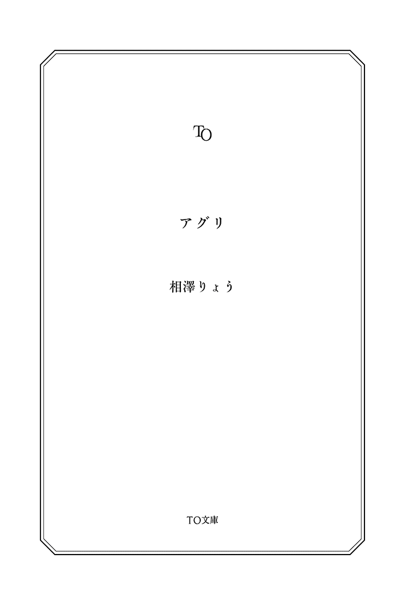

| アグリ (TO文庫) | |
| 相澤りょう | |
| (2014) | |
山形県に暮らす、岡崎駿（おかざき・しゅん）は高校二年生。幼い頃から郷土料理の芋煮（いもに）鍋が大好きだった。美味しい里芋を育てたいと農業科に進学したものの、授業と実習に追われてばかり。そんなある日、課外研究で個性的な仲間達と出会い、笑い、時には涙しながら、最高の里芋作りに挑戦する。さらに、毎年20万人が来場する「日本一のいも煮フェスティバル」への参加を目指すが......。 農業高校生たちの食と笑顔あふれる青春グラフィティ！
カバーイラスト：九条Ｍ＋
カバーデザイン：坂野公一（welle design）

アグリ
秋がやってきた。芋 煮 の秋だ。
青い空に夏のような積雲が立つ、九月初旬の日曜日。
青々とした山並みを照らすように、残暑の太陽が笑顔を浮かべていた。
空から注ぐ光が、川の水面に反射してキラキラとまぶしい。
ここは、山形県山形市。
馬見ヶ 崎 の河川敷は、蒸せかえるような熱い空気に包まれていた。
子どもも大人も見上げるほどの巨大な鉄の鍋が、ぐらぐらと火にかかっている。
日本全国あちこちに川はあるが、おなかがすく、甘いしょうゆの匂いがふんわりとたちこめる河川敷はここだけだ。
六メートルもある大鍋の端から、白い湯気が立ちのぼっている。
青空に突き出たクレーンが、ゆっくりと大きな鉄鍋のふたを開けた瞬間。
──ふわんっ、ぼわわわんっ......。
どんと構えた鍋から広がる湯気の帯に圧倒され、その場の誰もが感嘆の声をあげる。
高い空に吸い込まれていく水蒸気。
ひと呼吸置いて、「ほぅっ」とも、「はうっ」ともつかない、ざわめき。
あたり一面に広がった芋煮のやわらかな香りが、大勢の観光客や親子連れの胃袋を直撃する。
「あぁ、たまんねぇ。いい香りがする」
「はやく食べたい！」
そう、今日の芋煮は特別だ。
地元ならではの特製しょうゆに砂糖、地酒を使った煮汁。
この日のために厳選された山形県産の黒毛和牛。そこから染みだした牛脂。
里芋は、市内の農地で丹精込めて栽培した土 垂 。長ネギや、コンニャクと一緒に、煮汁に溶けだしたうまみを吸って、じわっと染みる優しい味に仕上がる。
はい、どうぞと手渡される、この地の豊かな実りがつまった一杯。
ありがとう、いただきますと自然に芽生える、感謝の気持ち。
おなかも心もほっこりするのが、山形名物「いも煮フェスティバル」の醍醐味だ。
ぐおぉーん！ 会場に重機のエンジン音が響き、地面が揺れる。
鍋の横にそびえたつのは、食用油で整備されたショベルカー。
毎年、何万人もの芋煮のために、特別に準備される新品の重機だ。
うなり声を上げるショベルカーは、お玉の代わり。
豪快に鍋の中をかき、一すくい。
配ぜん用の中鍋に移すと、あっという間にいっぱいになる。
煮汁のしぶきが飛んで、匂いが弾けるダイナミックさも観客をひきつける魅力だ。子どもからお年寄りまで集まった観客から歓声があがった。
「すっげー」
この一すくいで何人分の芋煮が準備できるのか、想像するのも難しい。
重機と大鍋。実際に見た人しか信じられない、けた違いのスケール感。
この非日常的な光景は子どもたちの心に焼きつき、しっかりと刻まれている。
「オーライ、オーライ！」
真っ白な調理服を着たスタッフが動き回り、声を張り上げて重機を誘導する。
高い台の上で鍋をかきまわす姿に、羨望の眼差しを向ける子どもたち。
瞳はらんらんと輝き、それは夏の太陽にも負けないぐらいのきらめきを持っていた。
そんな子どもたちに混じって。
模擬試験帰りの中学生が二人。岡崎 駿 と若 林 智 香 は、ショベルカーの脇を歩いていた。
制服の中学生の姿は、他に見当たらない。
「駿、いつもの場所、資材置き場で立入禁止みたい」
「まぁ、双月橋 は、日射しも雨もしのげる一等地だから」
そうは言っても、地元では、毎年、フェスティバルの日は雨が降らないことになっている。有名な話だ。
午後三時。
部活も引退して、一応、受験モードになったとはいえ......。
まっすぐ家に帰るには、ちょっと早い時間。
毎年、岡崎家と若林家は一緒に鍋を囲み、芋煮を食べていたご近所さん。
「受験だから、今年は芋煮会はなしね」と親に言われて、何となく物足りなかった。
そんなタイミングで、模試帰りにコンビニの前で会ってしまった。
芋煮好きの駿と、おいしいもので動く智香には、きっかけはそれで十分だった。
いも煮フェスティバルに来たのは数年ぶり。小学生のとき以来だった。
「駿、歩こう。天気いいし」
芋煮の器を手に、慣れた感じで土手をさくさく進む智香。
智香の横や後ろを、芋煮をこぼさないように慎重に歩く駿。
あちこちに座っている観光客は、まったりとくつろいでいる。
すれ違う親子連れは、人にぶつからないよう、ゆっくりと歩いている。
空いたところに出るまで、しばらくかかりそうだ。
「中学生になって、いも煮フェスに来なくなるわけがわかったかも」
唐突に、智香が、額の汗をハンカチで拭いながら言う。
「どした？ 暑くて疲れたか？」
「部活に比べればどうってことない。きっと毎日部活漬けだから、これないんだね」
「毎日ってのはおおげさだろ」
「じゃあ、なんで。あ、校則で禁止されてたっけ」
「そんな学校ないって」
山形では秋になると、スーパーの入口、八百屋の店先、農家の前の道端に、主役の里芋がごろごろ並ぶ。コンビニにも「薪 」や「炭」が積まれるのが当たり前。
スーパーのサービスカウンターでは大鍋の貸出予約が次々と埋まっていく。
毎週のように家族や友人たちでわいわいと芋煮を食べていたら、わざわざフェスに食べに来ないというのも道理だ。
地元民からすれば、ゆっくり食べる場所がないとやはり落ち着かない。
のんびりとした時間。
ゆるやかな馬見ヶ崎川の流れ。
土手をだいぶ歩いて、遠くにフェスティバルの会場が見えるあたり。
「たき火禁止」ではなく「ちゃんと片付けましょう」と、気の利いた看板が立っている馬見ヶ崎の河川敷の外れに、二人は腰を下ろした。
「いっただっきまーす！」
「いただきまぁす」
元気な声で割り箸を手に、器のどまんなかへと心を躍らせる。
芋煮は、山形県民のソウルフード。特別なグルメとかではない、日常食だ。
それぞれの家庭の味があるが、里芋を牛肉やネギと一緒に、だしや砂糖、しょうゆなどを入れた鍋でじっくりと煮込む。牛肉はもちろん国産牛、できれば米沢牛。
しみ出した肉の脂と、甘いしょうゆ味のしみた里芋に、さらに人参や大根も入れて、根菜類の味わいを楽しめれば、晴れて大人の仲間入り。
家によっては、コンニャクやきのこを入れたり、しめにご飯を入れて雑炊にしたりする。うどんを入れてもこれまた美味い。
フェスティバルの芋煮は、里芋と肉、ネギとコンニャクの、シンプルなもの。
「まぁまぁかな」
「まぁまぁだね」
芋煮歴十数年の中学三年生が、のほほんと笑う。
「今年も、芋煮の秋が来たーっと」
湯気を上げる器を手に、ほふほふと駿は顔をほころばせる。
両ほほいっぱいに芋をほお張り、器を仰いで汁まで飲み干す。
「うんめー」
ぶはーっと白い吐息と一緒に、満足げに声を上げる。
駿は芋煮が大好きだった。
煮汁に溶け込んだ食材の旨み。一口すするだけで秋の味わいがいっぱいに広がる。
「二十万人も来るって、本当だったんだね。観光客と親子連ればかりだけど」
駿の隣、土手の斜面に腰掛けながら、智香は箸を動かし、汁をすすった。
「九月の祭り、フェスティバルは始まりの合図みたいなもんだ」
志望校も同じ幼なじみに、地元民なら知ってるだろという口ぶりで返す駿。
全国ニュースでクレーン車と大きな鍋の画 が映し出されるのは九月の初め。
だが、あれはシーズン開幕のお祭りで、里芋の旬の十月こそ、芋煮会の季節だと駿は思っていた。
いつの頃からか、駿にとっては、近所の智香の家との芋煮会が一番おいしい秋のイベントになっていた。家族ぐるみのつきあいだから、デートではない。
けれど、親は親どうし酒を飲むので、自然に、子どもは子どもどうしで、と。
毎年秋、駿は智香と一緒に双月橋の下に座って、川の流れを見ながら芋煮を食べるようになっていた。
何で楽しみだったのか。芋煮以外の理由も見つけてしまった。
おいしそうに食べている智香の笑顔を見ると、ほっこりするのだ。
普段はボーイッシュでキリッとした眉の智香なのだが、おいしいものを食べると、顔がふにゃっとにやけるのだ。
バトミントン部を引退して、短かった髪も今では肩にかかるまで伸びている。今は食べる最中に髪が垂れてこないよう、オレンジ色のヘアクリップで留めていた。
なんだか、智香が前よりかわいくなったような気がする。
見ているのを気づかれたくなくて、駿は首を振った。
ちょっと火照ったほほを冷ましたほうがいいのだろうか。
ごまかすようにワイシャツの襟元のボタンを開け、大きく息を吸い込んで、立ち上がって手足を伸ばす。
隣に座っている智香は、夏服の紺色のプリーツスカート。ごくごく普通の制服で、今日は下にジャージを履いていない。
智香は芋煮の器を持って座ったまま、駿のことを見上げて言う。
「戻っておかわりするの、遠いよ。私の分の芋、食べれば？」
智香の申し出を、駿は素直に喜んだ。
ほいっ、と智香は器を差し出した。
「取っていいよ。あ、肉は残しといてね。芋だけだよ」
器の中には、里芋がごろごろと残っていた。
「もともと、里芋きらいなわけじゃないよな」
「ん〜、この何とも言えない食感は、好きな人は好きかも？」
なぜ疑問形？ 智香はグルメレポーターになりたいのか？
幼いころから一緒に芋煮鍋を囲んできた駿は驚いた。
「えっ？ いまさら、何言ってんの？」
「うん......もごもごするのは、ちょっと」
そう言うと、智香は、あーあ、とうとう言っちゃった、という顔をした。
よく煮ているから、食べられない固さのはずがない。
「前に、どこかでもっと固いの食べちゃったとき、苦手って思っちゃって」
駿が取っていかないので、智香が駿の器に里芋を移し替える。あっという間に芋の山が出来上がっていく。
「こら、人の器に勝手に入れるな」
「いや、もう、いっぱい食べたし。ネギとか味が染みてるほうが美味しいし。芋は、そっちの肉と交換して」
率直な物言いは、智香らしい。
なんだかんだ言いながら、結局、芋のほとんどが駿の器に移った。
「ほら、さめちゃうから、食べようよ」
また並んで座って、きらきらした川を眺めながら、一緒に芋煮を食べる。
ときどき、智香の横顔を見る。
んふぅ、と美味しそうな顔をしながら、箸を動かしている。
よく見ると、智香が美味しそうな表情で食べているのは、肉やネギ、そして旨味の溶け込んだ汁のときだった。そのわかりやすさには、ある意味、ブレがない。
智香も悪気はないのだろう。
でも、山形の郷土料理代表の芋煮なのに、主役の里芋がこの扱いではひどすぎる。
たまたま固かっただけで、煮込めば柔らかくなるのにと駿は思った。
智香は、最後に一つ残っていた里芋を箸でつついている。
「それくらい、食べろよ」
「やだ」
「食えよ」
「やだったら、やーだ」
二人の距離は近いまま、話の行く末は平行線だ。
けれど、こうと決めたらとことん進む駿は、智香を何とか説得しようとする。
「芋煮の主役は、里芋だろ」
「わたしの主人公は、わたしだもん」
ふっ、と進路のことが駿の頭をよぎった。自分のことを自分で決められる、それはよいことだと担任の先生も言っていた。存在価値。アイデンティティ。
里芋の存在価値を否定されて、駿は、自分が否定されてしまうような気がした。
「......せっかくつくった里芋を残すのは、農家の人に失礼だべ」
駿は、つい、大人が使うような言葉を借りてきて、言ってしまった。
わかってる、という顔で、智香はむすっと口を尖らせると、押し黙ってしまった。
（......言い過ぎたか？）
山肌に夕日があたって、赤味を増していく。
馬見ヶ崎川が静かに流れている。
智香は、何も言わず川を見ている。
駿は、言葉が見つからないでいた。
場を取りつくろおうとするうちに、遠くの拡声器からアナウンスが流れてきた。
『本日は、いも煮フェスティバルにお越しくださいまして......』
駿が声をかけるタイミングを逃すと、智香は立ちあがり、制服の裾をはたく。
「駿、来年は芋煮会やるんだよね？」
「来年？ ずいぶんと気が早いな」
とはいえ、二人にとって毎年恒例となっている芋煮会。やれないわけはない。
智香は、どこか挑戦的な目をしたかと思うと、いたずらっぽく笑った。
「じゃあ、里芋は駿が準備してね」
そう言って、智香は自分の器に残っていた、最後の里芋を駿に差し出した。
「これより、断然おいしいやつ」
駿は言葉に詰まる。
「これより美味いって言われてもさ......売ってるのはだいたいこんなもんだろ」
「だったら、駿が作っちゃえばいいじゃん」
智香にあっさりと言われて、駿は素直になるほどと思った。
箸を伸ばした駿は、その里芋の味を確かめるように、ゆっくりと口を動かす。
駿にとっては、ごく普通の、なじみのある食感。
だけど、智香の好みには、ちょっと固かったのだ。
その違いをかみしめながら駿が智香を見ると、目をキラキラさせている。
やられた。
ころころと変わる智香の表情に。
どうせだったら、美味いものを一緒に食べて、智香の笑顔を見るほうが嬉しい。
ないなら自分で作ってしまえばいい。
智香の一言は、駿の心に一石を投じた。
駿は、中学での田植えなどの農業体験や、野菜工場の見学のとき、他の勉強にはない何かを感じていた。身体を動かすのも、わりと得意なほうだ。
今なら、間に合う──普通科ではなく農業科を受ける。
中三の秋に志望校を変えたら親や先生に何か言われるだろう。でも、学校は同じ。科を変えるだけでいい。
家から自転車で通えるからと選んだ志望校に、明確な理由ができた。
自分で決めた。本当の意味での志望校だ。
合格したらまた一緒だよと、さっき話したばかり。智香と、来年も再来年も一緒に芋煮会をする姿を思い浮かべる。
名案を胸にしまい、汁を一気に飲み干した。
子どもの頃から毎年飲んできたはずの家の煮汁とは違うのに、いつも以上に美味しい気がする。この味を覚えておこう。
駿は晴れ晴れとした空の下、祭りの熱気とにぎわいの余韻を感じながら、河川敷で見た、たくさんの笑顔を心に焼きつけていた。
そして、春になったのだが......。
無事、駿は農業科に、智香は普通科に合格したものの、科が違うとクラスも授業も異なり、以前のようには、あまり行き来をしなくなってしまった。
いまどきの高校生は忙しい。駿も、智香も、それぞれの高校生活がある。
駿は進学理由も忘れてしまうほど、忙しい日々を送っていた。五教科に実習。考えるより、身体を動かすほうが好きな駿には、そのほうがよかったのかもしれないが。
試しに里芋を作ろうとしたが、庭に植えた種芋は、なぜか芽が出なかった。
秋の芋煮会は、それぞれの親のスケジュールが合わず、一緒にできなかった。
家の芋煮会は近所づきあいの延長だと思っていた駿は、他の理由で智香を誘うのは気恥ずかしかった。智香も同じだった。
だから、どちらも動けなかった。
後になって駿は、智香と食べる時間が楽しかったのかもしれない、と気づいた。
だけど、それ以上に。
ただ、ただ、毎日が忙しくて。
制服と作業着を毎日着替えて汗まみれ。
次第に、泥まみれの日々に負けたくない、という気持ちに変わっていた。
駿は、高校生活二度目の春を迎えようとしていた。
厳しい冬を越えて、春の暖かさが感じられるようになった四月半ば。
山形市内の桜の名所、城跡にある霞 城 公園や、馬見ヶ崎川の桜並木で、ようやく桜の開花が始まった。
街のあちこち、通学路でも、淡い桜色の花弁が一面に広がっている。道端を見れば、とけはじめた積雪の隙間から、芽吹きはじめたつくしにタンポポ、ふきのとうが仲良く顔を並べている。
ここ『明新館 高等学校』にも新たな春が訪れていた。
時刻は昼下がり。
学校に隣接した「圃 場 」、わかりやすく言うと「畑」。
その圃場を囲む土手は、春の花見以上の熱気に包まれていた。
そこには、泥だらけの作業着で声をあげる、農業科の学生たちの姿があった。
「焼きそばパンが食いてぇ！ 頼む！ 岡崎っ」
「岡崎、がんばれ！ お前が勝てば、メロンパンが手に入る！」
「駿！ おれたちの胃袋を満たしてくれ！」
昼食を賭けた大一番が始まろうとしていた。
季節の始め。今日は野菜の定 植 を控えた合同作業の日。
ていしょく、と聞いておなかを空かせてはならない。
苗を別のところで育てて、ちゃんと整備した畑に植えるから「定植」。
畑を整備する作業、いわゆる圃場整備には、作物が育ちやすいよう、人が管理しやすいようにと、細長く畑の土を一段高く盛り上げる「畝 立て」が含まれる。
畑で、まっすぐに作物が植えられている列が並ぶ、あの盛り上がりだ。
畝立ては重労働だから、先生も学生のやる気が出るように授業を工夫する。
それが、購買のおばちゃんの協力を得て開催される、恒例の畝立てレースだった。
授業の終盤に差し掛かるにつれて、徐々に浮足だってくる空気。そしてみんなの期待のまなざしは、コース代表の三人に注がれていた。
耕うん機によってふっかふかに耕された畑には、選ばれし三人の姿があった。
進級と同時に農業科の二年生は三つのコースに振り分けられる。その各コースから代表者一名を選出。野菜コースからは駿が選ばれていた。
果樹コース、園芸草花コースからも、それぞれの代表が選ばれている。
観衆は、農高生の二年。スタートを今か今かと待ちわびていた。
全員、鍬 を担いでゴール地点のみを見据えている。
腹ペコ男子と数少ない女子の声援を受けて、闘争心をたぎらせる彼らは、いつにもましてピリピリとしていた。そうなるのも当たり前だった。
この勝負、勝てば「おまけ」がつく。人気で並ばないとなかなか買えない焼きそばパン、メロンパンなど、ベーカリーのパンが購買のおばちゃんからもらえるのだ。
本気にならないわけがない。
育ち盛り、食べ盛りの高校生にとって、パンが一個増えるのは大きな違いだ。
それに、相手が誰だとしても、駿は根っからの負けずぎらいだった。
自分に賭けてくれたクラスメートの期待に応えたい、と駿は意気込んでいた。
「位置について」
三人は中腰になり、ゴールに向かって後ろ向きに鍬を構える。
圃場が緊張感で張り詰めていく。
誰もが生唾を飲んでその様子を見守っていた。
「用意......ドン！」
スタートの合図と同時に歓声が上がり、三人は土に鍬を入れた。
距離にして二十五メートル。
春野菜の作付け準備、与えられたのは一人一列の畝立てだ。
ルールは簡単、最速タイムを出した者が勝者となる。
だが、一番早く畝立てを終わらせてタイムを出せばいいと言うわけではない。
畝立てレースでは指定された畝幅の規定をクリアしていなければならないのだ。
クリアしていなければ失格扱いとなる。
速さと正確さが求められる、この競技。
負けられない戦いが、そこにはあった。
「いや、すげえ。どいつも速いな！」
「あれ、ちょっと、差がついてきたんじゃない？」
三人は一進一退のレース展開だったが、順調な滑り出しを見せていた駿が一歩だけ先に躍り出た。他の二人よりも一歩、二歩と鍬を入れ、徐々に差を広げていく。
よし、行ける！
駿は確かな手応えを感じていた。
こんもりとした指定通りの幅と高さ。少々の粗さは目測で誤差の範囲内。
速度も申し分ない。
大切なのは体さばき。いかに無駄を省いて効率的な動きができるかが鍵。
（この勝負......いや、今日の昼飯は貰った！）
駿の手元は更に加速する。
リズムに合わせてざっくざっくと鍬を入れる。
他の二人との距離を確実に広げていきながら、顔を上げた。
最後まで油断するまいと、駿は鍬を入れて土を起こす。
どのくらいの力加減がベストなのか感覚で覚えてくると、さらにスピードが増す。
残り、目測５メートルを切った。
後方から歓声や悲鳴が聞こえてきて、駿は勝利を確信した。
ちょっと昼が豪華になりそうだ。購買のおばちゃんと楽しく話している自分の姿を想像する。一瞬、そんな妄想が浮かんだが、ゴールまで全力でいく。
目の前の作業であっても、きちんと遠くを見る。
立てた畝が一直線、きれいに揃っている。
この速さに、この出来具合。芸術的だった。
（遠くを見ながら鍬を入れるのが、まっすぐにするコツなんだ）
スピード、美しさ、ともに文句なしの圧勝。
駿の耕うん力は、校内でも知られるところとなっていった。
そして、勝者はビクトリーロードを行く。
昇降口のすぐ先、吹き抜けのエントランス。
そこには学校で唯一の購買部のカウンターがあった。
午前の授業が終わり、昼食を買い求める学生で長蛇の列ができている。
しかし、勝者はその列を横目に見ながら、どうぞ、と開けられた道を歩いていく。
列に並ばなくていいのだ。
くすぐったい視線と空気を感じながら、駿は購買のおばちゃんに声をかける。
「野菜コースの岡崎です！ 野菜コースのみんなの分と、おまけください！」
勝ち名乗りをあげると、おばちゃんは、はいはい、と裏に取りに行く。
ちょっとした優越感。
「もうちょっと待ってね。おまけは、二十個ぐらいあるから仲良くね」
「ありがとー。お代はこれで足りるよね？」
集めてきた小銭を並べて会計が終わるのを待っていたが、どうにも落ち着かない。
（見世物的な気分、って、こういうことか）
購買に集まっている大半が普通科だ。
それもこの学校は元々、女子高だ。合併して共学校になったが、女子高の名残か、普通科には女子生徒が多い。
そんな中、ただでさえ数の少ない男子が作業着を着ていると視線を集めてしまうのだ。もちろん、良い意味だけではない。むしろ、悪い方向で。
「見てよ、あれ......泥だらけ」
「やーね、床が汚れちゃう」
女子が話す声が聞こえて、駿はガラスに映った自分の姿を見た。
ちゃんと泥は落としてきたはずだった。まだ残ってるところがあったのか。
ほほを伝う汗をタオルで拭う。汗が黒ずんでいた。
あぁ、顔についていたのか。まったく気がつかなった。
（もしかして、ビクトリーロードって、道が開いているのって、もしかして......）
駿は、汚れている自分が、避けられていただけではないか、と。
勇者のつもりが、道化だったのか。
これじゃ、笑われるのも無理はない。恥ずかしくて、思わず、下を向いてしまった。
さらに、どこからか追いうちが来る。
「ほんとほんと、そもそも農業ってダサいよね」
昼休みに何をしゃべろうが彼女たちの勝手だが、何も知らないくせに農業のことをどうこう言われるとムカっとする。
「お前ら、そのダサい農業のおかげで毎日美味い飯食えてるのがわかんねーのか!? 」と、面と向かってズバッと言ってやりたい。
けど、そんな器量と度胸は持ち合わせていなかった。
ましてやここで敵を作ったら、ただでさえ肩身の狭い思いをしている農業科への風当たりが強くなる。
（我慢、我慢、我慢、堪 えろー）
唱えるように自分に言い聞かせる。
いつものこと。慣れたものだ。言いたいやつには言わせておけばいい。
お前ら、農家の皆さんがストライキしたら米も食えなくなっちゃうんだからな。
輸入米じゃ満足できなくなって、きっと国内産の米を欲しがるんだ。
その時にごめんなさいしてきても知らねーんだからな。
駿は心の中でせめてもの抵抗を見せた。
購買のおばちゃんが声をかける。
「駿ちゃん、お待たせ。見事な勝ちっぷりだったみたいね」
野菜コースのみんなが希望していたパンの山を、サンタクロースのように肩に担いで、購買を後にする。
（......俺、勝者、だよな？ 何でパン運んでるんだろ？）
空腹だからそんなことを考えるのかも。少し早足で駿は教室に戻っていった。
農業科ってだけで馬鹿にされたり、下に見られたりするのは間違っている。
駿が一年間で抱いた想いだった。
みんな、一次産業の大切さをまるでわかっちゃいないんだ。
今、日本の恵まれた、豊かな生活を支えているのは一体誰のおかげなのか、ちゃんとわかって欲しい。米粒一つを作るために農家が汗水流していることを知っていて欲しい。脚光を浴びるのはいつも最先端技術に第二次、第三次産業ばかり。
なら、どうやって知ってもらうのか、これがなかなか難しい。軽視されがちな一次産業は、馬鹿にしてきた彼女たちの言う通り「地味」なのだ。
昼休み後半。農業棟の教室から笑い声が聞こえてくる。
ふだんより多めの昼食を終えて、個人差はあるけれどもみんなまだ元気だった。
三人掛けの机に座っていた駿は、午後の授業を前に、野菜コースの面々に購買での出来事を不満げに漏らした。
こういう辛い風当たりを感じているのは駿だけではない。
「普通科が偉いのかってんだ」
「まぁ、俺たちよりは勉強できるのは確かだし」
その一言でシーンと静まり返る。
同じ学校であっても、学力に明確な差がある。それが農業科の肩身を狭くする要因であった。
「......女子にモテんのも普通科だし」
農業科の男女比率は普通科とは正反対だ。
集まったのは、未来の嫁を探す農家の一人息子、野球推薦で入ってきた野球バカ、植物が友達という人。それこそ普通とはほど遠い学生が集まる学科だった。
数少ない女子生徒も園芸草花コースに流れてしまい、野菜コースは男子ばかり。
それが何を意味するのか、言うまでもなかった。
「俺たちの彼女は土......ってか」
自虐的な一言が彼らにとどめを刺す。室内は一気に梅雨入りしたようだった。
陰鬱とした空気の中、教室の扉が開くと、おうっ、と城島先生が入ってきた。
「お前ら、雑談もそこまでにしておけ。ほら、号令」
ガタイのいい城島先生が教壇に立つと、始業ベルがそれに遅れて鳴り始めた。
「で、早速実習......と、行きたいところだが」
出席確認を終えた城島先生は、黒板に向き合うとチョークを手に取った。
普段なら外に集合して出席確認だったが、今日は珍しく教室待機。
先生は黒板の文字をわざわざ赤色で書き、太い枠で囲んだ。
そこには『課題研究』の四文字。
わざとらしく咳払いをすると城島先生は話しはじめた。
「課題研究ってのは、文字通り、課題を見つけて、研究することだ。二年生からは年間を通して、自分たちで育てる作物を選んでもらう。アプローチの仕方はお前らに任せるが、その過程は一つ一つ記録しておくこと」
面倒そうではあるが、作物を選べるのはいいと駿は思った。
「で、その結果はプロジェクト発表で言ってもらう。いいな？」
プロジェクト発表とは一年に一回行われる発表会のことだ。
各々が一年間作物を育てて勉強してきたことをパワーポイントで紹介、説明するもので、正直、去年は眠かった。
ずっと聞き手でしかなかったし、原稿も棒読みだったから頭に入ってこなかった。授業の一環でやらされている感がありありだった。
それが、次は発表する側に回るわけだ。
城島先生が話を続ける。
「お前ら。午後も自分たちで課題用の畑を耕すんだ。ちゃちゃっと話を進めさせろ」
「ちょっと待ってくださいよ。じゃあ、午前中に畝立てしたのは？」
「あれは、普通の授業用で課題研究の分じゃない。説明してなかったっけ？」
すまん、うっかりしてたと反省の色を見せない先生に、生徒たちがブーイング。
鎮圧に数分の時間を要した。
「それでだ。課題研究で何かやってみたい作物はあるか？ 何かないか？」
野菜コースの面々は顔を見合わせた。
小声で「何かないのか」と教室中から聞こえてくる。畝立てにはあれだけ文句を言っておきながら、誰一人として挙手をするものはいなかった。
みんな主張が弱い。
野菜コースは草食男子の集まりなのだ。
押し黙る生徒たちを前に、先生は助け船を出す。
「希望がねぇんなら、去年、先輩たちがやってみたものから選んでもらう」
そう言って黒板に野菜コースならではの作物を書き連ねていく。
葉 菜 類、根菜 類、果 菜 類、茎菜 類、花 菜 類。
駿も、思うところはあるのだが、言ってよいのかどうかを腕組みして考えていた。
つまり「里芋」の一言が言い出せずに、駿は悩んでいたのだ。
好きな作物として里芋を推してよいのか。
個人的な理由ではなく、他にもっともな理由があるだろうかと。
駿は、秋にいろいろな作物を収穫したときの楽しさを妄想してみた。
頭を垂れる金色の稲穂。熟れる果実、みずみずしく大きくなった野菜類。
収穫の秋。山形の秋と言ったら芋煮会。
これは、十分な理由になる。
決心した駿は身を乗り出して手を挙げた。
「先生！ 俺、やってみたい作物あります！」
「ほう、なんだ。言ってみ」
どこか嬉しそうに笑う先生に、駿は得意げな顔で言った。
「里芋、どうですか？ 俺、里芋を育てて芋煮会したいです」
ついさっきまでの先生の笑顔は、なぜか苦笑いに変わった。
「んだなぁ、悪くはねぇんだけどー」
そんな先生に対して、クラスの男子は駿の意見を応援する。
「だって、秋になれば芋煮だべ。それで芋煮会すれば......なぁ？」
「確かにいいな。それって女子も参加だべ？」
「芋煮で合コンか、夢が広がるな」
「んー。まぁ、そうだな」
勝手に盛り上がる男子をよそに、先生は苦笑いしたまま生返事。
（あれ、これってダメなパターン？）
先生にとって、想定していた作物ではなかったのだろう。微妙な面持ちで、あごをさすりながら渋い顔をしている。
いかつい顔に、その作物以外にしてくれないか、と書いてある。
「面白そうな題材だけど......ここの気候じゃ育てづらいんだよ」
そういうと城島先生は黒板にチョークを走らせる。
突如として始まった作物講座に、みんなノートを取り出して書きはじめる。
「いいか、寒暖差があるから山形だと生育が厳しいんだ。地表に出てる里芋の茎の部分は、特に寒さに弱いからな」
いくら春と言っても、やはり東北。冷害がないとは言い切れない。春先に定植する里芋にとって、生育初期の遅霜はリスクが高い。
「そもそも山形県で芋煮が盛んとは言ってもな。使われてる里芋は県外産がほとんどなんだぞ」
「えっ......県外産？」
「うそ、マジかよ」
ざわざわと男子たちは一斉に騒ぎだす。その事実を知らなかったようだ。
先生は言い聞かせるように、軽く黒板をたたく。
「情けないな。お前ら、それでも農業科か？ 土だけじゃなくて、生産地の気候にも気を配らないとダメだぞ」
先生は額に手を当てて嘆いた。
「で、一番の生産量は千葉県、次いで宮崎。温暖な土地で栽培されることがほとんどで、山形じゃ数はそんなに多くないな」
栽培自体は全くないわけじゃない。
じゃあ、どうしてそこまで栽培されていないのか？
「よく考えてみろ、芋煮会シーズンの九月、十月は米の収穫で忙しいだろ？ それで里芋の収穫時期は十月半ばだ。一番、欲しい時期に収穫できないからなかなか収益も出せない。どこの農家でも栽培しているのはだいたい自家用で、市場に出回ることが少ないってわけだ」
「なるほど......」
農業について学ぶなら、農作業ばかりでなく産業として収益を考えることも大事だ。
「難しいってこと、わかってくれたか？」
里芋の背景がわかり、また一つ賢くなった。
だいたいの説明を終えると、先生はニッと笑って代案を出してきた。
「で、代わりと言っちゃなんだが果菜類はどうだ？」
結局、駿はＬＥＤ（発光ダイオード）を利用した、イチゴ栽培の研究チームに入ることになった。
最近の方針では果菜類を重点的にやっているらしい。
果菜類とは野菜の中で食べる部分が果実とか種実である野菜のこと。果物のほか、トマト、キュウリ、インゲンマメとか夏の爽やかなイメージがある。
駿はその中でも面白そうなイチゴチームとメロンチームで悩んだが、ＬＥＤって単語がちょっとインテリチックでカッコいいから選んだのだった。もちろんみんなには内緒だ。
だが、チームに割り振りされ作業に向かう頃には、駿の中に疑問が生まれていた。
（好きな作物の課題研究とか言っておきながら、難しいからダメって）
反骨心のような感情。胸にもやもや。
あれでは先生の都合がいいように選ばされているだけだ。
その難しいことを、どうにか工夫するのが課題研究ってやつじゃないのか？
コストがかかるなら、削減するための工夫。
労力がかかるなら、効率的な栽培法。
そうやって知恵を絞って発展してきた一次産業なのに、難しいの一言で思考停止にするのはどうかと思う。どうせだったら好きにやらせてくれればいいのに。
せっかく課題研究をするのであれば、そっちのほうが絶対に面白い。
他の作物の研究がいやなわけじゃない。
目に見えて成長を見ることができる果菜類だって、収穫するまで出来がわからない根菜類だって一緒だ。汗水流して育てた作物の収穫を迎えれば喜びは何にも代えがたい達成感がある。
確かに環境に得手不得手はあるけれども、どの作物だって愛着がわく。
駿が納得できないのは、難しいからダメ、と言われたことだった。
他の作物を選ぶことに不満があるのではなく、「難しいから」の一辺倒で選択肢にも選ばれないことが不満なのだ。
芋煮は、山形の代表的な郷土料理だ。地産地消が叫ばれている昨今、せめて芋煮ぐらいは全て地元の農作物で食べたいものだ。
需要があるのに、それに応えることができないものか。
そうできればきっとみんな喜ぶはずだし、秋が来るのがもっと楽しみになる。
美味しい里芋を駿が作ればいい、と言ってくれた、中学時代の智香との会話を思い出す。美味しい里芋を食べたいと、期待する声は確かにあるのだ。
やりがいのある、ある種のビジネスチャンスのようにも思えてきて、駿は胸にこみあげるものを感じていた。
放課後。
太陽が今日一日の役目を終えて、西のほうに傾いていく。放課後特有のざわざわした感じ。部活動に励む生徒、他愛ないおしゃべりで交友を深める生徒。だが、駿は昇降口に向かう。今日は部活も作業もない日だ。残ってもやることがなかった。
今日は大人しく帰ろう。
日は長くなってきたが、さすがに夕暮れになるとまだ肌寒い。
授業を終えて帰宅しようとした駿は、駐輪場で智香とばったり鉢合わせた。
「おぅ......智香 、今帰り？」
駿は、自然に聞こえるように声をかけた。感情が出ないようにと気をつけながら。
「ん？ あっ......」
智香は周囲を見渡す。
誰もいないことを確認すると、ホッと胸をなでおろしたようだった。
二人で話すところを人に見られたくないのか、と、駿は地味にショックを受ける。
（結構、傷つくんだけどなぁ）
「お前、人の顔を見てそれかよ、失礼な奴だな」
「そうじゃなくてっ......学校じゃ、下の名前で呼ぶなって言ってるでしょ」
ギロリと音がしそうな視線。
なまじ顔立ちもいいから眼力もある。城島先生とは違う意味で迫力があった。
しばらくの沈黙の後、智香は小さくため息をもらして、耳にかかる髪をかきあげた。
男ばかりのクラスに馴染み過ぎたせいか、駿は、そんな仕草に少しどきっとする。
ここ二、三年で智香はぐっと大人になった。髪も伸ばしてうっすらとメイク。さすが女子高生。綺麗に切りそろえられ、ケアも行き届いているようで髪はサラサラ。
スカートの下にジャージを履いていた姿を知っている駿にしてみれば、雰囲気も大きく変わって見える。
「で、そっちも帰り？」
「そっ、今日は部活も休み。今日は体育館使えないんだって」
「ふーん」
「駿は作業とかないの？」
「今日は授業中で全部終わったし、土の準備ができてないから定植にも早いんだ」
「土の準備に、テイショク？ よくわからないけど、大変そう」
会話が途切れ、二人の間に沈黙が流れた。
遠くのグラウンドで、野球部がボールを打つ快音と掛け声が響いていた。
学校はバイパスにほど近く、上 山 市と山形市の境に位置していた。
市街から少し離れていて、周囲は田んぼ。車を使えない高校生にはちょっと不便な場所だった。
自宅から最寄りのバス停が遠い学生は皆、雨が降らない限り自転車通学だ。
二人は穏やかな春空の下、自転車を漕いで田圃 道 を帰っていた。
横目に見ればどこの田んぼもトラクターが忙しそうに往復している。水入れも控え、田植えの準備も始まっているようだった。
爽やかな風に吹かれながら、駿は、智香と自転車を並んで走らせながら内心浮かれていた。
こうやって一緒に帰るのは久しぶりだった。
入学当初はこういう機会もあったが、その回数は目に見えて減っていた。
「普通科からしたら、農業科ってどうなの？」
「何よ、いきなり」
何気ない会話のつもりだった。
「いや、説明すると長くなるんだけどさ」
駿は智香に一部始終を話して聞かせた。
農作業の健闘ぶりと、購買での一幕。
普通科の生徒から受ける嘲笑と、肩身の狭い思いをしていることを話した。
そもそも二人の通う、明新館は近隣高校が合併した総合高校だった。普通科、情報経営科、園芸学科、食品加工科といった学科が存在し、その中でも農業科は学力的にもちょっと控えめで主張が弱い。
そして駿は農業科、智香は普通科だった。
「とりあえず、農業科が馬鹿にされる風潮は納得いかない」
話を聞かされていた智香はクスクスと笑っていた。
「まぁ、女の子たちの言い分もわからなくはないけどね」
「んなっ、智香 はそっちの味方か、裏切り者め」
「だから、トモって......まっ、いいか。それに私は、おいしいものの味方だかんね。だいたい、女子高生が農業に興味持つと思う？」
「......いや、ないな」
あの様子を見る限り、微塵も思っちゃいないだろう。
「でしょ？ 流行に置いて行かれないよう必死な女子高生は見向きしないって」
不覚にも納得してしまったが、それとこれとは話が別だ。
「だからって馬鹿にしていいわけじゃない」
不当な扱いを受けているのは確かだった。
「普通科だって、ただ五教科の勉強ができるだけだろ？」
「......学生だもん、勉強するよ」
「俺たちだって好きで農業の勉強をしてるのに、馬鹿にすんのはおかしいべ」
不満げに駿が言う。智香は、フツーの女子が考えそうなことを言ってみた。
「だって、農業は３Ｋとか呼ばれているんでしょ？ キツイ、汚い、地味みたいな。そんなの好き好んでやってる時点でおかしいって思われてるんじゃないの？」
「おかしいってお前......しかも最後、Ｋになってないぞ」
「っ......揚げ足取らないでよ！」
真剣に考えてあげてるのに、と怒る智香。いつもの口論へと早変わり。
「そ、それに農作物とか、別に勉強しなくても、誰が作っても育つんじゃないの？」
心をぶん殴られたような気がした。
ほほを叩かれるよりもずっと強い痛み。駿の中で何かが切れた。
「......今、なんて言った？」
智香もハッとしたが、今更態度を変えるわけでもない。
「だ、誰が作っても一緒って言ったの」
聞き間違いじゃなかった！
胸の奥底から怒りや悔しさに似た何かが込み上げてくる。
心のどこかで願っていた。日本中の人、普通科の女子......せめて智香だけには理解してもらいたかったが、そう簡単にはいかないようだ。負けてられない。
「ほんなら、農業の勉強ば活かして、俺が作ったから美味いって言わせてやる」
駿は宣戦布告する。
今年の秋は覚悟しておけ。何か、すごいものを作ってやる、と。
怒らせてしまったのに、おいしいものを作ってくれるという駿の申し出を、智香はありがたく受け取ることにした。そして智香は、楽しみにしてるから、という顔で「わかった。バイバイ」と言い、帰っていった。
智香への宣戦布告から一夜。
よくよく考えてみたら課題として育てるのはイチゴ。駿はどうしたものかと頭を悩ませていた。
イチゴを甘いと言わせるだけなら、きっとできると思う。
だが、問題なのはお店に並んでいるものとの差別化だ。俺が作ったから美味いと思わせるには、他と同じじゃ意味がない。
ＬＥＤを使った栽培法を勉強しても糖度を確保できる保証はない。
そもそも、甘いじゃなくて美味いと言わせたい。
そのうえで、他と同じじゃダメなのだ。俺が育てたからとわかってもらいたい。
駿は悶々とした気持ちを抱えながら授業を受けた。ろくに身が入らなかった。
「それじゃ、今日の作業はここまで」
気がつくと一日が終わっていた。駿の中では、未だに解決策を見いだせない。
足りない頭をフル稼働させていると、駿は城島先生に呼び止められた。
「岡崎。遠藤先生が、放課後来て欲しいとのことだ」
急な呼び出し。駿はなぜ呼ばれたのか見当もつかない。
今はそれどころじゃないのに......。
放課後。
駿は農業棟の職員室へと向かっていた。
一般棟と農業棟を繋ぐ渡り廊下を進みながら、駿は小さくため息を漏らす。
頭の中は智香を見返したい気持ちでいっぱい。なのに名案は思い浮かばない。
廊下の壁に張られた展示物を見つつ、職員室にたどり着くと扉を軽くノックする。
呼び出されたとの旨を伝え、先生が来るまで待たせてもらう。
こっちの職員室は気が楽だ。椅子に作業着がかけてあったり、机のわきに長靴が置いてあったりと、この雑多な感じはきらいじゃない。
三分、五分、十分と待った。
いつまで経っても遠藤先生の姿は一向に見えなかった。
気を紛らわせようと視線を泳がせていると、机の上に書籍や資料がところ狭しと、整然と並べられているのが目に入った。
何に関連するものなのか、首をかしげて背表紙をのぞき込む。
（えーっと、なになに......継代培養 におけるウイルスの有無？）
タイトルを全て読み切ろうというところで、職員室の扉が音をたてて勢いよく開いた。
驚いて振り返ると、小柄できびきびした感じの遠藤先生と目が合う。
先生はパァっと花が咲くような日焼けした笑顔を浮かべる。
「よかったよかった。来てくれましたか。随分と待たせてしまって申し訳ないね」
農業科の先生にしては珍しい白衣にスーツ姿で、ソフトな感じ。
遠藤先生は赴任後まだ日は浅いが、教育にも研究にも熱心な、名物先生だ。駿は今年からバイオテクノロジー学の授業を受ける予定だが、まだ面識はない。
だから駿は、呼び出しの理由が思いつかない。
先生はよほど急いできたらしく、ハンカチで額に滲んだ汗を拭っている。
「学年の職員会議が長引いて、遅くなってしまったよ。まだ、時間は大丈夫？」
はい、と駿が答えると、先生は嬉しそうに顔をくしゃっとして、微笑んだ。
「そっかそっか、本題に入る前にお茶でも。ウーロン茶と緑茶、どっちがいい？」
「......じゃ、ウーロン茶でお願いします」
冷蔵庫から持ってきたお茶を手渡すと椅子に腰かける。
「遠慮しないで飲んでいいですからね」
プルタブを引くと缶の中に閉じ込められていた空気が景気のいい音を上げた。
「で、今日呼ばれた理由ってなんなんですか？」
駿はお茶を一口流し込んでそう言った。
先生は書類に埋もれた机に空きを作って缶を置くと、一冊のノートを取りだした。
「城島先生から聞いたんですけどね......っと、あったあった」
ノートをめくりながら、遠藤先生は不敵に笑ってみせる。
駿は思わず身構えてしまった。
いったい、城島先生はどんな情報をリークしたんだ。
授業態度も真面目なほうだと自負しているし、少なくとも怒られるようなことに思い当たる節はこれっぽっちもない。
遠藤先生の笑みの真意がわからない。
白衣にスーツ。何か実験とかなのだろうか。
駿はゴクリと生唾を飲む。
「岡崎君、キミ......里芋を作りたいんですって？」
先生はそう言って目を爛々と輝かせ、期待のまなざしを向けてくる。
駿は正直、返答に困った。
里芋を作りたいか。
課題研究のことだろうか。だがそれはもう諦めることになった題材だ。今はイチゴの栽培チームに配属されたわけで、それが今の悩みの種......。
「そ......そうでしたけど」
あくまで過去形で肯定した瞬間だった。
勢いよく手を取られたかと思うと、上下に揺さぶられた。
身体が持っていかれる程の力に、駿はさらに困惑の色を深める。
「いやぁ、素晴らしい！ 君は学生の鏡だ」
（近いし、痛い！）
遠藤先生は身を乗り出して駿に迫り、ちょっと怖いくらいだ。
「提供される課題とは別に自発的に新たなことに挑戦しようとする姿勢。それも芋煮会、地産地消を促すために里芋を育てたいだなんて、その若さでなかなか言い出せることじゃないですよ」
駿は真正面から熱い視線を送られ、勢いに圧倒されていた。
「君のような学生を、必要としている場所があるんです！」
ずいずいと言い寄られ、まくし立てられた駿は流されるまま首を縦に振った。
どうも、遠藤先生は生徒を乗せるのが上手らしい。
駿が案内されたのは農業棟の座学室、職員室に隣接する教室だった。先生の後に続いて教室に入るとそこに集まっていたのは三人。学年も違うし、もちろん面識もない。
いったい、彼らはどういう集まりなのか。
真ん中の机の男女二人は、どうやら三年生のようだ。
細めのフチなしメガネが似合う男子の先輩は、ホワイトボードの近くに座っていて、あずき＆マーガリンのコッペパンの袋をぽふっと開けてパクついている。
内向きにカールした髪に天使の輪。爽やかなアイドルみたいに屈託のない笑顔 を浮かべ、駿に、空いている席を指さした。
駿は、優しそうな先輩だなと安心した。
もう一人は黒ぶちメガネの女子で、髪をきっちり三つ編みにして垂らしていた。
真剣な面持ちで二種類のジャムパンをちぎって、左右交互に食べ比べている彼女のほほは時折もきゅもきゅと膨らんでいた。
まるでシマリスだ。
熱心に食べ比べていて、遠藤先生と駿が教室に入ってきたことにも気づいていない。
窓際の席に座る小 洒落 た男子生徒は、前髪を時々かきあげながらカラフルな最新の農機具カタログを読み、ランチパックをかじっていた。ランチパックゆえに中身はわからない。
そして、これから何が行われるのか、駿にはまったくわからなかった。
遠藤先生は、これで農業科の全学年が揃ったと言っていた。
わかっているのは三人が農業科の生徒というだけだ。
「ささっ、岡崎君も空いている席に座ってください」
「はい」
棒立ちだった駿が、先輩が示してくれた席につくと、教壇に立った先生は冷め止まないテンションで話しはじめる。
「集まってもらった皆さんに説明させてもらいますね。それではこれを」
そう言って仕切り直した遠藤先生は持っていた書類を集まった面々に渡した。
「早速ですが、資料の二ページ目を見てください」
十枚そこそこの紙の束。表紙には「里芋普及プロジェクト」の文字。
資料の中には、活動計画と、県内の農業事情を数値化したデータを、さらにグラフ化したものがまとめられていた。
山形県の実情、里芋栽培の一般普及率の低さが目立って見える。やはり収穫時期が米や他の作物と被っているせいだろうか。城島先生が授業中に説明したように、山形での栽培は難しいことを数値が証明していた。
ぐうの音も出ないとはこのことだろう。
数値が物語っているのは現実、山形県で里芋の栽培が好まれていない証拠だ。
「見てもらってもわかるように、県内普及率は低迷しています」
どうして市場に出回らないのか、その理由は城島先生から先日聞いた。
「それで今日、提案したいのは、普及活動を前提とした里芋の栽培です。里芋の普及プロジェクト......この活動チームに岡崎君、そして三宅君をお誘いしたいのです」
どうやら窓際の生徒の名前は三宅と言うらしい。
「三年生のお二人はこの活動のために、去年から準備を行っていましたが、前田君も白石さんも来年には学校を卒業してしまいます」
語り始めた先生の言葉は、次第に熱を帯びてくる。その語り口調もどこか演説じみているようではあるが、ちゃんと駿にその熱意は伝わってきた。
「この活動を絶やさないよう、代が変わっても受け継いでくれる学生を、積極的な学生を探していたんです。里芋に興味を持っている学生がいて......私は感動しました」
教壇に身を乗り出しそうな様子で先生は言った。
「是非とも協力してくれませんか」
駿はそこでようやく、呼ばれた理由と、何を求められているのかを把握した。
この活動が絶えないように、新しいメンバーが欲しいのだ。
これは、ベンチャービジネスにおけるヘッドハンティング、いや、後継者不足に悩む農家の次代継承シミュレーションなのだろうか？
駿は、全学年揃っていることの意味を理解した。２年生の自分は、かなり期待されているのではないか。
毎年、引き継いでいく課題研究もあるが、課外活動はあくまで有志。やる気のある生徒がいなくなったらそこで活動も終わり。今までの成果も無駄になってしまう。
この勧誘は駿にとって悪い話ではない。
むしろ好都合だ。
期待されている。自分たちで挑戦できる。胸が高鳴る。
返事は考えるまでもなく決まっている。
「俺、やります！ 山形産の里芋での芋煮会、僕たちがやらなくて一体誰がやるっていうんですか！ みんなもそうでしょう？」
先生の熱に当てられたように、駿もいつになく高揚していた。
「わかりました。やる気のある先輩がいるなら、やります」
窓際のランチパック、三宅も参加を表明した。
駿は内心、声を出して喜びたい衝動に駆られていた。
ダメだと思って諦めていた里芋だったけど、運が回ってきた。
経緯はどうあれ、こうして里芋普及プロジェクトチームが結成されたのだった。
春先になったとはいえ、山形県の早朝はまだ寒い。
蔵王山から吹き込む風はシンと冷たく、厚着をしないと肌寒さを感じるほどだ。
日が昇り、ひんやりとする朝の空気は澄んでいて、どこか清々しい。
「今日は天気も良いし、目覚めもいいしで絶好調」
空を見上げた駿は、昨日までの落ち込んだ心情なんてどこ吹く風。
目覚まし時計よりも早起きした駿が、朝の空気を全身で堪能していると、目をこすりながら智香が戻ってくる姿が見えた。
どうやら彼女も朝早くから犬の散歩のようだ。若林家のダックスフント、まろんも駿に気づくと吠えながら駆け寄ってきた。
「おはよう！」
まろんに引っ張られるように駆け寄ってきた智香を、駿は爽やかな笑顔で出迎えた。
「お、おはよう」
駿の足もとにじゃれつくまろんは飼い主と違って朝から元気だ。尻尾を千切れそうなぐらい振り回して、小さい身体を跳ねあげて大喜びのようだ。
「よ〜しよしよし、お前は相変わらず、つやつやだなぁ」
駿がまろんと戯れているのを、智香はリードを持ったまま怪訝な表情で見ていた。
怪しい。腕組みする智香は眉をひそめて言う。
「......朝から妙にテンション高くない？」
「ふっふっふっ〜きっと気のせいだべ」
駿はにやにやと笑ってしまうのを抑えられない。
「まぁ、楽しいんならいいんじゃない」
何か言いたいようだったが、智香はまろんを連れ、自宅に戻っていった。
駿が浮かれているのは、今日が記念すべき里芋プロジェクトの活動初日だからだ。
いったい、どんな活動を展開していくのか、未知数なことばかりで駿はわくわくしていた。気分はまるで遠足前日の小学生だ。
（智香、今に見てろ。絶対にその面、ゆるんだほっぺが戻らないようにしてやるぜ）
不敵な笑みを浮かべる駿。
ほほが緩んでいるのは他でもない駿だった。
プロジェクト初日。
集まったのは昨日と同じ、農業棟の座学室だった。
終業のＨＲ が終わるなり、駿は飛び出すように教室を後にした。
もちろん、駿が一番乗り。続々と現れた昨日と同じ顔ぶれが一卓の机を囲んだ。
遠藤先生は今日も遅れてくるとのこと。
早速活動したいところだったが、昨日は先生の話を聞いただけで終わってしまった。
とりあえず、自己紹介。
先陣を切ったのは三年の男子生徒だ。中指でメガネを持ち上げると、全員の顔を一人ずつ見て、微笑んだ。
「僕は園芸学科三年、野菜コースの前 田 健 人 。去年からこの活動に参加してました......僕のことは下の名前で呼んでもらって構わないから、今後ともよろしく」
人柄の良さが出そうな、素直な顔で健人は頭を下げた。
「それじゃ、次は白石さんお願いね」
そう言って健人が着席すると、次いで横に並んだ三年生の女子生徒の番になった。
何度か深呼吸を繰り返し、意を決した様子で立ちあがった。
「白石 春 菜 ......です......草花コース......です。よろしく、お願いします」
尻すぼみになるように声が小さくなった春菜。最後のほうはちゃんと聞きとれない。
人前で話すのが苦手なのか、結局、視線をずっと落としたままだった。
（やっぱり小動物みたい）
駿の率直な感想だった。
この流れだと時計回りの順番らしい。
春菜が座ると、次は駿の番だった。立ちあがった駿は一度だけ咳払いする。
「二年、野菜コースの岡崎駿です。課題研究でやれなかった分、秋の芋煮会に向けて頑張ります」
他に言う内容が思い浮かばなかっただけに、簡単な説明になってしまった。
駿も自分の番を終えると、頭を下げて大人しく席についた。
最後に一年生が立ちあがって一礼する。
「一年の三宅 雄大 。実家が農家です。この活動では何かしら有益な経験なり、ものにしたいと思っています。よろしくどうぞ」
少々クールというか、農家だからすでに慣れているのか、新入生特有の初々しさは欠片も感じられない。前髪の居所が悪いのか、指先でいじる。
何か、おしゃれなことや農業について話し出すのかと駿は期待したが、挨拶を終えるとさっさと着席してしまった。
教室に訪れたのは沈黙だった。
おいおい、こんな調子で大丈夫なのか。と、駿はこれから同じメンバーとして活動していく上でコミュニケーションが最大の難関ではないかと感じていた。
駿は、もう一度何か言わなくちゃと思い、言った。
「みなさん、これからよろしくお願いします」
まばらな拍手。
うーん、本当に大丈夫なのだろうか。
駿が思い描いていた活動初日とはかけ離れていて、困惑を隠しきれない。
長い沈黙だった。
全員、自己紹介が終わってこの空気。いったいどうすればいいのだろうか。
場の空気が続かない中、健人が口を開いて、質問を投げかける。
「で、早速なんだけど......えっと、岡崎君と三宅君は里芋について、どのぐらいの知識がある？」
二人は揃って表情を曇らせる。
「里芋は専門外なんで」
雄大は農家の息子だが、実際に栽培していないものについては、詳しくないのかもしれない。
「先生から、さわりだけ教えてもらった程度です」
駿も授業中に説明を受けた以上のことは知らなかった。
「そっか、そっか......だったらちょうどいいや」
そう伝えると健人は何度かうなずき、にっこりと笑みを浮かべた。
「それじゃ、さっそくなんだけど、君たちには図書室に行ってもらうね」
駿と雄大は現在、農業棟から離れて図書室に居た。
図書室があるのは一般棟、職員室の上に位置する場所だった。扉を開けて中に入ると、棚に整頓された、たくさんの本に出迎えられた。
駿はどうにも自分が、場違いな気がしてならなかった。
シンと静まり返った図書室。思ったより利用者がいた。机上に分厚い参考書を広げて、一心不乱にペンを走らせる生徒。読書する生徒。みんな普通科のようだ。
共通しているのはみんな静かに各々の時間を過ごしている。ということだった。
駿と雄大も、邪魔にならないよう図書室の端っこ、窓際の席に荷物を置いた。
「さて、早速手分けして探すか」
「......そうですね」
彼らが健人に課されたのは、里芋の生態についての勉強だった。
活動を始め、計画を練る上で、わかりませんは通用しない。最低限の知識を知った上で、初めてスタートラインに立つことができる。遠藤先生から、ミーティングに間に合わなかったときにはそうするようにと言われていたらしい。
というわけで、自己紹介を終えた彼らは図書室を利用しにきたのだ。
本棚に陳列された書籍やファイルを見て、この学校に入学して、こんなにまじめに図書室を利用したことがあっただろうかと、駿はそんなことを考えた。
資料を手に取った駿だったが、どの資料がわかりやすいのかまったくわからない。目次にさらっと目を通して、里芋についての記載があるものは片っ端から机に持っていくことにした。
手分けして資料を探すこと十分。持ち寄った資料で机の上に小さな山ができた。
この山を読破するのは骨が折れそうだ。
頭を使うより、動いているほうが得意な駿だが、ここは集中力を見せるとき。
時計は四時を回ったぐらいだ。時間はまだまだある。
覚悟を決めて『おいしい野菜づくり大図鑑』を手に取った。
普通科の生徒にならって、黙々と本を読み続けること一時間。
数冊に目を通し終わってわかったことが何点かあった。
里芋はタロイモの仲間で、最も北方で栽培されている芋を指すそうだ。
それで面白いのは名づけられ方。
山地で自生するヤマイモに対して、里で育てられたからサトイモ。
何とも単純。
安直なネーミングセンスに駿は思わず苦笑を浮かべた。
そして里芋の栽培自体は難しいものではない。条件さえそろってしまえば、さほど手間がかかる作物ではなかった。水田などの水っぽい土質。日当たりがよく、温暖な気候を好むそうだ。だが、山形の土は水はけがよい傾向にある。
土だけじゃない。収穫時期も品種によってばらつきがあるが、東北地方では早くて八月下旬から十月中旬。やはり他の作物の収穫時期と重なっているため、芋煮会シーズンに収穫が厳しいのだろう。
調べれば調べるほど、授業で先生から聞いた話と合致する。
特徴的なのはイモの付き方だろう。
基 となる親イモに寄り添うように子イモ、そして孫イモとたくさんのイモができる。これが子孫繁栄の縁起物として正月料理に用いられる理由らしい。
加えてイモだけではなく、芋茎 という部分も食用に使われるそうだ。芋がらとも言うらしいが、駿も芋茎までは食べたことがない。たいていはアクが強くえぐみがあるので生食よりも煮物、乾物にして調理するらしい。
どんな味がするのだろうか。
あらかた生態を調べ終えると、駿はふんぞり返って身体を伸ばした。
慣れないことはするもんじゃない。固まっていた身体の節々が音を鳴らしていた。
一番手っ取り早く調べるにはやっぱり図鑑に限る。専門書には詳しく載っているが、学校の図書館で閲覧できる資料には限界がある。栽培技術に関しては、農業試験場の論文なども参考になりそうだが、駿は、わかりやすく、使えそうな書籍中心にチェックを入れていった。これで最低限の情報は集まっただろう。
準備したルーズリーフにびっしりと書き込んだし、ざっと資料にも目を通した。
健人たちの言う基礎知識については一通り押さえることができたと思う。
だが、これからの活動はそれを踏まえた上で、寒暖の激しい東北で芋の栽培を試みるというわけだ。
いったい、どんな方法でやるといいんだろうか。
今後の計画についてしっかり考えなければいけないだろう。
「こんなもんで大丈夫かな」
駿は小声で言った。もちろん図書館で静かにしなくてはならない。だが......二人の間に必要以上の会話はなかった。
むしろ沈黙。駿が声をかけたとしても素っ気ない返事が返ってくるだけだった。
今後、同じプロジェクトチームで活動していく以上、もう少し仲良くなりたいと思う駿だったが、ちょうどいい話題がなかった。
里芋の話は図鑑と資料で事足りるわけで......。
何かないだろうか？ 肩肘をついて雄大を見る。
いったい、彼がどんな人物なのか、先ほどの自己紹介を思い返しながら考えていると、何気ない質問が頭に浮かんだ。
「そう言えば、雄大君の家って何を育ててんの？」
「......いきなりなんですか？」
資料を眺めていた雄大の表情に警戒の色が見える。
「いや、ちょっと気になって」
「......それって話さなくちゃいけないことですか？」
なかなか手厳しい返しである。
雄大との間に心の壁が何層にもある気がして、駿は表情に出さずに内心困った。
「......トマト」
雄大は沈黙に耐えかねたのか、この空気に観念したのか視線を逸らしたまま呟いた。
「へぇ〜、トマトか」
駿は真っ赤でみずみずしいトマトを思い浮かべる。
表面に水滴をつけて日の反射でキラキラと眩しいトマトだ。きっと張りがあって果肉も分厚い、もぎたてのトマトはかぶりついたら果汁が弾けるだろう。そして、受け止めきれなかったジェルがあふれ出して頬を伝う。慌てて果汁を吸い上げるのだ。
清流でキンキンに冷えてるトマトだったらなおさらだ。シチュエーションも相まって、清涼感のあるトマトはきっと美味い。
想像していたら、あやうくよだれが出そうになった。
「いいねぇ、うめーんだろうなぁ」
「そりゃ、爺ちゃんが作ってるトマトが不味いわけねぇべ」
駿の独り言に雄大は身を乗り出して食いついてきた。だが、ハッと我に返ったのか、恥ずかしそうに視線を泳がせる。
その姿は駿からしたら予想外。澄ました雰囲気で、距離を置いている印象だったが、可愛いところもある。
案外、農業的な話だと会話のキャッチボールができるんじゃないか。
「親父さんがやってるんじゃないの？ 農家の息子って言ってたけど......」
雄大はどこか不満気な表情になる。
「親は共働きで兼業。本業で農業やってるのは爺ちゃんたち」
あぁ、なるほど。と相槌を打った。
「それじゃ、農家を継ぐの？」
雄大は頭を小さく縦に振った。
「......俺は爺ちゃんの後を継ぎたいって思ってる」
「偉いじゃん。自分から農業を継ぐなんて今どき少ないだろうし......」
農業に対する若者の認識は、お世辞にも良いとは言えない。智香に３Ｋと間違えられるほどだ。それにもかかわらず、この年齢で農業の道を決めているのは珍しい。
「他にやりたいことなかったん？」
「......野球」
窓の外のグラウンドのほうを見る。
「でも、いいんだ」
寂しそうに雄大は言った。
「中学出たらすぐにでも就農するつもりだったけど、ダメだってさ」
「どうせだったら高校も出てくれたほうが親は安心だろうからな」
雄大は肯定するように再び首を縦に振った。
「だから、卒業して就農する時のために、俺はトマトだけじゃなくてもっといろんな作物の育て方とか、家じゃ挑戦できないこと、役に立つことを勉強するつもりで来たんだけど......」
そう言って雄大は小さくため息を漏らす。
指先でペンを回し始めた彼はどこか行き詰まっているように見える。
「クラスのやつら、やる気がないやつばっかでがっかりって言うか。意識が低いっていうかさ......話が合わないんだよね」
雄大は、周囲に対して壁を感じているらしい。
彼が人を寄せ付けない雰囲気を出しているのは、そのせいなのかもしれない。
「凄いな」
と、誰に言うわけでもなくつぶやいただけだったが、雄大は眉根を寄せて困惑の表情を浮かべている。駿は焦ってその場を取りつくろった。
「いや、やる気って言うか......自分の進路をそこまで決めるって凄いことだと思う。二年になっても自分の進路を真剣に考えてるやつなんて少ないし、俺だってそうだ」
二年生になった今でも、駿は自分の進路をちゃんと考えたことはない。
学年が一つ下なのに、雄大はしっかりしているなと感心する。
「だから自分の意志って言うか、芯が強い雄大君はすげーって思うんだよね」
「そう......ですかね」
雄大は照れを誤魔化すように鼻の頭を掻く。
こうやって見るとやっぱり年相応なんだけど。
「俺なら無理。真似できない。農業科に入ったのだって美味しいものを作って食べさせたいって気持ちだったしね」
そう言うと駿は自嘲気味に笑ってみせた。
「で、爺ちゃんと同じ方法でやってくの？」
「いや、一応、俺にも考えてることがあって......」
「なに企んでるのさ、ちょっと聞かせてよ」
気分を良くしたのか、雄大は就農してからの計画を嬉しそうに語りはじめる。水耕 栽培でやってみたことがあると、彼がノートに図を書いてみせた。
「名づけてトマトの木」
自信満々で語る雄大だったが、駿の反応は薄い。
「......これってトマトなのか？」と、率直な疑問を口にした。
雄大が書いた図はどこから見てもリンゴの木だ。
本来、トマトは苗の脇に支柱を立てる。露地 栽培なら地面に支柱を突き立て、ハウス栽培なら天井から紐かネットを垂らしトマトを絡ませて支える。
なのに、雄大の書いた図にはそれらしきものが存在しない。これでは自身の重さに耐えきれずにトマトは倒れてしまう。
だが、雄大は得意げに答える。
「水耕栽培のトマトってさ、こうやってハウスの中に畝が作られているだろ？」
鉛筆を走らせ、畝を付け加える。図を書きながら説明するつもりだったようだ。
水耕栽培は一切、土を使わない。土の代わりに、スポンジ状の土台を用いるのだ。それが水耕栽培の畝にあたり、そこに作物を植えて育てる。
「苗を一本にまとめて頭上に這 わせるんだ」
雄大は複数の苗を一本にまとめて、束にするというのだ。
環境も整っているため、トマトはグングン生長する。それに下手に手をかけず、自由に育て、天井に張り巡らせたネットに這わせるのだ。そして土台から伸びるトマトを束ねると、まるで樹木。それで「トマトの木」。
管理作業に多くの手がかかるなら、逆にほったらかしにしてのびのびと育てる。
束ねて木にする。なんとも力わざな気がするが、発想の転換だろう。
作業の手間も省け、収穫だって身体を屈める必要がないから腰を痛める心配もない。管理が楽になり、他の作業にあてる時間が増えるのは生産者として合理的だ。
雄大は理論的な面から考えていて、なにより素人目から見ても面白そうな試みだと駿は関心した。
トマトをリンゴのように収穫する光景はちょっと不思議だ。
会話に花を咲かせていると駿は背後に人の気配を感じた。
振り向くと、明らかに作り笑いを浮かべた図書室の司書の先生が立っていた。
「もう少し、静かにお願いできますか？」
「す、すいません」
声量を落として、二人は閉室時間ギリギリまで農業談義で話し込んだ。
翌日の放課後。
職員室の遠藤先生を訪れた駿と雄大は、昨日、図書館で調べた内容をレポートにして提出した。里芋の生態、そして栽培する以上、解決しなくてはいけない問題など。
それを読み終えると遠藤先生は満面の笑みを浮かべた。
「いいですね。ちゃんとまとめられています」
サインをもらった駿と雄大は顔を見合わせてガッツポーズ。
「私は少し遅れますが、人数が集まったら先にミーティングを始めていてください」
職員室を後にした駿と雄大は座学室へと向かっていた。廊下で二人とすれ違う生徒は、訝 しげな表情を浮かべて振り返る。勉強のかいあって、満足のいくレポートを出すことができて、駿たちの顔はにやけていたのだ。
「なかなかいい出来だったんじゃないの？」
「岡崎先輩とあれだけ話し合ったんですから、当ったり前ですよ」
駿と雄大が互いに認める出来栄えだった。
これからの課題も見えてきた。昨日、図書室で話し込んだだけで雄大との心の距離もちょっと縮まった気がしていた。
だが、なんだろうか。この落ち着かない感覚は？
「先輩、どうしたんですか、難しい顔して」
「いや、何だろ......何か寒いっていうか、ぞわっていうか......」
「風邪じゃないですよね？ これから活動を始めるって言うのに、先輩」
この背中に走るムズムズの原因。駿はその違和感に気付いた。
「あぁ......先輩って呼ばれてるからか」
昨日は何も感じなかったけど、日を改めて耳にするとどうにも気恥ずかしい。
「そりゃ、一個上の先輩ですし」
「......農業歴でいえば先輩は三宅くんだし。それに......何か、しっくりこない」
「正直に言うと、岡崎先輩って、友だちっぽいっていうか、俺もそんな気がします」
二人は顔を見合わせて笑う。
「じゃ、お互い下の名前で」
先輩なんて柄じゃないし。
駿は雄大と並んで歩きながら、座学室に向かった。
そして、活動拠点の教室──農業棟座学室。
健人にレポートを見せると、小さく感嘆の声をあげた。
予想以上の出来栄えだったのか、素直に感心してくれた。
「うん、凄くいい。よくこれだけまとめてきたね。先生もきっと褒めてくれたでしょ」
お見通しだった。
「それじゃ、今後の計画について話し合いだね」
机を囲むように四人は席に着いた。
里芋の生態を共有できたところで、当面の活動計画を話し合うことになった。
「それじゃ、とりあえず里芋栽培を普及させるっていうのが目的だけど......どういうアプローチで活動していこうか。意見とか、希望があったら遠慮なく言ってね」
話し合いを進行する健人。春菜は書記係らしい。
すかさず雄大が挙手をする。
「普及させるのが目標だとしたら、農家にとって実益がある栽培方法を確立しないといけないと思います。でなければそこに魅力って感じられないと思うんですよね」
雄大の主張は農業と共に生きている、実に農家らしい現場からの意見だ。
山形県で里芋の需要はあるのに、県内で栽培していない。これは栽培環境の厳しさだけではないだろう。栽培しても儲けが少ないのではないか。
「とは言っても、収量を増やすための規模拡大だけだと作業量を増やすだけだし、根本的な解決になる方法を探さないと。質が落ちちゃ、消費者はきっと納得しないし」
健人も雄大の意見に乗りながら、さらに意見を言う。
やりとりを聞きながら、駿も、譲れない一線があった。
やっぱり食べてもらう以上は笑顔になってもらいたい。
「食べて、この里芋は美味しいって、誰でも違いがわかるくらいでないと」
駿がそう言うと雄大も賛同するようにうなずき、健人も笑顔を浮かべる。そして予想外だったのが、春菜が、一番力強く、そして何度もうなずいて見せたことだった。
おなかがすく農高生だからか、あるいは偶然、食いしんぼうの集まりだったのか。全員、味が大事だと思っていた。
「でも、美味しいイモができるかどうかは、種芋に依存する気もするんだけど......」
難しい顔をして雄大はつぶやいた。
普通、里芋は種芋を使って栽培する。
質の良い種芋を使えば、それだけ収穫できる芋の味も収量も良くなるはず。
とはいえ、現実問題、栽培が普及していない。栽培法の研究も不十分なのだろう。
「まず解決したいのは、やっぱり遅霜対策になりますか」
駿の意見を、健人は肯定する。
「里芋は栽培が簡単な部類に入るけど生育初期に遅霜を受けると後々まで響くから」
山形は春になっても安心できない。急に冷え込むこともあるし、気候も乱れがちで予想しにくい。いかにして里芋の生育環境を守るかがポイントとなりそうだった。
健人がホワイトボードに「マルチ」と書いた。
「僕は、マルチをかけて保温するのが重要だと思う。今までの栽培記録とかを参考にしても冷え込みが予想される春先、ましてや東北では必須になると思うんだ」
健人の意見には、駿も賛成だった。
マルチ栽培。
マルチというビニール質のフィルムで土の表面を覆う方法だ。
土にあらかじめ必要になる肥料を入れたうえで苗を植え、作物の生育を待ち、マルチは収穫まで取らない。これは除草作業を軽減することにもつながる。
芋類に限らず、一般的なあらゆる作物に使われていて、土の保温、保湿効果もあり、作物の成長促進を見込める。生育初期の成長促進は、結果的に収量アップにつながる。
それに何といっても手間がかからない分、夏場の圃場管理が非常に楽になる。広い土地を利用して、収益を上げるには効率も考慮する必要があった。
だが、マルチ栽培は、どこでも実施している。
「それじゃ他の地域と差別化できてませんよね。参考資料も、あくまで報告書の上の話。他県で里芋のマルチが試されたとはいえ、環境が違いすぎると思うんですけど」
少し厳しいようだったが、雄大の意見は正論だった。
かといって、暖かくなるまで、じっと待つというのも現実的ではない。
作物には、それぞれ一番適した定植時期がある。
収穫したい時期を決め、そこから逆算して、それに適した定植の期間中に植えることができなければ、満足のいく収量や品質を保つことは難しい。
春菜が小さな声で提案する。
「藁 、敷く？ マルチで覆う前に」
「二重にするってことか......」
健人は保温に賛成しつつ、さらに意見を重ねる。
「それは効果的だろうけど、作物を寒さから守ってあげるには物足りない気がする。それに必要以上に保温しても夏場になったら逆に暑すぎるんじゃない？」
書記係の春菜は、健人の発言から、次々と要点を書きとめていく。
遅霜、春先、保温、保湿、外気。
並んだ単語から、ふと、駿の脳裏にあるものがよぎる。
根だけでなく茎も葉も、全体を包んで外気から守ってあげればいいわけで......。
「温室とか作れないかな」
何気なく言ったつもりだったが、雄大と健人がピタリと動きを止めた。
「温室......ビニールハウスってことですか。岡崎くん」
これまで口数が少なく、同級生の健人とだけ話していたような春菜が、初めて駿に話しかけ、話の先を促す。
駿は言葉を探し、問いかける。
「廃材を利用すればコストを抑えられるし、手間のかからない作り方があれば、栽培にも現実味が出てくるかなって......暑くなってきたら取り外せるように工夫して」
現実派の雄大も興味を示す。
「面白そうですね。単純でわかりやすい」
健人も実現に前向きだ。
「生育初期だったら、あんまり大きく作らなくても効果は出そうだ......」
そして、春菜がふわりと笑う。
「......私も良いと思う」
駿が思った以上の反応だった。
言ってみたのはいいが、実際問題どうするか。
「じゃあ、試しに作ってみようか」
健人は席を立って言う。
「廃材の再利用だったら先生たちも文句は言わないだろうし、遠藤先生にお願いしたら融通をきかせてもらえるんじゃないかな？」
どうするかなんて改めて確認する必要もない。
四人は早速、行動に移った。
灰色の校舎脇に、学校が管理する小規模な圃場がある。
そこは畑であったり、ちょっとした果樹園だったりと、実習作業で頻繁に使われる。ある意味、農業科の屋外教室といっていい場所だ。
その圃場に面した農業資材室前に集まった駿たちの肌をなでるように、四月末の優しい風が吹いている。
駿たちは遠藤先生から廃材や資材を調達し、簡易ビニールハウスを作ることにした。
用意したのは、マルチ用の透明の被覆資材。ハウスの骨組みとなる支柱。骨と骨をつなぐ針金、留め具など。
必要となりそうなものは全部貰ってきた。
まず、決めなければならないのは、どれくらいの大きさや形で作るかだった。
限られた資材ということもあるが、規格としてこれを実用化する際には、かかるコストも計算する必要があるからだ。
野ざらしのホワイトボードに、いくつか、ビニールハウスの基本構造を書いては考え込む健人。マルチ資材の種類も多様なため、どの組み合わせがあるのか全て書きだして考えようとしていた。
だが、早く温室を作りたい駿は工具を手に勇んだ。
「先にできるところから、とりあえず、作ってみるか！」
「おう！ ハウス組みの手伝いは、やったことあるし」
駿と雄大は、健人を置いて圃場の現場へ向かう。
材料はすでに運んであったので、雄大が指示を出し、二人でイメージをすり合わせながら、パイプを金具で留めていく。
「簡単に留められるようにできてるんだな」
思ったより早く、組立作業は進んだ。
「だいだい、こんな感じだったよな」
ちょっと形は悪いが、温室に見えるものができた。
だが、設計ビジョンがあやふやなまま強行した結果は、五分で明らかになった。
風が吹くと、ビニールハウスは斜めに崩れてしまい、駿と雄大は土の上に転がった。
「だぁー上手くいかん！ いったい、どこの構造がいけないんだ」
駿と雄大が作ったビニールハウスは、あまりにも弱々しいものだった。
「骨組が少なくてすっかすかだからじゃないですか？」
先ほどから何度支え直しても、ビニールハウスは自重に耐えきれず倒壊を繰り返す。
これでは作物に物理的な損傷を与えかねない。
「駿さん。俺はやっぱり、骨組みの強化が優先だと思うんですけど」
「これ以上、資材増やしたら赤字だ、赤字」
たった一つのビニールハウスを自作するだけで四苦八苦。
ハウスっぽいものを組み立てては崩れ、二人は何度も溜息をもらした。
「こんなにすぐ倒れてばっかりじゃ、赤字以前の問題ですよ」
生育初期の冷害対策なのに、ハウスとしての機能を果たせないのでは実験にならない。
これを実用レベルまで仕上げるには一体、何が必要となるのだろうか。基本構造は問題ないのか。どこを改善すればコストを抑えて機能性を確保できるのか。
「......三年の先輩たち、どこだろう」
周囲を見渡しても人影がない。
いまだハウス作成をしているのは駿と雄大の二人だけ。
「前田先輩はまだホワイトボードのところじゃないですか？ 白石先輩は......俺も知らないです」
そして間もなくして健人が姿を見せた。
倒壊を繰り返しすぎておかしなことになっているハウスを見て、爆笑する。
「こりゃ、ひどいわ」
彼の手には工具と円筒に丸められた紙が握られている。
「いやぁ、ごめんね。つい気合い入れすぎちゃった」
一枚の紙を二人に見せる。びっしりと緻 密 に計算式が書き込まれた設計図。
「これでいけると思うんだよね」
何が書かれているのか、駿にはさっぱりわからないが健人はどこか誇らしげだ。
そして、同じ資材を組み直すこと十数分。
骨組みは見事なアーチを描き、包むビニールはピンと張りができている。
これはどこから見ても、誰が見ても立派なビニールハウスだった。
駿と雄大は言われるままに手伝っていたが、見事な出来栄えに感嘆の声を漏らした。
「おぉっ、すげーっ、ハウスになってる！」
「ちゃんと立ってるし、そしてこの安定感」
風が吹いてもビクともしなかった。
駿と雄大が作ったビニールハウスと材料は同じなのにクオリティが高い。骨の継ぎ目が少し角ばってはいるが、そこらで見かけるものと遜色ないレベルだった。
二人がかりで奮闘していた駿と雄大は言いようのない敗北感。
だが、雄大は玩具を与えられた子どものように目をキラキラとさせていた。
知的好奇心が刺激されているのか、駿から見ても雄大は興味しんしんと言った様子である。
ぐるぐるとビニールハウスの周囲をうろついてしげしげと見入っている辺り、ずいぶんと感心しているのだろう。
「......よくできてますね」
「こういうの昔から得意なんだ。ビニールハウスとか作るのを手伝ってたから勝手はわかるしね。建築理論的なノウハウも盛り込んでさ。強度を保つために少し工夫してみたんだけど、上手くいってよかったよ」
「前田先輩、手先器用。自分も手伝いはしてたのですけど、レベルが違いました」
「僕の場合は、ご近所さんの手伝いもあったし、模型とか作るの好きだし」
雄大は尊敬の目で、健人を見る。
「......ちょっと触ってもいいですか？」
「いいよ、ちょっとやそっとじゃ倒れないと思うから、ご自由にどうぞ」
健人はニコニコと満面の笑みで、まんざらでもない様子。
こうもあっさり作ってしまうあたり、これは健人の才能なのかもしれない。
「や、ほんとすごいですね」
「これ以上、褒めても何にも出ないよ？」
そう言って、健人は話を進める。
「さて、仮のビニールハウスはこれでいいとして、後は先生にアドバイスをもらって、ビニールハウスの作り方をもっと簡単にしないとね」
「これ以上、工夫が必要なんですか。十分な気がしますけど......」
「やっぱり先人の知恵は借りたほうがいいよ。もっと効率よくできる方法があるかもしれない。ネットや本を読んだり見たりしただけじゃわからないことも多いんだから」
「......ビニールハウスの匠って呼んでいいですか」
駿は尊敬の念を込めて言う。
「作るのは誰でもできるよ。今回は僕がちょっとノウハウを知っていただけで」
健人は謙遜して言った。
「岡崎君のアイデアがなかったら、そもそも、つくることになってなかったし」
何も考えなしに言ったつもりが、健人にそう言われて駿が逆に照れる番になった。
「ところで、白石先輩はどうしたんでしょう？ これ、見てもらいたいです」
「案外、もう中に入ってたりして」
実際その通りだった。
「......むにゃ、もうたべらんねぇ」
温室の暖かさは、まるで寝起きのような春菜の声が証明していた。
勉強の後の昼寝、たまんねぇべ。
四月も後半に入り、露地栽培のイチゴは収穫も終了間近。
駿は放課後、圃場でイチゴをつまみ食いしながら、作業にあたっていた。
ポカポカとした春の陽気、駿の頬を一筋の汗が伝う。
「今日は一段と暖けぇな」
頭に巻いたタオルで汗をぬぐい、駿はそうぼやいた。
澄んだ春の空を見上げる。今日は天気も良い。
ビニールハウスは健人が引き続き、改良を加えることになった。
そして春菜は別に作業と調査があるそうだ。
ビニールハウスを作る戦力になれないと判断した駿と雄大は、一足早く定植準備をすることにした。
マルチ栽培を行う場合は、普段よりも土の下準備が大切となる。一度、土の表面にビニールを被覆したら最後、収穫を終えるまで資材を剥がすことはできないからだ。
そのため、土に作物が育つのに必要な栄養素を十分に蓄え、肥沃な土壌にしておく必要があった。
駿たちに課せられた仕事は、耕うん。
野菜が伸び伸びと成長できる地盤づくり、土を耕すことだった。
定植シーズン始めの耕うんの目的は単純で、前に育てた野菜に養分を吸い取られてしまって元気のない土に活力を戻すのが狙いだ。
年月を重ねて固くなった土では根を伸ばすのにもひと苦労だし、栄養不足の土では作物がしっかり栄養を摂取することができない。柔らかくなった土の中で、根を伸ばした作物が栄養をたくさん吸い上げるから大きくなる。
収量、収益に大きな影響を与えるので、耕うんは手を抜くことができない大切な作業の一つだ。
定植時期には早いが、足してあげた肥料が土によく馴染むようにするのも重要事項。
これは、家庭菜園でも同じだった。
作物を育てるときの下準備がどれだけ大切なのか、これは授業や実習で耳にタコができるほど徹底されたことだ。
駿たちは一番小型の車軸タイプの耕うん機で圃場を往復していた。
これはＹ字型のハンドルの先についている刃が回転し、土を掘り返しながら前進するタイプで、乗用タイプではない。それでも、人力より段違いに効率が良い。
新しく購入したミニ耕うん機は素直だった。前のじゃじゃ馬は爪が歪んで舵を取りづらかったが、この子は新品に近い状態であることもあって優秀だった。
エンジンの振動が心地よい。
圃場の端から戻ってきた駿はこの手ごたえに、ご満悦と言った次第である。
「いやぁ、家庭菜園ではカセットコンロのホンダのを使ってて、それで良かったんだけど、この三菱 農機のミニ耕うん機、使い勝手がいいね」
サイズもコンパクトだし、隅々まで耕せるのが便利と駿が言う。
雄大が冷静につっこむ。
「カセットコンロじゃ、鍋ですよ。コンロ用のカセットボンベで動く耕うん機ですよね。家庭用ならあれでいいですけど、うちは農家なんで。三菱の使ってます。この時期は引っ張りダコですよ」
耳にタコ。引っ張りダコ。同じタコでもえらい違いだな、と駿は思った。
もっと耕うんをする場所が広いなら、大型の耕うん機の出番になる。だが、あくまで自発的な有志生徒だけの活動なので、大型は使う許可が下りなかったのだ。
ミニ耕うん機で交代しながら圃場を往復すること一時間。
土はもうこれでもかというぐらいにほぐされてふっかふかだ。だいぶ地中深くまで爪を入れたので、雑草の根や種の発芽も同時に抑えることができるだろう。
「後は肥料を播いて最後の仕上げになるかな」
「配合は？ 計算終わってます？」
「白石先輩から教えてもらった紙があるはず」
手押し車の荷台には、あらかじめ、指定された肥料が積まれていた。
肥料には、作物に必要な三要素である、窒素、リン酸、カリウムの三つの成分が配合されている。
その比率も肥料により異なり、育てる作物に応じて変更して利用する。
詳しい計算が苦手な駿は、間違いがあってはいけないと、先輩を頼っていた。
既に作業開始から二時間が経とうとしていた。
あらかたの準備を終えて、後は実行に移すだけだ。
「その前にちょっと休憩するかー」
「賛成！ 俺、飲み物買ってきます」
雄大はそう言うと元気そうに校舎に走って行った。
駿は、耕うん機のエンジンを切って、圃場脇の土手に腰を下ろした。
動きまわっていたせいか、背中にじんわりと汗が滲んでくる。作業用ポロシャツも汗を吸って身体に張り付く。ふんわりと吹き込む優しい風が今は心地いい。
空を見上げた。
雲は自由に形を変えながらどこかに流されていく。
作業しているとあっという間だが、休憩時間にのんびりするのが好きだった。
遠くを見ていると、近所のおばあちゃんがやってくるのが見えた。
「佐々木さん、こんにちは」
農作物を学校に買いに来てくれる常連さんで、去年は駿も販売実習でお世話になった。結構な御年なのに、まだまだ元気な笑顔が可愛いおばあちゃんだった。
「こんにちは、今日も元気に頑張るね。飴いるかい」
貰ったのは黒飴。こうやって名前も知らない生徒の世話を焼いてくれたり、農作物を買ってくれたりと、明新館の学生は親切にしてもらっていた。
「今、ちょっと休憩中です。お散歩ですか？」
「買い物帰りで、そんなところだね。居残りさせられてるのかい？」
「違いますよ。部活動ですよ」
本当にわかっているのか定かではないが、ニコニコといつも嬉しそうだ。
駿はおじいちゃん子だったから、佐々木のおばあちゃんに随分と懐いていた。
「で、ここさは何を植えるつもりだい」
「里芋を育てようかと思って」
「へぇ、里芋ば」
物珍しそうに畑を見渡すおばあちゃん。
「昔から明新館で買ってるけど、里芋ば育てたなんて聞いたことないんでねがな」
「僕たちが初めてみたいで、勝手はわからないんだけどね」
「大丈夫。買いに来っから。毎年、明新館の野菜は楽しみにしてるからねぇ」
そう言われるとすごく嬉しいし、やる気が出る。
「今年の秋は楽しみにしててください」
また家に来てけろ、と言って佐々木のおばあちゃんは帰っていく。飲み物を持って戻ってきた雄大と入れ違いだった。
「誰ですか？ 今の人」
「俺たちを応援してくれてるファンクラブの人」
そう冗談ぽく言うと、本当に、そんなものかもしれないと駿は思えてきた。
今日も晴天。
春の陽気もここまで続くと眠気を誘うほどだ。
別な畑の耕うん作業をしながら、駿は大きくあくびをする。
マルチ栽培と簡易ビニールハウスの有用性を数値化、証明するには、比較実験をするのだという。従来の栽培方法を行う通常区と、そして実験区。
そのための畑を耕うん機で往復すること一時間。健人と春菜も今日は作業に合流し、四人で行っていた。
「早めに畝を作ってもいいんじゃないですかね」
圃場の隅にある土手に腰を下ろした雄大。
「そうだね、作業が早いに越したことはないし、やっちゃおうか」
健人も活動日報を出し、先生から助言をもらっているらしい。
生徒の自主性を大事にしたいとあまり口をはさまない方針らしく、駿たちは自主的に計画を立てて、活動していた。
次に待っている作業は、作物を植える土台作り。そう、畝立てだ。
「......腕が鳴るね」
そして畝と言えば、駿の出番。鍬の名手と謳 われている実力を発揮できる瞬間だ。
ビニールハウス作成では力になれなかった分、腕まくりをして意気込んでいた。
「規格はどのぐらいでしたっけ？」
「うん、それはメモにまとめてるからそっちを見たほうがいいかな」
駿は活動日報メモを見る。
幅、高さの指定からおおよその目測は立った駿だったが、少し考えこむような姿勢を見せてから健人に聞いた。
「これ、一部を丸畝 って指定ですけど......里芋を育てるのに、丸畝？」
丸畝は、丸みを帯びて盛り上げる畝で、苗を植えるのに適している。
「高畝 じゃないのはわかりますが、平畝 じゃないんですか」
畝にも種類がある。土の水捌けの良し悪し、作物が好みやすい土質によっても変わってくる。
駿は、授業の内容を思い出す。
高畝は、十五〜三〇センチほど盛る。水分が少なく乾燥した土地を好む作物用だ。
そして、播 種 、つまり種を播くような作物は基本的に平ったい畝になる。
「なぁ、雄大。そもそも畝をたてる理由って......」
「一に、地温の確保、初期生育の促進。
二に、排水性と、窒素を増す乾 土 効 果 の向上で、根の伸長を促進。
三に、通気性の確保」
里芋は水分含有量が高めの土を好みますから、種芋を使う里芋では、平畝が正解だろうと、しれっと答える雄大。
いや、他の狙いがあるんだけどという健人。
しきりに時間を気にしていた春菜がつぶやく。
「......前田君、時間だから。ちょっと離れるね」
そう言い残し、春菜はそそくさと校舎のほうに戻って行ってしまった。
小走りで去っていく後ろ姿を眺めながら、駿は気になっていることを聞いた。
「前田先輩、全然話が変わっちゃうんですけど......」
活動が本格的になって、数日が経った。
駿は雄大と健人がどんな人物なのか、ちょっとずつわかってきたつもりだった。
自分の考えをはっきりもち、とっつきにくいが農業に真剣な雄大。
ハイスペックなのに、ほんわかしていて人の良さそうな健人。
だが彼女──白石春菜については、何も知らなかった。
「白石先輩っていつも一人で何やってるんですか？」
口に手を当て考え込む健人。妙案が浮かんだのか、手を打った。
「後、ついて行ってみたら？ 丸畝にする理由っていうのもわかると思うよ」
丸畝にする理由を、春菜が知っている？
「ちゃんと話をしてみたら、面白いものが見られるかも。行っておいでよ」
そう言われて、駿は圃場から校内のほうへ戻った。周囲を見渡していると、校舎からファイルを抱えた春菜が出てきた。その足取りは軽い。
物陰からその様子をこっそりとうかがい、ばれないように追いかけた。
春菜はある施設棟の中に入って行った。
「......特別管理棟の、温室？」
そこはビニールで作られた温室ではなく空調管理機能を備えた特別管理棟だった。
駿はここを主に使用するのは草花コースだと聞いていた。
中に置いてあるのは温暖な気候で栽培されている観賞用植物がほとんどのはず。健人は里芋の活動と言っていたが、いったいこのハウス内で何が行われているのか。
だが、よくわからない。ハウスはガラスで覆われているから中を見ることはできるが、肝心の春菜が何をしているのかよく見えなかった。
駿は何度か跳びはねてみた。
「ねぇ、見てよ。あれ。岡崎じゃない？」
「花が見たいのに入らせてもらえないとか？ イミフ だよね」
クスクスと女子生徒の笑い声が聞こえた。同じクラスの女子だった。
ハッと気づく。
ここは昇降口から正門に続く道の脇にあるハウス。
視界を遮るものはまったくない。
つまり、周囲から丸見え。
物陰に隠れて春菜の後を追っている様子は別な意味で危険な感じだったが、ハウスの脇で跳びはねているのは、奇行でしかない。
これではさらに農業科に風評被害が出る。
『いや〜面白いものが見られるって......君のことじゃなかったんだけどな』
『作業を抜け出して跳んだり跳ねたりって......先輩、何考えてるんですか？』
脳内に、作業をしているはずの健人と雄大からの非難の声が浮かぶ。
駿は覚悟を決めて、ハウスの入り口のほうに回りこんだ。
ここまで来たんだ。どうせだったら何をしてるか、直接聞いてみればいい。
まどろっこしいのはもう止めようと、引き戸を開けて中に入った。
内側には、さらにもう一枚、暖かな空気を逃さないよう透明なシャワーカーテンのような分厚いフィルムがあり、外と内を隔てるように覆っていた。
温室だけあって室内の温度は高いが、隙間を縫うようにかき分けて中に入る。
外気とは違う空気感。機械的に湿度と温度が管理されている室内は澄んでいるような気がした。
そうしてさらに中に入って行くと、しゃがみ込んだ春菜を見つけた。
彼女は定規を片手に数値を取っているようだ。
「なに、やってるんですか？」
「ひゃっ！」
声をかけるとビクンと春菜の肩が跳ねる。立ちあがって距離を置かれた駿はリアクションにちょっとばかり困っていた。
「お、おどろかせて、ごめんなさい」
「あ、あの......その......なんで、岡崎くん？」
後輩の突然の登場に、言葉が見つからない春菜。
なんで、って聞かれた駿も困った。
ここまで拒絶反応をとられると傷つくなぁともちょっと思ったが、春菜の手の先に置かれている、ある苗を捉えた。
「あれ、それって......」
春菜が調査していたのは何かの苗のようだ。
苗が、里芋と関係があるのだろうか。
もしかして、コンパニオンプランツ？
コンパニオンプランツとは、野菜とハーブを組み合わせて植えることで相乗効果を生むことで、作物の病害虫防除や、中には収量を上げる効能をもつハーブもある。
でも、里芋とどうしてもつながらないし、ハーブ特有の香りもしない。
考えても意図がよくわからなかった。
駿は、素直に聞いてみることにした。
「前田先輩に面白いものが見られるって聞いたんですけど、何の苗ですか？」
さっきまで怯え、うつむいていた春菜の動きが止まる。
「......岡崎くん、こういうのさ興味あるん？」
「へっ？ まぁ、ないと言ったらウソになりますね。興味ありますよ」
言った直後だった。
あれだけ心の距離があったはずの春菜が眼前に迫って、手を取ってきた。
喜んでいるのか、心中は察しかねるが、この勢いは前にどこかで見た気が......。
「いやぁ、よが ったよが った。興味ば 持ってげる 人がお って」
目をキラキラと輝かせる春菜が本当に嬉しそうな顔で言った。
豹変した口調と態度に、駿は困惑を隠せない。
（え、どういうこと？）
本当に同一人物なのか？ そんな疑問が駿の脳裏をよぎる。
「全部話すど長くなってしまうんだけんと......それでも聞ぐ？」
とても断れる雰囲気じゃなかった。
駿が無言で頭を何度も縦に振ると、春菜はそれはもう嬉しそうな笑顔を見せた。
「......これ実を言うど里芋の苗なんだず」
「さ、里芋？ 種芋じゃないんですか？」
里芋は種芋栽培が基本。
毎年、親芋から分離した種芋を土中に植える。
交配は、品種改良以外はほとんど行われない。その理由は種から芽を出す、実 生 苗 と呼称される苗があまりにも小さく、育てるのに手間がかかってしまうからだ。
「んだんだ。ちゃんと勉強した成果が出てるにゃ」
春菜もそれはわかっているはずだ。
なのに、里芋の苗というのはどういうことなのか？
「種芋の特徴はもうわがってだな？」
駿は、わかりやすく大きくうなずいて見せる。
「デメリットは？」
資料、知識でしか知らない駿は返答に困った。
春菜は自慢げに続ける。
「種芋ってば収穫したその年のイモをまた種芋として使うべ？」
わかりやすく説明する春菜は、駿に答えを気づかせるような口ぶりで話をする。
「ジャガイモでも同じことすっけど、それを何年も続けっとどうなっと思う？」
「......劣化する？」
「んだっ！ 正解。毎年、種芋を使えば苗代もかかんねーで済むんだけんども、そうすっどイモの中さ悪い菌、ウイルスが入って悪さをするんだにゃぁ。んだがら農家は四年周期で新しい種芋さ買ってきて、交換すんの」
これはまた新たな豆知識。関心を示しながら、なるほどと駿はうなずいた。
「でも、中にどうしてもウイルスは残っでしまうがら、どれだけ新しく良い物を使ってあげても収量も減ってしまう。ここでこの子の出番なわけ」
そう言って春菜は小分けで置かれている苗を紹介した
「岡崎くん、イモの中のウイルスば全部取っぱらったらどうなっと思う？」
駿は逡巡して、答えた。
「いっぱい生長する......とか？」
「んだんだんだ」
春菜はバンバンと駿の背中を叩いた。
「その分、普通の苗よりも大きくなって良いものが採れるってわけ」
「それは美味いってことですか？」
駿の疑問に春菜は笑顔で答える。
「一般的にはそう言われてっから今回試してみたくて。もしかすっど収穫日だって早めることができるかもしんねーがら」
興奮気味に乱れ撃ちする方言マシンガン。
これまでの数日分を一気にしゃべり倒された。
控えめな性格だと、駿が勝手に思い込んでいただけだった。
口数が少ないのは、方言で話してしまいそうだからではないのか。
何度か脱線しつつも、春菜は、その苗の素晴らしさ、有用性、この活動にかける想いをぶちまけたのだ。
その勢いにただただ、なすすべもなく耳を傾けていた駿はしばらくして気づいた。
この感覚、勧誘してきた遠藤先生と似ている。
春菜は、遠藤先生に負けず劣らず研究熱心な、熱血系の農業女子だった。
温室から出た二人を、あかね色の西日が照らす。
「久しぶりの外の空気だ」
ガラス温室から出て、背伸びをする駿。
下校のチャイムが鳴る。ずいぶん時間が経っていた。
春菜はファイルで顔を隠してうつむいたままだ。耳まで真っ赤っかである。
「もうやんだ。恥ずかしい」
「いつまで引きずってるんですか」
耳まで赤い。よっぽど恥ずかしかったらしい。けっして西日のせいではない。
「んだって......」
顔をのぞかせた春菜の目元にはうっすら涙がにじんでいるようにも見える。
年上の先輩の表情が揺れているのが、小動物みたいでかわいく見えた駿だったが、それを言わないくらいの分別はあった。
あえて、気さくに話しかける。
「興奮すると方言が出るから、しゃべらないようにしてたってなんですか、それ」
「だってちゃっこい時からずっとお爺ちゃんとお婆ちゃんと一緒だったから、この話し方が染みついちゃって......」
健人の言っていたおもしろいこととは、春菜の素の状態のことだろう。
同じ山形県民の駿だったが、彼女のそれは度がきつい。山形の若い人の方言はそんなにきつくないのだが、これは間違いなく、絶滅危惧種の類だった。
だが、その知識は半端ない。しかも実践的。いや実験的か。
春菜の話は、とても面白かった。成長を阻害するウイルスを取り除いたクリーンな苗、通称「ウイルスフリー」苗。これは農業分野でも技術として確立されている先端研究の一つだそうだ。
生物の授業でも学んだが、どんな植物も芽の最先端部に、成長点または茎 頂 点 と呼ばれる部位がある。ここは植物の成長が活発で、ウイルスが存在していない。
最も中心となる分裂組織。数ミリ程度の部位を切り出し、無菌状態のまま培養して苗を作る。
こうやって作られるのがウイルスフリー苗だ。
一般の苗や種よりも生育がよく、形状が揃う。収量も多く、良質な作物になることから自治体も推進して普及させようとしていた。
それに目をつけた春菜は、去年から苗の準備を水面下で行っていたそうだ。
出来上がったウイルスフリー苗を今年の普及活動で使うために。
植えるのが苗だから、畝も平底ではなく丸畝。そういうことらしい。
「去年からずっと見守ってきた子たちだがら、心配になっちゃって」
「心配性なんですね」
「だって、この前までは小さいシャーレの中に居たんだよ？ ちゃんと外の空気に馴染めるかとか、途中で弱っちゃったらどうしよう......とか。予備の分は......とか」
特別棟に置いてある植物にもほとんど関与しているそうだ。
わかったことが一つ。
春菜は植物の話になると饒舌になる。
圃場に戻ってきた駿たちに気づいたのか、健人たちは作業の手を止めた。
「どうだった、面白いものは見られた？」
ちらりと駿は横目で春菜を見る。
「ウイルスフリー苗だから、丸畝。しかも、美味しさにもつながるんですね」
春菜は、ニコニコと笑う健人に涙ながらに詰め寄った。
「やっぱり前田君が余計なこと言ったんだべ」
「いや、その......春菜が、後輩たちとも仲良くなれたらいいな、って」
悪びれる様子も無く、健人は微笑みを浮かべてそう言った。
もちろん、春奈はそれに怒るわけだが、リミッターを解除した春菜は後輩たちの前でも時々方言で話すようになった。
「健人、あんまりひどいことすっと、あんたの秘密、後輩たちにばらすかんね」
春菜が健人に対して強気に出ている。
駿は、ふと疑問に思った。
「ところで......ウイルスフリー苗って、どうして美味しくなるんだろう」
「この状態で、白石先輩に、それを聞く？」
怒りながらも、どことなく楽しそうな春菜の雰囲気が、みんなに伝わっていた。
新学期が始まって、あっという間に四月が終わろうとしていた。
大型連休を前に実習も作業も慌ただしくなる。
駿たちは遊び呆けている暇なんてなかった。
土を寝かせて待つこと数日、いよいよ定植が間近に迫っていた。
放課後、まずは今後の活動予定の打ち合わせから。
定植はいつにするか、ハウスの設置はいつからが好ましいかと、ホワイトボードを埋めるほどの内容になっていた。
教室の扉が開き、遠藤先生が入って来た。相変わらず白衣にスーツ姿のところを見ると今日もまた職員会議だったのだろう。毎日のようにお疲れ様なことだ。
「皆さん、今日もお疲れ様。どうですか、作業のほうは順調ですか」
「とどこおりなく......ってところです」
「そうですか、それはよかった」
そう言った先生はどこか曇った表情で、普段の太陽のような熱っぽさが微塵も感じられない。それどころか、湿っている感じですらある。
「皆さんに、新しいメンバーが加わります」
そう言って先生は再び扉を開けて、招き入れる。
そこに立っていたのは、女子生徒だった。
「失礼いたします」
一礼して入室した彼女は落ち着きのある歩調で進んだ。
肩まで伸びた髪をサラサラとなびかせる。
絹糸のように艶やかな髪が光を反射し、歩くたびに波のように揺らいでいる。
まるでシャンプーのＣＭを間近で見るような光景だった。
駿は驚きのあまり、目を奪われた。
同じクラスで成績優秀、生活態度も良い優等生。
「二年の雪村 薫 です。よろしくお願いします」
そう言ってみんなの前に立った薫は、遠慮がちに笑顔を浮かべた。
その後、更衣室で作業着に着替える男子たち。
話題はもっぱら新メンバーの雪村薫のことだった。
「まさか、自分のクラスの......優等生とは」
「驚いたけど、白石さんは女子ひとりだったから、喜んでるんじゃないかな」
健人は気にしていないようだが、駿は、腑に落ちなかった。
どうしてこのタイミングで、活動しはじめて日が経ってから新メンバーなのか。
大々的に活動しているわけではない。
認知度だって限りなくゼロに近い。
そもそも、この活動は物好きの集まりだ。
「で、雪村さんってどんな子なの？」
「だから......優等生だとしか」
正直なところ、駿は薫のことをよく知らなった。
農業科で人数の少ない女子は、たいてい女子同士で固まってしまう。
しかも、薫は男子から見れば高嶺の花。まさに、清楚なお嬢様のイメージ。
勉強もできて、言葉遣いもおしとやかで、どことなく上品な顔立ちで、密かに憧れている生徒だっているだろう。とても気さくに話しかけられる感じではない。
接点なんてあるわけがなかった。
だからこそ、わからない。
何でこんな泥くさい作業が多い里芋チームに入るのか？
正直、謎だ。
そんな疑問が渦巻く中、雄大は眉間にしわを寄せて不機嫌そうだ。
どう扱ったらいいものか。駿と健人は視線で意思疎通 を図る。
結局、駿が聞いてみることになった。
「雄大、どうかした？」
「別に......何でもないですよ」
低いトーンで雄大は答えた。
「なら、不満そうな顔をする理由は？」
タイミングを見計らって切り出した駿だったが、雄大は機嫌が悪そうだ。
「......途中から参加ってのが気に食わないだけっす」
やはり薫のことだったか。
新メンバーの紹介を受けてから、雄大の様子がちょっとおかしい。
「まぁ、メンバーが増えるのは嬉しいことじゃないか、作業の負担だって減るしさ」
健人はフォローするように付け加える。
「胡散臭いって言うか、作り笑顔が気に食わないっていうか......」
雄大は薫から何かを察しているのだろう。
「三宅くんがどう思うかは自由だけど、あまり表に出さないように気をつけてね」
そう健人から釘を刺され、雄大はぶすっと唇を尖らせていた。
男子たちが着替えを終え、そろって圃場へ行こうとすると、駿を呼ぶ声がした。
「岡崎くん、ちょっと、いいですか？」
遠藤先生だった。
駿は、雄大と健人には先に行ってもらい、先生の話を聞くことにした。
職員室に入り、奥まで連れてこられると、前と同じようにお茶を出された。
先生はあごの前で手を組み、前のめりになって言う。
「雪村薫さんのこと、少し、気にかけてくれませんか？」
「......自分がですか？」
えぇ、と遠藤先生は小さくうなずくと、話を続けた。
「一人だけ後から参加するとなると、気まずいでしょう。成績のいい雪村さんですが里芋の勉強は足りていません。作業になっても疎外感を覚えると思うんです」
真剣な面持ちのまま、駿に理由を述べる。
「ですので、みんなに馴染めるように。フォローをお願いします」
馴染むも何も、駿は同じクラスというだけで接点がない。駿からすればずいぶんとハードルの高いお願いだった。
どうしたものかと考えた駿は、自分が他のメンバーとどうやって仲良くなったかを振り返る。下手なことせず、一緒に作業をしながら話をすることが一番だと思った。
薫が、作業に馴染めば、共通の話題もできるし、活動しやすくなる。
雄大の不満が何かはわからないが、一緒に活動していれば、解決できることかもしれない。荒療治かもしれないけど、難しく考えず、一緒に行動すれば仲良くなる。
「わかりました。努力してみます」
作業着に着替えて集合したメンバーは薫のために改めて自己紹介をした。
春菜は女子が増えるとあって少し饒舌だった。雄大は必要最低限しかしゃべらなかったが、メンバーの顔合わせはこれで大丈夫だろう。
先輩の健人も、自然に声をかける。
「雪村さん、わからないことがあったら遠慮なく聞いてね」
「はい、ありがとうございます」
薫はアップでまとめた長髪を揺らす。
屈託のない笑顔を見せる薫も人当たりは良い。
クラスの女子が悪口を言っているような光景も見たことはなかった。
「それじゃ、今日の作業について改めておさらいしようか」
挨拶を終え、健人は薫のために軽い説明をはさみながら話しはじめた。
そのおさらいの間、駿は上の空だった。
薫がこの輪にいるのは、やはり不思議だった。
遠藤先生から頼まれたものの、積極的に話しかけたほうがいいのか......。
（がっついてるとか思われたくないよな）
おおかた説明が終わり、作業に移るため、みんなでぞろぞろと圃場に歩いていく。
「岡崎くんも、よろしくね」
「あっ、うん。こちらこそよろしく」
薫のほうから先に声をかけられて、駿はちょっとうろたえた。
（あれ？ 俺ってば単純でちょろい？）
自分のことながら少し心配になってしまった。
薫のことを頼まれた駿だったが、実際のところあまり心配する必要はなかった。
さすが優等生。作業の手際、要領がいい。
あまり詳しい説明を必要としない分、駿の負担は少なかった。
よくよく考えてみたら、授業での実習作業も真面目にやっているほうだった。
薫は、ほんとうに優秀だった。
駿の手ほどきを受けて、薫は文句の一つも言わずに作業にあたっていた。
心配した遠藤先生は見当違いだったのではないだろうか。唯一の女子だった春菜は薫の参加を喜んでいるし、かいがいしく世話を焼こうとしているくらいだ。
饒舌になっている春菜の口から、方言がバレるのも遠くないかもしれない。
しかし、ほんのわずかだが、駿は薫を見ていて何かが気になった。
それが何なのか、言葉にできなかった。
心の壁？ 距離感？
男子だから感じるものだろうか。
時間を気にしていた春菜が言う。
「そろそろ時間だから、あと、お願い」
「特別棟ですか？」
「もうすぐ定植だし、ちょっと目を離せないんだ」
そう言い残して、春菜はハウスの苗の様子を見に、生育調査へ行ってしまった。
雄大と健人は別の所で作業中。春菜が居なくなると、駿は薫と二人きりになる。
会話のきっかけも、ほとんど使い切ってしまっていた。
「白石先輩は、特別温室棟でいろいろ世話をしてる花とか、苗があって、いつもこの時間に様子を見に行くんだ」
とりあえず、先輩のことと温室のことを話題に出す。
どっちかでいいから、反応してほしい。
「もしかして温室にあった、苗のことかな？」
思い当たる節があったのか、薫はそう言った。
「へぇ、知ってるんだ」
「うん、授業でちょっと」
同じクラスの二人だが、薫は草花コース。駿は野菜コース。
授業で温室を使う機会も多いだろうから、当たり前と言えば当たり前か。
「先生から、下手に触るとおっかない先輩に怒られるから気をつけろって」
「......うん、きっとそれで間違いないと思う」
薫が言う苗は、春菜が手塩にかけて育てているウイルスフリー苗に違いない。
触ろうとした人に対し、小さな牙をむいて威嚇する春菜を容易に想像できた。
先生からも一目置かれているとは、白石先輩おそるべし。
ほどよい沈黙。
圃場に隣接する田んぼを走るトラクターの軽快なエンジン音が聞こえる。
駿は、薫に聞いてみたいことがあった。
「あの、ひとつ聞きたいことがあるんだけど、いいかな？」
「なに？」
せっかくのチャンスだ。駿は疑問をぶつけてみることにした。
「どうしてこの里芋チームに入ろうと思ったの？」
薫は困ったような顔をする。
「......ごめんなさい」
「いいよいいよ、俺こそごめん」
それ以上はどうしても踏み込んで聞けるような空気じゃない。
せっかくいい雰囲気になったかと思ったのに、話題 を間違えたのだろうか。
空気が重くなってきた。
黙々と作業するのはいいんだけど、これでは気が滅入ってしまう。
すると、小さなため息。背中を向けたままの薫が言った。
「......大変だね」
「大変......って何が？ あぁ、作業が疲れたなら、そろそろ休憩でも入れる？」
そっちのほうがみんなと合流するきっかけにもなって都合がいい。春菜に頼りっぱなしになるのではなく、少しでも馴染んでもらえたほうが今後のためにもなる。
薫は困惑した声で言う。
「放課後は毎日作業をやってるんでしょ？ 大変そうだなぁって」
薫は、駿にねぎらいの言葉をかけていたのだった。
「......全体の活動日も決められてるけど、俺は毎日来てるかな」
「毎日？ 週に一回じゃなかったんだ」
驚くように薫は言った。
「まぁ、好きでやってるから。みんなで作業するの楽しいし」
「そう......なんだ」
活動が始まって数日が経っているわけだが、作業を休もうと思ったためしがない。
スケジュールも定植までいっぱいいっぱいで、そんな暇もなかったわけだが。
他人からどう見えているかなんて意識したことがなかった。
「最初は慣れないからつまんないと思うけど、徐々にね」
「いえ、つまらなくは、ないです......その、何だかごめんなさい」
しかしその後、里芋チームに加入した薫の参加率は徐々に減っていった。
活動は強制ではない。ほぼ毎日、好き好んで集まって作業しているだけなのだが、薫の欠席はやはり目についてしまう。
用事があって遅れてくる、事情があっていけない。その内容はわからないが、薫は何かと理由をつけて作業に顔を出さず休みがちだった。
土壌の準備も終え、畝を立てる日も、マルチをかける日も......。
「雪村さん、今日も来なかったね」
せっかくの女性新メンバーに大喜びだった春菜も、時々、校舎を見ては残念そうに小さくため息を漏らす。
「自覚が足りないんじゃないんですかね。まったく......」
農業に真剣なだけに、雄大は薫に対しての嫌悪感をあらわにするようになった。
雄大は、クラスメートのやる気のなさを不満に感じるタイプである。やる気がない人との温度差は直に感じるものだ。姿勢や態度、そして何より目の輝きが違う。
雄大はクラスメートと同じような感覚を薫から感じ取っているのだろう。
後から参加してきたのに、ろくに作業にも顔を出さない薫のことを気に入らないらしかった。そうして日を重ねるにつれて、雄大の不満は募る一方だった。
（これはよくない）
雄大の不満に当てられて、他のメンバーも薫に対して不信感を抱き、染まってしまうのではないかと、駿は気をもんでいた。
しかも、休んだ薫が何をしているのかわからない。
今日の空はどんよりと厚い雲に覆われている。
まるで、自分の心を映し出したかのような空を見て、駿は大きく息をついた。
そして定植の日。ＨＲの間に、駿は点滅する着信通知を見た。
春菜からだった。
「定植だから。今日こそ、来るように言って」
これまでにも何度も声をかけているが、薫は来てくれない。
だが、今日は一大イベントの定植である。
土の準備もマルチも終え、ようやくこぎ着けた定植日。
ある意味、この日を第一目標に動いていたこともあって、気合の入り方が違った。
だからこそ、今日は全員で集まってやりたい。
個人的に忙しいなら仕方ないとも思う。だが、都合をつけてもらってでも一緒にやったほうが良いに決まっている。可能なら参加してもらいたい。これが駿の本音だ。
これを春菜に話したところ、来てくれるように声をかけて欲しいと頼み込まれてしまった。彼女の熱意に負けたところもあるが、どうも損な役回りだ。
先生からも面倒を見るように任されている以上、放っておけない。
（いつ声をかけたらよいのか......）
チラッと横目で見る。
薫は、スクールバッグにつけている「はながたベニちゃん」のマスコットを指先でつついていた。
人の心配も知らないで......と思う駿。
クラスメートが居る前で、薫に声をかけて、活動に誘わなければならない。
気が重い。あと、何と言っても恥ずかしい。
かける言葉一つだって、細心の注意を払わなければならないし、下手に刺激して、さらに活動から遠ざかってしまったら本末転倒だ。
重くて大きな、まさに重大な任務だった。
大勢の前では声をかけにくく、駿は、教室で様子を見ながら時間を潰していた。
脳内で何度もシミュレーションして、準備は万端。
薫は動く様子がない。そう思ってトイレに行ったのだが......。
戻ってくると、そこに薫の姿はなかった。
ほんの数分しか経過していないはずなのに、行動が早い。
はながたベニちゃんの付いたスクールバッグもない。
（作業に向かうために出たとは、ちょっと考えられないな）
駿は恥ずかしさをふりきって、居残っている女子たちにおそるおそる声をかけた。
「あのさ......ちょっと聞きたいんだけど」
「ん、何か用？」
彼女たちの視線が集まる。
教室が静かになり、非常に聞きづらい。
「......雪村さんって、もう帰った？」
「へぇ、岡崎ってば、薫ちゃんにどんな用事？」
にやにやと意地悪な笑みを浮かべ、からかうような黄色い声を上げる。
「......真面目な用事。畑のこと」
焦って緊張している駿の気持ちが、ちょっと心から漏れる。
「えぇーつまんないの」
からかってきた女子たちは、なぁんだ、と顔を見合わせて言った。
「薫ちゃんなら図書室じゃない？」
「私たちも遊びに誘ったんだけど、課題で一緒に行けないって」
「先生から、個人的に課題出されてるって」
成績がいいことは知っていたが、そんな話は初耳だ。
そうそう、と顔を見合わせた女子。
「それに......最近、変な活動にも参加させられてるんでしょ？」
「こっちが聞きたいよね。何でそんな忙しいんだろうって。毎日、畑で作業してるんだから、岡崎のほうがわかるんじゃない」
話が見えないが、どうやら、本当に忙しいらしい。
「変な活動とか言うなよ。美味いものができても食わせてやんねーぞ」
勢いで駿が不満そうに言うと、女子たちは冗談冗談と笑って流す。
駿は、薫が図書館に行ったという情報を得られたものの、女子たちからは行き先を教えた報酬として、出来上がったらごちそうすると約束させられた。
抜け目がないというか、目ざといと言うか。
何ができるとも言っていないのに、おいしい話には敏感らしい。
放課後の教室で芋煮を囲んでいる学生ってのもおもしろいと駿は思ったが、そんな妄想はそこそこに、薫を探しに図書室へと走り出した。
図書室に着いた駿は、物音をたてずに注意して薫を探した。
どの机もノートと難しそうな参考書が積まれていて、誰のなのか区別がつかない。
駿が室内を歩きまわっていると、司書の先生と目があった。
先生は静かに、と目で言ってくる。
駿は苦笑を浮かべて、頭を下げる。
そして探すこと五分。ついに、バッグとマスコットを見つけた。
薫がつけていたご当地ゆるキャラの「はながたベニちゃん」だ。
クラスメートが言っていたことは本当だった。
薫が使っていると思われる机には参考書や、テキストが積んである。
その中に見たことのある書籍を見つけ、その背表紙をのぞきこむ。
『おいしい野菜づくり大図鑑』
これって......。記憶を遡ると、これは駿と雄大が図書館で調べ物をした時に使ったものだった。勉強しているのは五教科の勉強だけじゃない？ さらに謎が深まった。
考え込んでいると、足音が近くで止まった。
「岡崎くん」
そこには動揺して息をのむ薫の姿があった。
彼女の手には教科書とノートが握られている。
「今日、定植日。みんなに頼まれて呼びに来たんだけど......」
今日も無理かなと、全部言い切る前に駿は思った。
彼女の姿は、たださぼっているようには見えなかった。
「来られるときは、来て。......その、おいしい野菜の本、わかりやすくていい本だった」
「うん。いい本だよね。里芋のこともちゃんと載ってた。岡崎くん、畑、頑張って」
「大丈夫、代わりにやっておくから。やっぱり勉強で大変だったりする？」
薫はノートを背中に隠して、バツが悪そうに視線をそらした。
「......ごめんなさい」
それが何を意味するか、これ以上聞く必要はないだろう。
結局、駿は一人で圃場へ向かった。
図書室から戻った駿はメンバーに説明しようとした。
「雪村さん、今日も用事があって来られない」
駿は図書館でのやりとりを、みんなに上手く説明できなかった。
全てがわかったわけでもないから、用事があって、としか言えなかった。
「また......ですか」
雄大は吐き捨てるように言った。
「......強制ってわけにもいかないだろ」
そう言って聞かせるが、雄大は納得いかないようだった。
この空気の中で作業となると気が重い。駿はポンと軽く手を叩いた。
「全員が揃わなかったけど、作業は待ってくれないだろ」
気持ちを切り替えようとハッパをかける。
「結構、定植する量も多いんだ。頑張ろうぜ」
駿は、自分に言い聞かせるように言った。
作業自体は割と簡単だった。
「それじゃ、やりますよ」
「いつでも良いよ」
「ほい！」
マルチ資材に等間隔で穴を開ける。
活躍するのは、「開閉式、移植兼穴あけ機ホーラー」と呼ばれる手動の道具だ。
両手で持って、地面に差す。
昔あったホッピングという子どもの遊具に似ていなくもない。
ホーラーの先は筒状で、穴が開けられるよう先端は細くなっている。
マルチの穴を開けるのと同時に、苗を植えるための穴も掘ることができる優れものだ。そしてさらに、先端部を開閉させると穴に苗が入るように改良されている。
「ほいっ！」
刺して、
「はいっ！」
植えて、
「オッケー」
土をかけて埋める。
刺して、植えて、また土をかけて埋めていく。
ホーラーを使うと、立ちながらの作業が可能になる。腰にすごく優しい。
種芋として植えているのは、春菜たちが準備していた里芋のウイルスフリー苗だ。
いったい、どんな生長をみせてくれるのだろうか。
そんな期待に胸を踊らせながら、談笑交じりに定植作業を進めていく。
駿も楽しくやっていたが、やはり心のどこかで薫のことが気がかりだった。
定植を終えて、準備していた簡易ビニールハウスも設置した。
改良を加えたビニールハウスは側面をめくって巻き取ることが可能で、風通しなどの調整もできる作りにしてある。これのコストを抑えることができたのも、ビニールハウスの匠である健人と、助言をくれた先生のおかげだろう。
駿たちの遅霜対策は、施工した簡易ビニールハウスで栽培を行うことと、それと同時に保温、生長促進を図るマルチも施していることだ。
この二つの効果で保温性が高まり、東北でも里芋を作れると期待できる。しかしその一方で、土の熱がどうしても上昇しやすくなり、土中の水分不足が懸念される。
里芋は、もともと水分の多めな土を好む。
そのため、朝登校しての水やり、天候に応じて昼の水やりが日課となった。
天候や気温、土壌の様子をチェックしながら、経過を見守る日々。
春先の遅霜対策として講じたビニールハウスが吉と出るか、凶と出るのか。
今後、里芋チームの活動は、生育調査をはじめとした栽培管理に移行する。
変化する自然と対話しながら折り合いをつけていくしかない。
近年、異常気象もあって注意は必要だ。
季節は徐々に夏に向かっていく。
気は配らなければならないものの、作業自体の量は一気に少なくなる。
もともと、手間をあまりかけなくて済むマルチ栽培。既に必要となる肥料は土に入れてあるから追加する必要もない。里芋自体、栽培だって簡単なほうだ。
だが、今回、試験的に使っているのはウイルスフリー苗。
温室育ちの苗は環境の変化に弱く、普段よりも注意して観察する必要があった。
メジャーと調査用紙、デジタルカメラを手にウイルスフリー苗の実験区、普通の苗の通常区の里芋を調べる。数日しか経っていないので、大きな成長は見られない。
まだ、土の中にしっかりと根を張っていないからだろう。成長の差が出てくるのはもうしばらく先になる。
調査作業が忙しくなる前に、解決しなくてはいけないことが山ほどあった。
駿は頭を悩ませていた。
どうしてもチーム内のギスギスとした空気が拭えない。
薫が作業に顔を出さなくなったのが、原因だ。このわだかまりは何とかしなければならないが、駿にはその解決方法がわからない。
今日も調査を終えて、教室に戻ってきた。
メモしてきた数値を書き写しているわけだったが、やけに沈黙が長かった。
カリカリと鉛筆が走る音、時計の針が進む音だけがクリアに聞こえる。
やっぱりこの空気はいけないよな。駿は肩を落とした。
仲裁役。
自分ができることはそれぐらいだった。
翌週のことだった。
駿たちは様子を見ながら活動を続けていた。
そこへ、ずいぶんと久しぶりに薫が作業に顔を出しにきたのだ。
「あっ、薫ちゃん」
春菜は純粋に喜んでいた。
気まずそうに教室の入り口に立つ薫のもとへ行くと、春菜はその手を取った。
「今日は大丈夫？」
「はい」
春菜は、良かったと安堵の微笑みを返す。
「すいません、なかなか来られなくて」
そう言って謝罪する薫に対して、わざとらしいため息が聞こえた。
......雄大だ。
全員の視線が彼に送られる。
誰が見ても、彼は苛立って見えた。
「ほんと、やる気あるんですか？ って、思って」
今まで溜まりに溜まった鬱憤 を晴らすように、彼の口調は攻撃的だった。
「定植作業だって、その日は全員で参加するようにって約束でしたよね」
薫は「それは......」と口ごもる。
「何やってたんですか？」
雄大の追及に薫は言葉を詰まらせた。
「......ごめんなさい、他にもやることがあって」
彼はその態度に頬を引きつらせ、ため息を漏らす。
「そんなんだったら、最初からやるなんて言わなきゃいいじゃないっすか」
辛辣な言葉を投げかけた。
ビクリと薫の肩が跳ね、空気が張り詰めていく。
駿は肝が冷える感覚を覚えた。
（みんな、薫に来て欲しかったんじゃないのか。これじゃ......）
久々に全員揃ったのに、さらにギスギスとした雰囲気に呑まれつつあった。
春菜はこの流れを止めたくて何か言おうとしたが、うつむいてしまう。
健人も、想定していなかった出来事に困惑を隠せなかった。
このままではまずいと、駿は雄大と薫との間に割り込んで入った。
「その辺でやめとけ」
「先輩は、何でそんなやつの肩を持つんですか」
ギラギラとナイフのような視線を駿に向ける雄大。
農業に真剣な雄大の言い分もわかる。
でも、駿は知ってしまった。
薫が忙しい合間に里芋のことを勉強して、作業に顔を出していること。
薫の参加回数は確かに少ない。
それでも彼女なりに努力をしている。
それを知った上で薫を一方的に責めることは、できなかった。
かと言って、駿が、薫のことを言うのも変だと思った。
自分のことを、自分で言えなければ、本当の解決には至らないと考えたからだ。
薫自身の言葉でなければ、信頼感は生まれない。
問いへの返答が聞けず、雄大はさらに苛立って見せた。
「そんな半端な気持ちで、足手まといじゃないっすか」
「何で！ 何で！ 何で!? そんな風に言われないといけないの？」
まさかと思ったが、薫が震える声で言った。
スカートを握りつぶして、今にも泣き出しそうな顔だった。
その様子に、さすがの雄大もたじろいだようだった。
一度紡ぎ出された、薫の言葉は止まらない。
「そもそもこの活動だって、先生に参加しろって言われて......」
「だったら何で来ないんだよ」
「週一回って聞いていたのに話が違った。毎日作業できる貴方と一緒にしないで！」
薫も、駿たちの知らないところでストレスを抱えている。
雄大の言葉がきっかけに、その堤防が決壊する。
「私、来たかったんだよ！ いつだって。定植の日だって来たかった。今日だって、やっと時間が作れた。だから来たのに！」
なんでそんなこと言われないといけないのかと叫ぶ薫。掌が小さく震えている。
「二人とも、もうやめろ」
これ以上になると後戻りできない。
そう感じた駿は仲裁に入った。だが、もう手遅れだった。
「......先輩はどっちの味方なんすか」
雄大は言った。明らかに怒りをはらんだ声だった。
「どっちって......そういう問題じゃないだろ。雄大も言い過ぎだ。ちゃんと謝れ」
どちらの立場も知ってしまった以上、駿はフラットな位置でいたかった。
一気に傾いてしまい、道を閉ざすのはいやだった。
雄大は駿にも敵意をむき出しにして、拒絶した。
ガラっと、教室の扉が開けられた。
「皆さん、どうしたんですか。そんな大きな声で」
遠藤先生が入ってきた。
農業科の職員室もすぐそこだ。これだけ大きな声を出していたら、気づかないわけがない。様子を見に来た先生は、硬い表情のまま、何も言わなかった。
雄大は視線をそらし、薫も俯 いたままだ。感情的になっていた二人はバツが悪そうに押し黙る。
駿は小さく首を横に振った。
それが何を意味するのか、どう汲み取ってくれたのかはわからない。
「......今日は、早めに帰りなさい。また後日、ちゃんと話し合いましょう」
先生はそれ以上は言わず、全員の顔を見て、目で何かを訴えていた。
それを各々がどう受け取ったのかはわからないが......。
これでは調査作業どころの騒ぎではない。問題が明るみに出てしまった以上、解決もしくは解消しなくてはいけないだろう。
陰鬱 とした空気。
なのに、初夏の太陽は変わらぬ力で駿たちを照らしている。
まるでメンバーの間に生まれた大きな溝を浮き彫りにするようだった。
それから数日、活動の雰囲気は最悪だった。
触ったらこちらが火傷してしまいそうな雄大、薫を擁護しようとした春菜、健人もこういった事態には慣れていないらしい。そして、溝を作ってしまった薫。
雄大に言われて変に対抗意識を燃やしたのか、薫は以前よりも顔を出すようになった。水やり当番もやるようになった。
荒療治......とは違うかもしれないが、薫の姿勢は積極的になった。
ただ、そうした薫の態度が、雄大をさらに苛立たせてもいた。
駿は板ばさみになって、悶々としていた。
どちらになびくわけにもいかない。
それでも。問題は山ほどあるのに、作物はおかまいなしにぐんぐん育つ。
だから駿たちは、栽培管理を怠るわけにはいかなかった。気まずさを言い訳にすることもできず、淡々と調査活動は続けられた。だが沈黙が痛々しくて間が持たない。最低限の作業と調査を終えると、自然と解散してしまう。
時間が解決してくれるわけではなかった。
やっぱりこの問題は、メンバー同士で腹を割って互いに納得できるまで話し合うしかない、と駿は思っていた。
雄大は調査作業を終えると、更衣室で制服に着替えていた。
作業着を乱雑に脱ぎ捨てると、いらつき交じりのため息を漏らす。
雄大は、薫の態度が気に食わなかった。途中から参加すると言っておきながら、作業に顔を出さない。やる気のないやつと思っていたら、逆ギレされた。
「何が、一緒にしないで、だ」
口論になった際、薫から言われた一言。これが雄大をさらに苛立たせた。
「こっちが願い下げだっての」
誰に言うわけでもなく、雄大は視界を覆う前髪をかきあげて言った。
好きでやってるわけじゃないなら、勝手に辞めればいいじゃないか。
雄大は毒気づく。あの日を境に薫は作業に来るようになった。それも気にくわない。
駿に対しても不満だ。味方になってくれると思った。
初めて話した時、自分の話を聞いてくれる数少ない理解者だと思った。
だからこそ、雄大の側に立ってくれるだろうと。
だが、駿は仲裁して、場が乱れているのを止めようとした。
今後、活動の中心人物となっていく駿なら当然のことだろう。でも、よりによって、薫のことをかばったのだ。裏切られた。
（どいつもこいつも、俺の気にくわないことばかりしやがる）
薫が参加したから、こんなことになったんだ。
雄大の心の奥に、抑えきれないマイナスの感情が湧き、感情のコントロールができないまま、ロッカーに当たり散らすと歪んでしまった。
（薫も、裏切られればいい）
何でも思い通りになると思っている薫の態度を反省させたい。そう思った雄大の頭に、名案が浮かぶ。
教室に戻り、誰もいないことを確認した雄大の目の先に、当番予定表があった。
マーカーで、当番の欄に勝手に薫の名前を増やす。
（後で、さぼったと指摘して、薫だけいなくなればいい）
イレーサーで、書いたばかりの薫の名前を、消す。
（気に入らないやつだが、そんな意地悪はよくない）
天使と悪魔が数度、逡巡して、向こう側へと雄大の心の天秤を傾けた。
ちょうど同じ頃。
農業科のクラスの女子たちから「駿が、おいしいものをつくってくれる」という話を聞いた智香は、ふうん、と気のない素振りを見せながら、ちょっと怒っていた。
ありえない。
おいしいものなら、自分に、真っ先に味見なり報告なりするはず。
しかも、あの雪村薫と、関係があるとかないとか。
図書室で深刻な話をしていたという目撃証言もある。
小さなイライラは、さっさと解決するに限る。
そう思って、わざわざ農業棟の教室まで来てやったのに。
そこにいたのは、不自然に周囲を気にしながら、予定表の前で「薫」とつぶやき、書いては消している変な男子生徒の姿だった。
（漢字の書き取り？ やっぱ、農業科ってヘンなのが多いんだ）
見てはいけないものを見た気がして、そうっと教室の前を通り過ぎる。
（駿もバカだし、どうせ、勝手に誤解したりされたりしてるだけでしょ）
何も見ていないのに本質を言い当ててしまうのは、さすが、幼なじみだった。
どんよりとした空模様。
空気がどこか湿気を帯びて肌にまとわりついてくる。
「朝から天気よかったのに......」
放課後、更衣室の窓から見える灰色な景色に、駿は、いやそうに眉根をよせた。
お昼までは時期的に早いカンカン照りの真夏日だった。
それが今度は雨が降りそうな気配で、分厚い雲が山にかかっている。
「ひと雨きそうだな」
遠くで雷雲のうなる音がする。
困ったことに今日は傘を持ってきていない。折りたたみ傘も置いてない。自転車だし、やることをさっさと片付けて帰ったほうが利口かもしれない。
さっさと着替えて作業に向かう。
すると、ビニールハウスの中から、血相を変えて息を荒げた雄大が飛び出してきた。
「苗が！ 苗が！」
駿たちが見たのは、閉め切られたビニールハウスの中でぐったりと横たわる苗の姿だった。
苗によっては回復が見込めないほどの痛手で、苗がしっかり根付く前だったこともあってか、干からびて枯れているようだ。
調べて回ったところ、ウイルスフリー苗の半数以上がやられていた。
比較のための通常区の種芋はまだ芽を伸長させてなかったため、被害はない。
「......参ったな」
駿の口から声が漏れた。唇を動かしただけだが、自分の耳にずっしりと残った。
全滅でないとはいえ、枯れてしまった苗の多さが先行きを悲観させる。
環境の変化に弱いと知らされていたが、これほどとは駿も想像しなかった。
落胆しているのは駿だけではない。
特に春菜は苗に愛着を持っていただけに、ショックは大きい。
「どうしてこんなことに......」
春菜は消え入るような声で泣いた。
駿は片膝をつき、足元の土を手に取る。
指先でつまむと、水分を奪われた土はボロボロと細かく砕けてしまった。
きっと、日中の日差しが強すぎて熱にやられてしまったのだろう。
「ビニールハウスの中、いったい何度になったんだろ」
駿は畝に軽く手を当てた。まだ暖かい。日照が落ち着いても高い温度のままだ。
カンカンに照らしていたお昼頃のことを想像しただけで汗がにじむ。その熱に当てられた苗のことを考えると、心中穏やかなものではなかった。
（暑いどころじゃないよな。植物だって、暑ければ苦しかったよな）
もやもやを抱えながらだったが、先にやるべきことは原因究明だろう。
次に同じミスを繰り返さないよう、そこだけははっきりさせておく必要があった。
状況をしっかり見定めておく必要がある。
駿は改めて枯れてしまった苗を見て回った。
最初に苗の様子を見たとき、簡易ビニールハウスは閉め切ってあった。
その日の天候で排熱と換気のため、側面を開閉できたはずだ。まして、今日は朝から気温が高かったし、昼に当番が来ていただろう。
つまり今日の昼の水やり当番が最後の状況を知っているはず。
だが、ここにいない、ということは......。
駿は駆けだして校舎に戻り、階段を一段飛ばしで上がる。息を荒げ、肩を上下させながら当番表を確認した駿は、やはり、と言葉を詰まらせた。
最悪だった。今日の昼の当番は他ならぬ薫だった。
教室に戻った一同は、遅れてくる薫を待っていた。
事前に連絡を受けていたものの、空気が重い。調査作業どころじゃなかった。
「あれだけ壊滅的だと......厳しいものがあるね」
「苗、元に戻ると思いますか？」
「いや、無理だろうね」
健人ははっきりと言った。厳しい現実だった。
「言ったよね、あの苗は環境の変化に弱いって」
何度も確認したことだった。ウイルスフリー苗は環境に馴染むまで目が離せない。
だが、考えが甘かった。
「根が張った後ならまだしも......数日しか経ってないし、あきらめたほうがいい」
健人がカレンダーを見て淡々と言うと、教室は水を打ったように静まり返った。
あきらめる。
その一言は無情なまでに現実を突き付ける残酷な言葉だった。
春菜は、予備の苗が少しあると言ったが、健人は、いまからでは遅いかもしれないし、自分たちで管理できるのか、また同じことを繰り返すのか、と言うだけだった。
雄大もどこかいつもと様子が違っていた。無言で、下を向いていた。
今、メンバーの気持ちはガタガタである。
冷静を装っている駿も動揺は隠せなかった。何より、胸中穏やかではない。
戻ってきてから数分。もうすぐ、薫が遅れて来るだろう。
よりによってトラブルが起きた日の当番が薫となると、これから起こる出来事は容易に想像がつく。彼女から話を聞かなければ詳細はわからない。
やりきれない。迂闊だった。もっと気を配るべきだった。
今更何を言っても取り返しがつかないことだとわかっている。
再び静まり返る教室。廊下のほうから足音が近づいてきているのが聞こえた。
「すみません、遅れました」
その足音の主は薫。
室内の沈んだ空気を感じたのか、薫の表情も曇った。
誰もが薫に対して疑うような視線を投げた。いつもはフォローに回る春菜までもだ。
薫は、まだ苗に起きたことを、何も知らない。
「雪村さん、ちょっといい？」
駿は彼女を連れて廊下に出る。薫はもちろん状況を飲みこめるわけがなかった。
まず、落ち着いて二人だけで、話そう。
そう思った駿は階段を降りて、二人は農業棟の出入り口まで行った。
ここなら大丈夫だろう。
駿は深呼吸をひとつ。
「今日、お昼......雪村さんが管理当番だったの、知ってた？」
「えっ？」
「もしかして、忘れてた？」
驚いた薫だったが、口元を押さえて言葉を失う。
「とりあえず、見てもらいたいものがあるから一緒に圃場に来てもらっていい？」
そこで駿は事の次第を告げて、実際に苗の様子を見せた。
苗が壊滅しているところを見た薫もまた、駿たちと同じように顔から生気が奪われたように青ざめていた。
事の重大さがどれだけのものか、薫も一瞬で理解した。
そして、駿は薫と教室に戻ってきた。待っていたメンバーも意気消沈したままだ。
あの惨状はやはり胸に来るものがある。
だが、凹んで黙っているだけでは何の解決にも繋がらない。
「......状況確認からしようか」
駿は一息、心を落ち着かせて言った。
ウイルスフリー苗は壊滅。残ったものも、立て直せるかどうか難しい。予備の苗を使ったところで、たった一回の水やり忘れでこの有り様。再発は防げない。
そして原因は、おそらく高温と乾燥だろう。
情報を共有し終わったところで、駿は言葉に詰まる。
「それで今日の当番は雪村さんだったわけだけど......」
あまり口に出したくはなかった。
メンバーの視線が薫に集中する。
「昨日の帰り......当番の確認はしたんだけど」
薫は呆然と立ち尽くしていた。
消え入りそうな声で続ける。
「どうしてこんなことになったのか......」
薫は力なくうなだれる。
「どうして......で済む問題じゃないべ」
声を荒げたのは春菜だった。涙を浮かべていた。
去年から大切に育ててきた苗がダメになってしまったのだ。
「あの子たちは弱いから、ちゃんと見てあげねど、いげなかったのに」
普段は大人しい春菜も感情が高ぶり、攻撃的になる。
薫に弁解の余地を与えない。
周囲に誰も味方がいないと感じた薫は沈痛な面持ちのまま、教室を出た。
「ゆ、雪村さん！」
振り向いたときに涙が流れていたのを駿は見逃さなかった。
追いかけようと扉を開けたところで、遠藤先生と出くわした。
「ちょ、ちょっと通してください」
薫を追いかけようとする駿だったが、遠藤先生に肩をつかまれ、とめられた。
「皆さんに、お話しすることがあります。岡崎くんも聞いてくれますね」
肩にかけられた手に、先生の意志の強さを感じた。振りほどいて彼女を追うより、話を聞いておくべきだろう。
駿は近くの椅子に腰を下ろすと、先生は教室の戸を閉めた。
「雪村薫さんのことで、話があります」
遠くから雷鳴が響いてきたと思うと、小粒の雨が降り始めた。
「彼女の担任と進路指導の先生から、彼女の進学を支えるよう頼まれていました」
極力、客観的に事実を話そうとしている、そんな表情で遠藤先生は言った。
「近年、明新館の農業科を希望する生徒数が減っています。そこで、学校側は何としても農業科から四大、国公立への進学という実績が欲しい、と」
近年の少子化傾向。農業の担い手不足。しかし、どんな理由であろうと、学校側として、志望者数の減少は軽視できない。
顔を見合わせたメンバー。駿は入試の時のことを思い出す。
「農業科が定員割れになる回数も増えています。普通科は大丈夫なのですが」
遠藤先生は寂しそうに言った。
課外活動で書類審査が有利になる、内申点をプラスしたい、そういう理由で......と遠藤先生は苦い言葉を重ねた。
「雪村さんも最初は一般入試のみのつもりでした。ですが、推薦入試で有利な条件で進学できるから、形だけでも参加しろと強く言われたんでしょうね」
授業とは異なる課外活動。積極性をアピールするには十分だろう。
「このチームの活動に、書類上、彼女の名前を入れておいてはどうかと頼まれました。皆さんに申し訳なく思いましたが、その話を了承しました」
遠藤先生の話は、悪いのは自分だ、と言っているようだった。
「でもね、彼女は最後まで突っぱねたんですよ。真剣にやってる人に失礼だって。だから、そうなったからには、作業にも参加させて欲しいと。週に何度も、進学のための学習課題を受けて、もう自分の自由な時間など全く残っていないはずの状況で」
雨脚が強くなり、風が吹くと窓ガラスが駿たちの心のように揺れる。
そんなことだとは思わなかった。
影で努力する根底に、何があるのかようやく見えてきた。
薫もまた、ここのメンバーと同じように個性的で、とんでもなく不器用なのだ。
「だから私は雪村さんの気持ちを尊重しました。彼女から口止めされていて、こんな事態になってしまいましたが、雪村さんをあまり責めないであげてください」
全部、大人のせいなのです、と、遠藤先生は深々と頭を下げた。
先生の話で、点と点がつながったような気がした。駿も、意を決した。
「ごめん、俺からもみんなに言わなくちゃいけないことがある」
薫がたくさんの課題をこなしていて、勉強がすごく忙しいこと。
図書館で里芋について独学していたこと。時間の合間に作業に顔を出して、足手まといにならないようにと努力していたこと。
ありのままを話して聞かせた。
遠藤先生が話した事実とつながる、駿が目にした現実。全てを。
「俺がもっと早くみんなに言っておけばよかった。本当にごめん」
どう弁解しようが、なかったことにできない。
「どうしよう、私......そんなことも知らねで酷いこと言ったっきゃ」
静まり返った教室に春菜の声が響く。
両手を握り、落ち着かない様子で焦る春菜の声は震えていた。
大切にしていた苗をダメにしたのは薫が悪いと、弁解の機会すら与えず、聞く耳をもたず拒絶してしまったから。
強い罪悪感に苛 まれてか、春菜の顔色はみるみる青ざめていった。
そんな春菜を気づかうように、健人が立ちあがって言う。
「今からでも遅くない。探しに行こう。悪いと思っているなら、ちゃんと謝ろう」
健人の言うとおりだ。
許してもらえるかどうかは二の次、まずは誠心誠意をもって謝ることだ。
春菜も賛同するように腰を上げ、薫を追って教室を出ようとするが、雄大だけが席を立とうとしなかった。
「どうした、雄大」
春菜以上に顔が青ざめている雄大は下唇を噛んでいた。
さっきから様子が変だったが、ガタガタと握った拳が震えていた。
「俺が悪いんです。すみませんでした」
そう言って深々と頭を下げた。
雄大が何について謝罪しているのか、誰もわからなかった。
「謝るのは俺たちじゃなくて雪村さんにだろ？」
頭を下げたまま彼は言った。
「あの人は、当番じゃなかったんです」
雄大は自分の過ちを告白した。
不真面目な薫に対して、ミスをして辞めたくなるように仕向けたのだと。
予定表を書き換え、軽い嫌がらせのつもりだった。
苗にここまで被害が出るとは思わなかったと、雄大は後悔の念に駆られていた。
それを聞いて、駿は即答する。
「それなら、なおさら、彼女を見つけて謝らないといけないな」
春菜も涙声で言う。
「私もちゃんと謝りだい」
健人は「こんなこと、二度とすんな」とだけ雄大に言った。
そして、三人に言う。
「今からでも間に合うはずだ。探そう」
みんな席を立って、教室を飛び出した。
薫を探して謝りたい。
わだかまりや、彼女に対する誤解をなくしたいだけじゃない。
やり直したい。
みんなで。
この不器用なメンバーで。
謝罪だってきっと上手く言葉にできない。
でも、一人一人、できることは違う。
自分だったらどうする。
薫だったら、どうする。
足をとめ、一考した駿は拳を握りしめると、きびすを返し、一人、全速力で温室へ戻った。
いつの間にか雨が降っていた。
外は土砂降り、バケツをひっくり返したような雨だった。
窓に叩きつけるような強風と大きな雨粒。轟々と荒れ狂う天候は、まるで自分の心を映しているようだった。
薫は、誰もいない教室で嗚咽を殺して泣いていた。
（どうしてこんなことになったのだろう）
薫は今日の昼、当番ではなかった。
薫からしてみれば身に覚えのないこと。責められる必要はない。
（もう嫌だ。何もかも嫌だ）
薫はとめどなく溢れだす涙と、行き場のない感情に下唇を噛む。
半端な気持ちではなかった。
自分なりに頑張ったつもりだった。
先生から出される進学用の課題は、普通科の学力に置いていかれないよう、大学に合格できるよう、真剣に取り組んだ。
問題集と参考書を眺める日々。
その中でも、限られた時間でもちゃんとやれる、両立できると証明したかった。
そんな自分を、誰かに認めてもらいたいと思っていた。
私の居場所は、私が決める。それは無理な、わがままだったのか。
だからこそ薫は、事情を言い出したくなかった。
だが、言ったほうがよかったのだろうか。
不信感を抱かせ、対立してしまったのは、自分のせい。
参加する以上、仲良くやっていこうと思っていた。
（どうして上手くいかないの？）
もう、薫の頭の中はぐちゃぐちゃで、考えるのも嫌だった。
ふと、ぼやけた視界の窓から圃場を眺める。
（私のせいで、私のせいで......）
薫は、ひたすら自分を責めた。迷惑をかけるつもりはなかったのに、また涙がこぼれ落ちそうになって、袖で涙を拭った。
現実から目を逸らそうとした彼女の動きが止まる。
この雨の中、薫は圃場に人影を見た。
それは、けっして見間違いじゃなかった。
土砂降りの雨で、圃場はひどくぬかるんでいた。まるで田んぼだった。
強い風が、温室の一部を壊していた。雨と風が横殴りに吹き付けるが遮るものはなかった。雨具を被っても、あまり効果はないようだった。
それでも。
急ぎ、作業を終わらせなければ......。
駿は温室から持ってきた苗の予備を手に、畝に手をかける。
「......なんで？」
雨風が強く吹き付ける中、掠れる声が聞こえた。
人の気配を感じて駿が振り向くと、雨に打たれ、制服を濡らした薫が立っていた。
濡れた髪の毛が肌に張り付いて、まるで正気を失っているように見えた。
「雪村さん！ 何やってんの！」
慌てた駿は、急いで雨具を脱ぐと薫の頭から覆い被せた。
薫は抵抗する素振りも見せなかった。
「風邪でも引いたらどうすんだ」
うつむいた彼女の表情は前髪に隠れてよくわからない。
話を聞いているのか、いないのか。駿の言葉に彼女はまったくの反応を示さない。
駿は少し心配になった。
よく考えてみれば、薫は教室から走って逃げて行った。そんな彼女がどうして圃場に姿を現したのだろうか。
「どうして、どうしてなの」
うわ言のように彼女は叫ぶ。
「......何が？」
「なんで岡崎くんは私のこと責めないの？」
薫はだんだん鼻声になる。
「なんでって......」
駿は知っていた。彼女が誰も見ていないところで、ちゃんと努力していること。
駿にも不満はあった。薫に毎日来てほしかった。みんなと一緒に作業してほしかった。もっと気軽に声をかけたかった。
なんで来られないのか、なんで来たのか、ちゃんと話してほしかった......そんな感情があふれそうだった。
だが、それ以上に......。
「雪村さん、ずっと頑張ってたの知ってるから」
「......違うっ！」
駿の言葉を遮った薫は、強く否定する。
雨具を投げ捨て、顔を上げた彼女の目は真っ赤で、明らかに充血していた。
「そんな優しくしないでよ！」
懇願するように、彼女は言う。
駿は困惑した。
クラスメートで、何でもできて、優秀で......。
そんな薫が涙と泥で顔をぐちゃぐちゃに弱音をさらけ出して泣いている。
駿が知ってる女の子の涙は智香ぐらいなもので、どう声をかけてあげればいいのかわからなかった。
「私......人より物覚え悪いから人の何倍もやらないとダメで......勉強だって、運動だって。だから、優等生なんかじゃない！」
それは独白だった。日頃から、よくできて当たり前という、周囲からの期待に押し潰されそうになっていたのだろう。
薫は、溜めこんでいた不安や弱音を吐きだす。
「何もかも全部......私が来たせいで、全部ダメにしちゃったのに」
自分を責めた。
薫は、その言葉を最後に黙ってしまった。
涙と泥と雨が薫のほほを叩き、流れ落ちる。
駿は、下手に薫の心に触ったら音を立てて壊れてしまいそうだと思った。
薫にどんな言葉をかければいいのだろう。
慰めの言葉も違う。
本当に伝えなくちゃいけないこと......。
「どうでもいいんだよ！」
駿の言葉の意味がわからず、思わず、薫は冷静になる。
駿は大きく息を吐き、覚悟を決めた。
「誰が悪いなんて、今は、そんなことどうでもいいんだよ！」
どうこう悔やんでもしょうがない。本音をさらした薫には、本音で応えるしかない。
「俺も、あの苗を見て......ちょっと心が折れそうになった。せっかくここまでやってきたのにって」
駿の本心に薫はスカートの裾を固く握りしめた。罪悪感を覚えるのは無理もない。
それでも駿は話すのをやめなかった。
「でもさ、失敗したって別にいいと思うんだよね」
薫は、呆気にとられ、豆鉄砲を食らったような顔をしている。
さっきの泣き顔はいったい、どこにいったのだろうか。
薫が話を聞いてくれそうになったので、駿は、思わず笑みがこぼれてしまう。
でも、この雨と風の中では、泣き笑いして叫んでいるように見えるだろう。
「失敗は、したくないよ。ないに越したことはないよ？」
誤魔化すように駿は苦笑いを浮かべる。
どんな言葉で彼女を励ますことができるのか、上手くできるかわからない。
でも、駿は自分を責め続ける薫の姿がどうしてもいやだった。
だから、下手くそなりに何かを伝えようとした。
「農業って、めちゃくちゃ理不尽だ」
天を見上げると、大粒の雨がほほを打つ。
「今日だってそうだ。お天道様がご機嫌斜めで振り回される。でも、そんなの日常茶飯事だし、それを完全に予測するなんて無理」
天気予報も、日中は真夏日。
こんな豪雨は想定外だった。想像できるわけがない。
「いろんなことが重なって悪い結果になっただけで、誰が悪いわけじゃない。一人ずつの当番制にするのも間違いだったのかもしれない。まぁ、結果論だけどね」
極論づける。運が悪かった。
「だから次は同じミスを繰り返さない」
「でも、苗がダメになって......」
「そのおかげで、失敗したっていう経験は得ることができたじゃん」
自分でもめちゃくちゃだと思う。
極論の上に成り立つ、ありえないほどの前向き思考。
「俺たちはまた挑戦できる......でしょ？」
高尚な話をするほどの言葉は持ち合わせていない。
できたとしても、途中で自分の頭がこんがらがる自信があった。
頭の構造はポジティブ系、いや、根っからのアグリ系だ。
理不尽なこともある。
だから、状況に合わせて、後は、動くしかない。
「大事なのは、これからどうするか。諦めないよ。まだやれることがある」
目的があるから......と、付け加えて言った。
駿は不器用なりに薫を励まして、作業に戻る。
雨で泥だらけの足場を、泥濘 に足を取られないように進み、屈みながら枯れてしまった苗を掘り起こして、予備で取っていた苗を植えて土をかける。
なんで、土砂降りの雨の中で、そんな作業をしたんだ、と後になって聞かれても、きっと答えられない。
このまま植えても上手くいくかわからないが、駿は手を止めることなく、ひたすら作業に徹した。
次はハウスの温度調整に気をつけて臨めばいい。失敗という経験も、弱ってしまった苗も無駄にしたくない。
生命力に賭けたい。
それにここで諦めたら、壊れかけた関係も修復できないだろう。
（負けてたまるもんか）
そんなの嫌だ。
（失敗なんてしたっていいじゃねぇか）
駿は改めて思う。
積み重ねてきた時間も、同じ目標に向かって歩む仲間も、失いたくない。
たかだか一回の失敗ぐらいがなんだ。
また挑戦すればいい。何回だって試してみればいい。
農業の先人は何度も失敗に失敗を重ねて、知恵を絞って発展してきた。
だったら自分たちだって同じ、こんなことで諦めてなるものか。そんな思いで駿は苗を植える。みんなが諦めても、自分だけはやり続ける。
その意志を確かなものにするために、泥と雨のハウスで、駿は苗を植え続けた。
ずっと立ちつくしていた薫が、制服のまま、駿の隣で屈む。
「雪村さん？」
鼻をすすりながら、泣きながら、薫は駿の真似をしようと動きはじめた。
スカートの裾に水を吸った黒い泥がつく。
ただでさえ雨に濡れているのに、制服がどろどろに汚れてしまう。
「せ、制服が汚れるってば！」
駿が何と言おうと、薫は立ちあがろうとしなかった。
駿の持つトレーから半ば強引に苗を奪う。
「私も、やる」
そう言って彼女は素手で土をかき分けて苗を植える。
薫の細く白い指先はあっという間に泥んこになった。
靴も、服も、髪も、肌も。
普段の彼女からは想像できないぐらいに汚れていく。
「私も諦めたくない。もう一回、やり直したい」
その言葉は、確固たる意志。
初めて本気でぶつかってきてくれた気がした。
「......やるぞ、やり直すぞ！」
駿も気合いが入る。
泥だらけになる薫が力強く、そして輝いているように見えた。
もう、言葉は必要ない。
雨の降りしきる中、駿と薫は下校のチャイムが鳴るまで定植作業を続けた。
気がつけば、横殴りだった雨と風は止み、雲の間から光の帯が差し込んでいる。
「俺たち、何やってたんだろ」
「定植の補習、でしょ？」
暗いトンネルを抜けたような......そんな気がした。
翌週の月曜日。
放課後に話があるからと、駿たちは座学室で薫を待っていた。
駿が見渡してみる限り......皆、表情が固い。
それも当然だろう。結局、駿以外は薫にちゃんとした謝罪をしていなかった。
沈黙を破るように駿はくしゃみをする。
土日を挟んだが、風邪でも引いてしまっただろうか？ ちょっと心配になる。
あの日、薫を探しに行った健人たちは、雨のハウスと圃場で駿たちが作業していたとは夢にも思わず、校内をくまなく捜索した後、仕方なく帰っていたからだ。
薫から詳しく聞いてはいないが、あの雨の中で互いをよく見つけたものだと、そんなことを駿が考えていると、薫が姿を見せた。
一転して張り詰めた......と言うか、やっぱりどこか気まずい雰囲気になる。
駿は動向を見守ることにしていた。薫との約束でもあった。
「あの......」
春菜が何か言いたそうにしていると、薫はそれを制止した。
「先に私から話させてください」
そう告げると、薫はみんなの前に立ち、深々と頭を下げた。
「ごめんなさい」
面食らったのは他のメンバーだった。
「私、甘えてました。有志だから、作業は任せても大丈夫だって」
薫は自分の本音を包み隠さず、話して聞かせる。
「名前だけ置かせてもらうのも悪い気がしたから、作業に参加するって言ったのは私自身だったのに......本当にごめんなさい」
そこには、優等生のレッテルを脱ぎ捨てて、一個人としてみんなと正面から向き合おうとする薫の姿があった。
「私こそ、ごめん」
春菜だった。
「ちゃんと雪村さんの話を聞かねで、勝手に決め付けて、酷いこと言ったっきゃ」
女子同士で気持ちが通じたのか、彼女たちは手を取り合って終わることがない謝罪を繰り返していた。
その姿を眺めていた駿は、雄大を見る。
言って、楽になったほうがいいんじゃないかと肘で小突くと、ずっと顔をそむけたままの雄大の肩が跳ねた。
罪の意識はあるようだ。
無言のプレッシャー、そして春菜の視線に、雄大は居心地が悪そうだった。
農業に真剣すぎるあまり、まわりとずれてしまった雄大。
「......ごめんなさい」
聞こえるか、聞こえないか......ギリギリのラインで薫に謝罪した。
プライドが邪魔しているのか、素直になれないのか、雄大は視線を逸らす。
「三宅くん、ちゃんと謝らないとダメだべ」
春菜は申し訳なさそうに言う。
「でも......」
雄大は、堂々と言った。
「でも......アンタのこと......やっぱり嫌いだ」
拳を握りながら言った。
「内申点を稼ぐためって聞いた。そんな気持ちで活動するのはやっぱり気に食わない。なにより、黙ってコソコソと勉強してるってのが一番むかつく」
半ばヤケになって、雄大は言った。
「後から入ってきて......わかんねーならわかんねーって頼ってくれればえがった」
薫はきょとんとした表情を浮かべた。
「でも、自分で勉強する姿勢とかは......嫌いじゃない」
顔を真っ赤にした雄大に、それで終わりかと言いたげな周囲からの視線が刺さる。
だが、雄大は、これ以上は言わないと決めたのか、だんまりを決め込んだ。
駿は、大きくため息をつく。
それに釣られるように、場の空気が変わる。
「私こそ、ごめんね」
薫は目じりに浮かべた涙をぬぐいながら言った。
「だから、わからないことがあったら......よろしくね」
そう言われた雄大は、「あぁ」と本当に小さな声で返事をする。
落ち着いたところで、それじゃ、と健人がわざとらしく言う。
「仲直りを祝して、ジュースで乾杯しようか」
健人は、ポケットから財布を取り出す。
「先生からの差し入れなんだけどね」
本当かどうかわからない軽口を叩いて、作業の前に購買に行った。
夕暮れ時。作業も終わり、駿たちは下校するところだった。
茜色に染まる昇降口を進み、集団の最後尾を歩く駿はホッと胸を撫で下ろした。
雨降って地固まる。後は苗がしっかり育ってくれることを祈るばかりだ。
「......岡崎くん」
薫がこっそりと近寄ってきて、駿に袋を手渡す。
中には運動着 と、手作りっぽいクッキーが入っていた。
実は、草花コースの薫は雨の中の作業に不慣れで、制服も、作業着も、着替えた運動着も次々と泥まみれに汚してしまい、帰り道は駿が自分の運動着を貸したのだ。
あの日、泥だらけだった薫の制服はクリーニングに出したのか、すっかりきれいになっていた。
「ジャージ、ありがとう。失敗したのも入ってるけど、クッキー、食べてね」
そう言い残して、薫は駆け足で三人のほうへ行ってしまった。
顔が赤く見えたのは、西に傾きかけた夕焼けのせいだろうか。
「一緒に失敗できるっていいよな」
駿も、置いていかれないよう、みんなのところへと駆け寄っていった。
木々の新緑が山合いを染めていく。
春には穏やかだった太陽も、今ではギラギラと存在感をアピールしている。
しかも、今年の山形の梅雨は長かった。不安定な天候、肌にまとわりつく湿気。
そして時折の強い日差し。盆地にこもった熱気は、じとりと暑い。
どこからか聞こえる蝉の鳴き声。季節はめぐり、あっという間に夏を迎えた。
「あっちーーーーー」
ジリジリと駿の肌を焼く太陽光。
「しっかし、すげーでっかくなったな」
七月になって、里芋は順調に成長していった。
弱々しかった苗の面影など微塵も感じさせないほどだ。
葉茎も活力が溢れる深い緑に彩られ、分厚く天を衝こうしている。
ふと、周囲を見渡すと、里芋以外にもたくさんの野菜が植えられている。
初夏の圃場に、満ちる生命力。
はちきれんばかりの瑞々しさを秘めた、きゅうり。
収穫を間近に控えて徐々に実を赤く染める、トマト。
一粒一粒、甘みが濃縮されて食感もコリッコリの、トウモロコシ。
陽光を浴び、艶やかな光沢を放つ、ナスの美味そうなこと。
収穫した作物をかごに入れてみたら、その輝きはきっと宝石箱にも劣らない。
大地と命の恵みがギュッと濃縮された野菜と果実に、かぶりつきたい。
駿は、食べることを考えたら楽しみでしかたなかった。
「あぁ、早くできねーかなー」
毎日、ワクワクがとまらない。
日に日に成長する作物に、愛着がわく。
期待するのは夏野菜のことだけではない。
里芋の成長は目を見張るものがある。
あの雨の中で定植した予備の苗も、自然の力ですくすくと育っていた。
地表より上の部分は、種芋ではなく苗で植えた実験区のウイルスフリー苗のほうが大きくなっていて、計測した数値としてもそれは明らかだった。
ただ、ちょっと心配なのが、土中の成長を確認できないことだ。
葉だけが生長しすぎてイモが大きくなってなかったら話にならない。
掘り返してみるわけにもいかず、収穫日までの楽しみになるのだが......。
だが、今の駿に、あまり妄想にふける時間はなかった。水やりと、調査をさっさと終わらせて、取りかからないといけない戦いがあった。
期末テスト。夏休みに入る前の大一番。
「しゅーん、まーだー？」
「いーまーいーくー」
日陰から催促する智香に、駿は声を張り上げて答えた。
今日は駿が頭を下げて、智香に勉強を見てもらうことになっていた。
真面目な駿でも、現実逃避したくなる。
「テスト勉強やだなー」
高く伸びた入道雲が暑さのせいかソフトクリームに見える。
どこまでも続く空を見上げてぼやくと、駿の頭上を飛行機が飛んでいく。
青く澄んだ空に一本の飛行機雲。
テストと、夏休みの到来はすぐそこまで迫っていた。
そして、一週間後。
暑いテスト期間を戦い抜いた学生たちに、審判が下される。
赤点の学生には強制的に補習が課せられ、部活動も課外活動もできなくなる。
駿は、中間テストより本気で、なりふり構わずできることを全力でやりきった。
農業関連のテストは、ちょこちょこと薫のノートを借りて復習していたこともあり、全て満点に近い点数を叩きだした。
自信のない五教科も、絶対に突破したくて、どうしてもわからないところは智香のところに押し掛けた。感謝してもしきれないが、その分の礼は収穫した夏野菜だ。
そうした努力のかいがあって、駿は補習地獄で夏を潰さずに済んだのだった。
補習組には、野菜コースの草食男子や勉強嫌いの野球部が勢ぞろいするのが常で、そんなクラスメートの阿鼻叫喚をよそに、駿は二年の教室を後にしていた。
テストが終われば夏休みムードになるが、それでも農業科には休みはない。
自然、作物を相手にしている以上、世話を放っておくわけにはいかない。
夏期講習とは別に全体での農作業日が決められているし、資格取得などの講座も長期休暇に行われ、休む暇はほとんどない。補習が入ったら、本当に大変だ。
（みんなは補習大丈夫だろうか。先輩たちって勉強どうなんだろう？）
夏になるにつれて、里芋チームの活動は、さらに活性化した。作業中に冗談が飛び交ったり、メンバー間の壁が低くなっていったりという実感があったからだった。
薫も作業によく顔を出すようになった。
他のメンバーとも言い合えるようになってきたと、駿は感じていた。
一度は分裂しかけたが、ようやくチームとしてまともな形になった。
きっかけは苗の壊滅と、復活。
そんなことを感慨深く思っていた駿だが、額には汗が浮き、身体は暑さに悶えていた。小麦色の健康体でも、暑さばかりはどうにもできない。
タオルを首に巻いた駿はワイシャツの袖も、ズボンの裾もまくりあげ、少しでも涼を得ようと、うちわであおぐ。
「あっづい」
炎天下に照らされても平然としている作物は、すごい根性の持ち主だと思う。
枯れてしまったと思われた苗も、わずかではあるが復活していた。
植物より、人間のほうが弱いのではないか。
そんなことを考えていると、審判を下された里芋メンバーが次々と入ってきた。
「雄大、だいじょうぶか？」
いつものクセ毛にも力がなく、顔に疲労の跡がある雄大が、ドッと席に着く。
「ぎりセーフ......危なかった」
言葉と一緒に魂まで抜けてしまうような重い言葉だ。
一方、いつもどおり爽やかな健人。
「普通に勉強してれば、問題ないし」
性格のいい健人でなければ、敵が一気に増えそうな発言だ。
春菜も、ケロッとした顔で言う。
「私も普段通り。困ったときは消去法だべ」
小動物的な勘で、リスクを回避しそうな春菜。消去法で選択問題が解けてしまうというあたり、植物以外の勉強でも、クイズのように当ててしまうのだろう。
「くそぅ、その余裕が憎たらしく見える」
雄大は先輩相手にも平気で悪態をつくが、気づけば、それが許されているというのは、長所だろう。成績には関係ないが。
まだ来ない薫も含めて、里芋チームは個性的な人が多いかもと、駿は思った。そしてこの後、健人の持ってきた話で、それは図らずも証明されてしまうのだった。
「市役所から取材!? 」
作業着に着替えて教室に戻ってきた駿たちは、健人の話に驚きの声を上げる。駿も驚きのあまり、声が上ずってしまう。他のメンバーも同じように声をあげた。
「テレビ局も来るの!? 」
「さくらんぼテレビが特集組んでくれるんだってさ」
「嘘だべ、信じらんねーんだけど」
地方ローカル局、さくらんぼテレビの特集に!?
取材、テレビ出演、地上波デビュー。
ゆるキャラは来るのか、ギャラは出るのかと、駿たちの興奮はなかなか冷めやらないでいたが、ひとり、小首を傾げて不思議そうな顔をする者がいた。
「なして、そんなことに？」
ふと、疑問を漏らしたのは、春菜だった。
そう言われて、駿も思った。学内での活動のみ......それも知名度だって低いはず。
農業科の生徒ですら知らないところで活動しているのに、どうしてそんな話に膨れ上がっているのか、謎である。
健人は痛いところを突かれたのか、駿たちの視線に耐えかねて口を開く。
「いや、実は......うちの親が、職場で」
経緯はこうだった。
健人は、両親に里芋プロジェクトの活動や作業について、よく聞かせていた。
それを健人の両親が職場で話したところ、同僚が興味を持ち、ちょっとネット上でつぶやいたそうだ。
よくある話なのか、珍しい話なのか。たまたま、市の農業担当と、テレビ局の人がそのつぶやきを見つけ、その活動を見せてほしいと、それぞれ学校に申し入れた。
それを、学校は同じ人だと勘違い。ちょっと市役所の人が寄るくらいの気持ちで、テレビ局にもＯＫを出していたらしい。
制作の都合があるからとテレビ局から結論を急がされ、臨時の職員会議。
結局、農業科の受験者数アップにつながるアピールチャンスだと、どたばた了承。そんなこんなを経て、すべては現場にふりかかる。
校長先生と遠藤先生から、健人に、正式に「おふぁ ー」があったという。
ひと通り話を聞いたが、そのあわてぶりが妙に生々しく、現実味を帯びていた。
「近いうちに取材が来るだろうから、心の準備をしておいて欲しいかなーって」
詳しい日取りは遠藤先生が先方と相談して決めるとのこと。
遅れてきた薫も話を聞き、春菜と二人で喜んでいる。
雄大はガラス窓に映る自分の姿をチラチラと確認している。テレビに出ると聞かされて身だしなみを気にするとは、随分と気が早いものだ。
こっそりと駿に近寄ってきた健人が、小さな声で耳打ちする。
「僕、たぶん、テレビＮＧだから」
（え？ 健人先輩なら爽やかイケメン高校生なのに。遠慮してるのかな？）
結局、駿は健人の真意を聞けないまま、トントン拍子に取材日程が決まり、そして取材当日を迎えた。
里芋チームは普段通り作業、調査を行うだけ。取りたてて何かを準備する必要はなく、身だしなみと、今までやってきた活動のおさらいぐらいだ。
日差しが強くなるにつれ、里芋も成長を見せていた。
これは映像としても、なかなか良い画 になるだろう。
一般棟とつながる渡り廊下からテレビ局の車が見える。
下校する生徒たちは物珍しそうに眺めていた。何の取材か、生徒たちは知らない。放課後、教室で待機している駿たちも、そわそわと落ち着きがない。
ちょっとした優越感みたいなものにひたっていた。
人前に出ても恥ずかしくないよう、身だしなみを確認する。
「......俺、大丈夫？」
「雄大、いったい、それは何回目だ」
「いいから。顔、変でない？」
スマートフォンの画面に映る自分の顔を、何度も雄大は見直す。
むしろ、変なのは彼の行動だ。
いつも自信満々な態度の雄大がしきりに聞いてくるのだ。別な意味で変だった。
「なに、緊張してんの？」
「んにゃわけねぇべ」
舌を噛んで顔は真っ赤、必死に誤魔化そうとする雄大に、たまらず笑いが漏れた。
緊張して静まり返っていた教室の空気が、雄大のおかげで柔らかくなる。
「笑うなず」
そう言ってそっぽを向く雄大。どこか取っつきにくい雰囲気だった彼も、自然体になることが増えていた。
春菜と薫にも笑顔を見せていたが、健人は対照的にどんよりと暗い。
ここ数日、話題が取材のことになるたびに、健人の口数は目に見えて減っていた。
大丈夫だろうか。
駿は、健人に声をかけようとしたが、取材スタッフが先生に案内されて、ぞろぞろと教室に入ってくる。夕方のニュースで見たことのあるアナウンサーまでいる。
（すげー！）
心の中で声を上げる。
駿たちの前にはテレビでしか見たことのない音声マイク。大がかりな荷物も一緒に運びこまれて、教室の隅に機材の山ができた。
普段、授業以外にこの部屋を利用することはない。駿たちがミーティングに使用する静かな場所が今日は大にぎわいだ。
教室に入ってきたスタッフと、駿の目が合った。
「こちらのみなさんが、里芋プロジェクトのメンバーですか？」
「よろしくお願いします」と全員で言う。
「えぇ、こちらこそ」
包容力のある身体つきの彼は柔和な笑顔を浮かべてそう言った。親戚のおじさんのように親近感を抱かせる雰囲気。取材スタッフの責任者らしい。
まるっとした体型の彼が、胸にかけたネームプレートを見せながら微笑む。
「市役所の農業普及課、林です。よろしくねー」
どこかふんわりとした声で、林がスタッフ全員を紹介する。カメラマンをはじめ、総勢で十二人。学生の活動を特集するにしても結構大がかりな人数だ。
全員を紹介したのも、駿たちを子ども扱いしないようにという配慮のようだった。
「それじゃ、今日の流れを簡単にご説明したいと思います」
一通りの挨拶を終えた林は、あらかじめ用意した進行表を駿たちに配り、段取りを説明しはじめた。
その中で取材の経緯について触れたが、聞かされていた内容と同じだった。
「いやぁ、僕も毎年、秋の芋煮会が楽しみでね」
目を細めてホクホクと嬉しそうに話す林。途中で何度か脱線しつつ本題に入った。まずは、市の広報用のインタビュー。テレビ局の特集も林から企画を持ちかけたようで、それも合わせて行う。
そしてインタビューの後、番組内で流す映像を撮るそうだ。
圃場での作業風景をという要望だが、この時期は、もっぱら調査しかない。何とも地味だが、できれば、学生たちが活き活きと活動している画が欲しいとのことだった。
今日は天気もいいし、里芋の成長も申し分ない。
圃場を囲む背景も青々としていて、最高のロケーションだ。
気張らず、いつも通りにしてくれれば大丈夫だそうだ。代表者として三年の健人が話し、駿たちはそれを見守った後に、外に出て作業する。そういう流れになっていた。
あらかたの説明を終え、早速インタビューに入る。
「それじゃ、前田くん。早速、話を聞かせてもらって大丈夫かな」
「ひゃい！」
健人は上ずった声で答えた。これにはメンバーも目を丸くしている。
その様子を見守る大人たちも同じだった。
「緊張しないで大丈夫。それじゃ、お願いしますね」
林にフォローされる健人。気を取り直してインタビューが始まった。
だが。
「ぼぼぼく...たちの......かつどっんは......」
まるで壊れかけのラジオ。活動がカツ丼になっている。
メモをとるスタッフや、カメラマンたちから、やさしく声がかかる。
「ゆっくりでいいから、言いたいこと言って！ あとで編集するから！」
温かい声援すら、逆効果。
「ういるす、いもに、いもにういるす......」、
自分の言葉で、さらに表情が硬くなっていく健人。
青くなる駿。
噴火寸前の雄大。
力わざで腹筋崩壊を押さえ込む春菜。
目が点になる薫。
（......先輩、その間違え方は、何のぼけですか？）
健人は超速で空回り、空回り、そして空回った。
雄大が静かに「バッターアウト」とつぶやく。
宣告を受けるまでもなく、健人の声は萎えてしまった。
もうテレビ局の高性能マイクでも拾えない。
「先輩？」
駿は後ろからコソっと声をかける。振り向いた健人の目は、いっそ楽にしてくれと物語っていた。普段からは想像できない姿だった。
スタッフは急遽、段取りを変更した。
「先に、作業風景の撮影から済ませちゃいましょう」
日の傾き方で映像のイメージも変わってしまう。
西日になる前に、青空の下で労働にいそしむ姿の画が欲しいという。
急いで圃場に移動する一行。しかし、落ち込んでいる健人はいつものように指示を出すこともできず、お気に入りのホワイトボードの後ろに隠れてしまった。
ホワイトボードには雄大が書いた「代打、駿」の文字。
本人以外全員の強い要望により、駿が代表者として話すことになった。
「岡崎くん、お願い。健人は昔から、重度のあがり症で」
春菜は、後輩たちと一緒なら何とかなるかもと期待したのだという。
普段は、後輩たちが相手で大丈夫だが、今日は大人たちのほうが多かった。
健人の言う「テレビＮＧ」は、このことだった。それなら最初から言ってくれればよかったのにと、駿は思った。
何の前準備もないのに、失敗が許されない。
失敗したっていいと薫に言ったのは、どの口だったか。
少し離れたところにいる薫が、口の動きだけで、駿を励まそうとする。
「失敗して......」
薫の前を雄大が横切ったのだ。しかも、駿に向かって無責任にうなずいている。
（このタイミングで？ 切れた二文字を返せ）
失敗していい、と、失敗して、は大違いだ。
その苦笑を、大人たちはＯＫの合図と解釈した。
「それじゃ、始めさせてもらうね。大丈夫？」
「たぶん......大丈夫です」
世の中、大丈夫と答えるときの半分は、大丈夫な確信なんかない。
「前田くんにも言ったけど、あんまり気張らなくて大丈夫だからね。むしろ、かんでくれたほうがいい味が出ると思うんだ」
アナウンサーのお姉さんは簡単に言ってくれる。
（お姉さん、かんでいい味出さないでしょ）
すっと、春菜からのツッコミが駿の耳に届く。
「かめばかむほど美味いのは、だだちゃ豆だ」
「つや姫だって、よくかむほうがおいしいよ」
こんなときも優等生発言の薫。
そう、いつもこんな感じだった。
現場がおだやかな微笑みに包まれる。
相手は大人だし、カメラだって向けられてる。
この立場になって声が上ずるのもわかる気がする。
県内ニュースで流れると思い、心臓だってバクバクしていた。
それでも、ここは学校で、いつものメンバーがいる。
「それじゃ、まず、春にはどんなことをがんばったのか、聞かせてください」
深呼吸。
みんなが見守っている中、始まったインタビュー。
上手くいって知名度が上がれば、きっと周りからの評価も変わってくる。
責任重大だ。
自分たちのやってきたことに自信を持とう。
駿は胸を張る。
そして堂々とした振る舞いで......最初の温室（仮） が一瞬で崩れたことを話そう。
失敗の上に、今がある。
その先にあるものを伝えたくて、カメラに向けて熱意をぶつけた。
「はい、じゃあインタビューはこのくらいで」
「話、長くなってすみません」
「いやいや、面白い話だったよ。良い画も撮れたし......後はこっちで編集するから」
撮ったばかりの映像を確認した林からＯＫサインが出て、駿はホッと息をついた。肩の荷が下りたと言うか、やっぱり肩肘張っていたようだった。
見守っていたメンバーも、駿と同じく最初は不安だったが、取材スタッフが満足する結果になってよかったと安堵した。
その様子に、林は満足げな笑みを浮かべていた。
「農業への熱い想い......普及課としては若い世代がドンドン出てくれると嬉しいよ」
認めてもらえたのがこそばゆくて、駿たちは気恥ずかしそうに顔を見合わせる。
全ての撮影が終わり、スタッフは撤収作業を始めた。
「おつかれさまでした。取材はこれで大丈夫。最後にちょっと案内というか......相談があってね。みんなに聞いてもらいたいんだけど、時間、大丈夫かな？」
作業の最中に思い出したかのように林が言う。
「おーい、有賀くーん。ちょっとこっちに来て」
そう言って、後方で様子を見守っていた人物を手まねきした。
「いも煮フェスティバル実行委員、青年部の有 賀 一晃 です」
紹介された青年は、きちっと一礼して、元気よく挨拶した。
見た目も若く、青年部なのに、ちゃんと青年だった。スポーツマン体型で、スーツ越しでも身体が健康的に引き締まっている。世の中のおばさま方を魅了しそうだ。
有賀は、駿たちに一枚の紙を見せる。
山形名物 日本一の「いも煮フェスティバル」
会場 山形市馬見ヶ崎河川敷 双月橋付近
日時 ２０○○年９月○日
内容 ６メートル大鍋、日本一の芋煮ゾーン
３メートル鍋、大手食品メーカーによる協賛鍋ゾーン
２メートル鍋、ご当地味くらべゾーン
ほか、ステージイベント、おいしいもの屋台、など
有賀が見せたのは、本年度の開催要項が記載されたラフ原稿だった。
この「ご当地味くらべ」の中の一つとして、料理コンテストに出店してほしい、ということだった。
「これって、あのフェスティバルのことだよね」
食い入るように原稿をのぞきこむ一同。
まだ、仮のものですと、有賀は恥ずかしそうに説明する。
「毎年、すげー人数集まるよな」
「去年の来場者は二十万人でしたね」
有賀は、駿たちのつぶやきに律儀に答える。
「補足すると、山形市民の人数はおおよそ二十五万人です」
いも煮フェスティバルがどれだけ大きなイベントかは来場者数が物語っている。
その人数を賄うために使用する鍋は特注品の「鍋太郎」。直径六メートル、深さは人の背丈をゆうに超し、一度に三万食分を作れる。
人力ではさばききれない大量の芋煮を、ショベルカーなどの重機を使って取り出す光景は全国ニュースでも流され、日本一の芋煮鍋の祭典として毎年紹介される。
「皆さん......このイベントに是非参加してもらえないでしょうか？ ゲストとして」
有賀はラフ原稿の隅に記されている催しものの候補リストを示した。
「本当に？」
「すごーい」
春菜と薫が嬉しそうに反応すると、有賀は説明を続けた。
「今年は、一般の方も交えた里芋料理コンテストを企画しているんです。昔ながらの料理、独創的な里芋料理、新旧の枠組みを越えて、おいしい里芋料理をＰＲしたいと思っていて、ぜひ皆さんの協力が欲しいんです」
朝の料理番組で、里芋を手に「まずは里芋」と言いそうな、そんな勢いである。
有賀の姿は活き活きとしてどこかまぶしくすらあった。
「具体的には何をすればいいんですか？」
大人しく話を聞いていた雄大は質問を投げかける。
「先ほど紹介してくれた、ウイルスフリー苗で芋煮を作ってもらいたいんです」
つまり、芋をお披露目する機会を提供する。その代わりにイベントを盛り上げるために一役買って欲しいということだった。
「いち個人としてもウイルスフリー苗の里芋を一度、食べてみたくてですね」
有賀は好奇心に目を輝かせながら、真摯に頭を下げた。
「いかがでしょうか？」
これは願ってもないアピールの場になる。テレビ取材だけでも舞い上がっている、そんな里芋チームの背中を後押しするような、魅力的な申し出。
「先生っ！ いいですよね」
駿が期待の眼差しを先生に送ると、遠藤先生は大きくうなずく。
「こちらこそ、よろしくお願いします！」
こんなチャンスを逃す理由はない。
落ち込んでいた健人も復活して、駿たちは全員でガッツポーズを取った。
その日の夜。学校からの帰り道、駿は鼻歌交じり。
いつもは重い坂道でのペダルも今日は嘘のように軽かった。
帰宅した駿は、すぐに若林家を訪れた。
智香が出迎える。
「どうしたの、こんな時間に」
「ほい、これ」
そう言って渡したビニール袋には、学校で収穫した野菜がぎっしり詰まっていた。
「また野菜？」
「んだ。母ちゃんさ、渡してけろ」
駿は若林家に野菜のおすそ分けに来たのだ。
「お客さん？」
「違ーう。駿が野菜ってさ」
廊下の奥、台所のほうから智香の母の声が聞こえる。
「あら、本当？ 駿ちゃん、いつも悪いわね」
智香の母はいつも喜んでくれる。
「なかなかいい出来だから、きっと美味ぇよ」
智香は怪訝そうに袋を受け取った。
「何かあったん？」
「テレビの取材があったんだけんど、なかなかウケがよくってさ」
駿は得意げに言った。
智香も思い当たる節があったらしい。
「あ、さくらんぼテレビ」
「んだ、さくらんぼテレビ」
それには智香も驚いたようで、駿は誇らしげに続ける。
農業の話にはあまり関心を示さない智香でも、テレビの取材の話となると、ちょっとは興味を持ったようだった。
「まだ、放送する日が決まってないけど、インタビューされてさ」
温室の話や、ウイルスフリー苗の話をしたことを、おさらいのように簡単に話す。
一度話した内容ということもあり、すらすらと楽しそうにしゃべる駿。
「駿のくせに、インタビューとか話せるんだ。練習とかしたん？」
智香らしい素直な反応に、駿は嬉しくなった。
「全部、アドリブ。もともと健人先輩が話すはずだったけど。急に、やってくれって」
智香はちょっと感動していた。
「すごい！ そんだけしゃべれたら、ラジオもいけるよ。ほら、クルマの店の生放送 に乱入しちゃうとか。そうだ、駿！ ゴーゴーキッズなら出られるんじゃない？」
「小学生かよっ！」
駿は、今日ばっかりはちょっと鼻が高い気がしていた。
翌日の教室。
教室に入った駿を待っていたのは、クラスメートによる質問攻めの嵐だった。
今までまったく見向きもされなかった活動が、テレビ局の取材を受けたと知って、学校中に口コミで広がったらしい。
里芋に興味のなかった普通科の学生までもテレビ局の取材を話題にしていた。
高校生にとって、まだまだテレビの力は偉大だった。
しかし、駿たちにとっては、テレビ取材よりも「いも煮フェスティバル」イベント参加のほうが重要だった。
メンバー全員が、有賀からの連絡を心待ちにしていた。
そして、取材から一週間にも満たない、夏休みに突入する直前。
期待しながら調査作業を続けていた里芋チームに、ようやく一報が入った。
作業前に集められた駿たちに、遠藤先生は思いもしない一言を告げた。
「先方から連絡があったのですが、イベント参加はなかったことにして欲しいと」
期待させて申し訳なかったと、謝罪もあったという。
静まり返る教室。
遠藤先生は何を言っているのか。受け入れがたい、信じがたい内容だった。
「先生、理由は？ イベント自体がなくなったんですか？」
「詳しくは聞かせてもらえなかったんですか？」
詰め寄られた遠藤先生は顔をしかめ、悔しそうに言った。
「先方には事情があって......イベントの有力者が反対したということです」
社会的な問題になる、と。
話を持ちかけてきた有賀たちより、上のほうで、何かがあったのだろう。
「イベントは残念でしたが、これまでの活動が無駄になるわけではなく、また、次の機会がきっと巡ってきます。皆さんの活動は一部の人には少なからず認められているのもまた事実です。今回は縁がなかっただけです。みなさんも納得してください」
そう言われて駿たちは押し黙った。
先日の取材そのものがなくなったわけではなく、テレビでは放映される。
それでも、駿は自分の耳で聞かないことには「はい、そうですか」と、あきらめることができなかった。
「......先生、詳しい話を聞きたいので、連絡先を教えてください。お願いします」
駿は食い下がって頭を下げる。遠藤先生に訴えかけること数分、渋々と連絡先を教えてもらった。連絡先を教えてもらった駿は急ぎ、電話をかけた。
「本当に申し訳ない」
電話の向こうから聞こえてくる有賀の謝罪からは、頭を下げる姿が想像できた。
「お仕事中すいません......俺たちの何がダメでしたか？」
「いや、......君たちというより、ウイルスフリー苗への反対があって」
予想もしない内容に、駿は頭に血が上った。
問題なんてあるはずない。
自分たちの活動を否定されているような感覚だった。
「これまで里芋を提供してくれて、イベントにも尽力してくれた功労者がいるんだけども、その方が、どうしてもウイルスフリー苗の参加は認めたくない、って」
有賀も苦い思いをしているのだろう。先日の姿からは想像できない弱い声だった。
「その功労者って、誰なんですか？ 会って、話をうかがいたいです」
「こっちも何度もお願いしたんだけど、全くダメで。無駄だと思うよ......」
「教えてください。お願いします。勉強になると思うので」
ここで引くわけにはいかないと駿は食い下がった。
一瞬の沈黙。
「言ってはみるけど......イベントは無理だよ。本当にごめんね」
これ以上の助力は期待できそうになかった。
それでも、有賀たちは駿たちの活動を応援していると激励の言葉を添えた。
駿は、その功労者の名前と連絡先を聞くと、電話した結果を皆に話して聞かせた。
メンバーの間に落胆が広がった。
「......ウイルスフリー苗の何がいけないんだろ」
健全な苗で収量もたくさん確保できる。何よりずっと面倒を見てきただけあって愛着がわいていた。それが否定されるとなると、やっぱり気分のいいものではない。
それに、何か問題があるなら、聞いておきたい。
何かずっと考え込んでいた雄大が小さくぼやいた。
「......もしかすっと、爺ちゃんに聞くと何かわかるかもしんね」
そう言うと雄大はスマートフォンを片手に廊下に出て行った。
残されたメンバーの面持ちはやはり暗い。楽しみにしていた反動は大きい。
その中でも春菜が一番、落ち込んでいる。
しきりにため息を漏らすあたり、相当なものだったのだろう。
「本当に......ウイルスフリー苗が原因なんですかね」
どうにも納得できない駿は小さくつぶやいた。
「社会に対して害をなすことではないし、邪険に扱われるものではないはずだけど、僕たちは学生だから、何か気づいていないことがあるのかも」
普及活動として真剣に取り組んでいるだけに、健人も不満げに漏らす。
それまで黙っていた春菜が重い口をあける。
「メリットばかりじゃなくて、やっぱりデメリットもあるのよ」
改めて、春菜はウイルスフリー苗について話して聞かせた。
どんな作物、どんな草花に使われているか。収量も品質も高いレベルで確保でき、農家に好まれているという実情。それと同時に今回のような最新の技術に対して抵抗感を示す人がいるという実態を聞かされて、駿たちは押し黙る結果になった。
「シャーレやフラスコのようなガラスの中でできた苗なんて安心できないっていう人もいる。私たちはその利便性をわかっているけど、消費者がウイルスフリー苗って聞いて、何の知識もないまま言葉だけで判断したら、どんな印象を持つと思う？」
「ウイルスが、フリー」
取材で健人がかんでいたとき、そんな言い方をして、問題があるように聞こえた。
ウイルスが自由に暴れ回る？ むしろ、逆なのに。
「いくら説明しても、悪いイメージが付いて回るよね」
得体のしれない......そう思われる可能性だって否定できなかった。
「遺伝子組み換えもウイルスフリー苗も、普通の人からは同じに見えてしまう」
食に対して敏感になりつつある消費者。その考え方はわからなくもない。
無農薬野菜や有機栽培も注目されている一方で、未知のウイルスフリー苗に対して抱くイメージは、マイナス面のほうが強いかもしれないのだ。
やはり、いも煮フェスティバルのような催事で紹介させてもらいたい。
駿自身もウイルスフリー苗を利用した作物はおそらく食べたことがない。
先生は次の機会を待てと言ったが、このまま黙って泣き寝入りなんてできない。
そこに電話を終えた雄大が戻ってきた。
「爺ちゃんさ、聞いだら心当たりあるって。ハセドーのシゲル」
山形県山形市長谷 堂 。
古くは、長谷堂城の戦い──直江兼続が陣を敷いて攻城したとされる、すけざわの丘や城跡は、大河ドラマ『天地人』で脚光を浴びた。
水田の中にそびえる標高二二七メートルの城山。その頂上からは、山形盆地全体を見渡すことができる。
斜面という土地の特性を利用した果樹栽培も盛んで、ビニールハウスが点在する。
そして何よりも、どこまでも広がる田園。
のどかで空気がきれいな土地だ。
明新館の校舎から自転車を走らせること一時間強。
空から降り注ぐ日光に肌を焼かれながらペダルを漕ぐ。
背中にびっしょりと汗をかいた駿たちは、途中で確認の電話も入れ、雄大の祖父から教えてもらった家に到着した。
年季の入った瓦屋根の家は、昔ながらのたたずまいで歴史を感じるものだった。
家の表札には大きく「横山」の文字が彫られている。
駿たちは雄大の祖父から家の場所を聞き、連絡を取ってもらい直談判に来ていた。
「ごめんください」
「すいませーん」
呼び鈴が見当たらなかったので、駿たちは口々に声をあげる。
すると、薄暗い家の中から物音がして、おばあちゃんが出迎えてくれた。
「はい、どちらさまで？」
ふんわりと温かい雰囲気のおばあちゃんから、良い土の香りがした。
「先ほど、お電話した岡崎と申しますが......」
「岡崎さんね、ちょっと待っててけろ。お父さーん、お父さん」
そう言って、おばあちゃんが家の中に戻っていく。
緊張の面持ちで待つ駿たち。
ややあって姿を見せたのは、厳格そうなおじいちゃん。
有賀の言う功労者、横山茂 だった。
ラフに使いこまれたグレーの作業着。
その内側からのぞく、紺色のポロシャツ。
エリが左右対称にきちんと張り出し、昭和らしくシャツインで着こなしている。
ほとんど白髪になっている頭髪は短く刈りあげられ、太い眉に、細く吊りあがった鋭い目つき。とてもご隠居には見えない。バリバリの現役だ。
一挙一動、ベテランの風格を感じさせる茂。
駿たちは対峙しているだけで手に汗をかいた。
「あぁ、坊主たちが三宅さんとこの......話は聞いとる」
そう言って踵 を返すと、茂は家の中に戻っていった。
駿たちは玄関先で固まっていた。
「どうぞ、おあがり」
おばあちゃんから促されて、ようやく駿たちは家に上がることができた。
踏むたびに床が軋みを上げる。
年季が入っているのは外観だけではなく、内部も年代ものらしい。
茶の間に通された駿、雄大、薫、春菜、健人は、丸い座卓で茂と向き合った。
「話って、なんだ？」
「いも煮フェスティバルの料理コンテストの件でお話がありまして」
ピリピリとした空気の中、駿が口火を切る。
茂は、駿たちを見定めるように目を細めた。
「......有賀の若造が言ってたのが、坊主たちか」
いかつい顔つきなだけに、睨 むと迫力がある。
年配であっても、その目つきは刃物にも似た鋭さだった。
だが、ここでおじけづくわけにはいかない。ゴクリと生唾を飲みこんで駿は言う。
「今日は、イベントへの参加を認めて欲しくて、話を聞きに来たんです」
途端に、茂の目つきの鋭さが増した。
「......帰れ」
明確な拒絶。短い言葉。
「僕たちの話を聞いてください。お願いします」
ここまできて引き下がれない。
駿は頭を下げて懇願した。それにならうようにメンバーも頭を下げる。
「お願いします」
「そういうことなら、無駄だ」
茂は腕組みをしたまま、きっぱりと諭すように言う。
「ガキはおとなしく学校帰って勉強しろ。大人の話に入ってくる資格はない」
どうやら、学生たちを感情的に嫌っているふうでは、ない。
しかし、駿たちはどうすればよいかわからない。
これまでかと思った。
そこへ、おばあちゃん、すなわち茂の妻がお茶と菓子を出し、一言添えた。
「まぁまぁ、これも勉強ですよ」
「......幸 恵 。要らんことを」
「どんな勉強をしているのか、お話ぐらい聞いてあげてもいいんじゃないですか？」
茂は腕組みをほどくと、熱い茶を啜 った。
「......お前は余計な口を出すな」
「そんなこと言わずにね。お父さん、この子たちわざわざ明新館から自転車で来たんですよ。聞いてあげても、罰は当たらないと思いますよ」
優しく上品な笑顔を浮かべる幸恵の助けを得て、駿たちは改めてお願いした。
「......少しだけだぞ」
「あ、ありがとうございます！」
心までは鬼じゃないようだ。
駿たちは自分たちの活動について熱心に説明した。
ところどころ言葉足らずな部分もあったが、取材で答えたときの経験も活かしながら、誠意をもって伝えた。
普及活動のこと。栽培方法の工夫とその狙い。使っている苗のこと。
全てを包み隠さずに話した。
話している間、茂はその真摯な態度に応えるように真剣に耳を傾けた。
説明するうちに時間が経ち、差し込む西日が徐々にあかね色に染まりつつあった。
「......若いのにようやっとる」
感心するように茂がつぶやいた。
「そ、それじゃ......」
熱意が届いたと、喜んだ瞬間。
「だが、それは学生として、よくやっとるということ。祭りは別だ。参加は認めん」
茂は言い切った。伝わったのに、ダメだった。
期待していた駿たちは、再びどん底まで蹴落とされた。
「どうしてですか？ なぜ認めてもらえないのでしょうか、教えてください」
薫は、駿の気持ちを代弁して言った。
「ウイルスフリーの苗はいい子です。育てばいっぱい収穫できます」
春菜も薫に続いて言う。
今までこの苗を作って育てるまでに苦労を重ねてきた春菜だからこそ、その言葉には重みがあった。
茂は、二人の言葉を正面から聞き、正面から返した。
「農業ってのは、苗だけ育てればいいってもんでねぇ」
孫に聞かせるかのように話しだした。
「確かにウイルスフリー苗が凄いってのは知っとる。農協のやつらもいいのが採れるからって、使え使えとやかましい」
「だったら......」
春菜の言葉を遮るように駿が言った。
「横山さんも使っているんですか？」
駿の問いかけに茂は静かに茶を啜 った。
そして、首を横に振った。
「......お前たちは農家の子か？ 現場を知っとるのか？」
健人が答える。
「......一応、知っているつもりです」
健人の家は兼業農家だ。曲がりなりにもその現場を知っている。
「俺だってわかります」
雄大もそれに続いた。茂は、そのことをもちろん知っている。
そう言った二人に、ゆっくりとした口調で聞く。
「んだったら、その苗はどこの誰が作る？」
「......苗屋です」
「んだ。したら、苗屋はそれば準備するためにどんだけ金が必要になる？ それも、失敗しないですぐ作れるようなもんなんだが？」
茂の言葉に二人は返答に困った。
健人も雄大も、学校内の施設を利用し、その中でウイルスフリー苗を選んだ。
それは恵まれた環境だということだ。農業の現場よりも。
だからこそ、可能だったわけで。
それを実際に取り入れるとなったら、どれだけの設備費がかかるのだろうか。
「バカみたいな金が必要になるべな。それこそ、ハウスが何個も建つぐらいの金が」
想像もつかない。
培養するため、無菌状態の苗を作るためにどれだけの投資が必要か。
採算が取れるのか考えてもいなかった。
それも踏まえた上での普及をめざさないといけないのだ。
「良いもんだから作れ、使えとは簡単に言うけんど、農家だって借金を抱えているやつばっかりだ。新しい方法を取り入れるだけでも費用はバカみたいにかかる。その苗だって、普通のと違うんじゃ、高くつくべ」
茂の言うとおりである。
ウイルスフリー苗は普通の種芋より値段が張るはずだ。他の苗より面倒を見なくてはいけない分、人によってはそれが手間と考える人がいるかもしれない。
「お前たちは成功しての利益を話すが、失敗したら、誰が責任を持ってくれる？ 誰もそんな責任は取ってくれん。そういうところで無責任なんだ」
そう言って茂は湯のみに視線を落とす。
「農協も、お前たちも、新しい技術を見つけて、普及するのは別にかまわん。それはきっとこれから必要になってくるし、悪いことだとは思わん」
学生さん、あんた方は、ようやってる、という顔で茂は話を続ける。
「だが、農業は、時間のかかる仕事だ。一度うまく収穫できただけじゃ、農業じゃない。家族を養い、将来までその土地を大事にしていかなければなんない」
長年、農業を続けてきた茂の想いが、言葉に積み重なる。
「だから、現場は、新しい方法だからと、すぐにやすやすと受け入れるわけにはいかない。そういう状態じゃないんだ。それを忘れてはならん」
厳しい現実を突きつけられ、誰も反論もできなかった。
茂の正論は現場の叫びだった。
それを論破するだけの力を駿たちは持ち合わせていない。
駿は悔しくて仕方がなかった。
言い返したかった。
でも、上手く言葉が出てこない。
何を言っても、どんな言葉でも茂の心まで届かないとわかってしまった。
それでも参加させてもらいたい。ここで引き下がれない。
「......それでも、何事にも、新しいことの、はじまりは、あるはずです」
苦しまぎれに出た言葉はどこか震えていた。
「じゃあ......なして芋祭りさ、こだわってんだ？」
逆に茂に問われて、駿は息を呑んだ。
「それこそ方法はいくらでもあるはずだべ。なのに、なしてフェスティバルさ参加する必要がある」
「来た人に食べてもらうために......」
「......本当にそれだけだが？」
そう言われて駿はドキッとした。
茂の射抜くような視線に思わず、身がこわばった。
それと同時に駿は自分の芯が一瞬だけブレたような気がしたのだ。
「やろうと思えば、近所の人さ食べてもらうことだって立派な普及活動だべ？ それだけで満足できねんだが？」
茂は容赦しなかった。
「自己満足でねぇか」
現場を知らない人間の言葉は信じられない。
そんな人物が作った作物を人様に食べてもらうわけにはいかない。
仕事に誇りを持っている茂だからこその、重みを感じさせる言葉。
それは駿たちの心を殴りつけるような圧倒的な力、気持ちだった。
「それもわからんのに、お客さそんな半端なもん出すわけにはいかねーべよ」
答えに詰まる駿たちを見て、茂はバッサリと切り捨てた。
茂から散々言われて、駿たちは何も言葉が出ない。
何一つ言い返せない。
打ちひしがれた駿たちは口をつぐむ。
息遣いが聞こえるほどの、沈黙だった。
「......わかったんなら、はやく帰れ」
話は、終わってしまった。
「こっから家さ戻るにも時間がかかっぺ。バイパスは暗くなると危ねぇかんな」
最後にそう言い残して茂は部屋を後にした。
駿たちは、古い畳に視線を落として、固まったままの拳を震わせるしかなかった。
その帰り道。
コンビニに立ち寄った五人の表情は揃って暗い。
駐輪場でペットボトルや紙パックの飲料を片手に押し黙っていた。
すでに夕焼けは沈み、空は群青からどんどん黒へと変わっていく。時計は十九時を差そうとしていた。
説得にきたのに、逆に論破された。
イベントの可能性は消えてしまった。
「......くやしい。こんなに勉強してきたのに、まだまだ教わることばかり」
図書室に通っていた薫だけじゃない。駿も、春菜も、健人も、雄大も、本気で勉強してきたつもりだった。
でも、足りなかった。
茂の言葉は、これまでのどの授業、どの先生の言葉よりも、重くて、苦かった。
答えのない問題を、宿題として出された気がした。
駿は自室のベッドに寝転がり、ボーっと天井を見上げていた。
日が落ちても室内はまだ暑い。窓を開けて涼をとろうとしても、そこから流れ込んでくる風は熱風だった。蚊取り線香から立ち昇る煙を視線で追う。
「駿、ご飯できてるわよ」
部屋の外、階段下から駿を呼ぶ母の声がする。
駿はもやもやした気持ちを抱えていた。
茂の言うとおり、自分たちの頑張りを認めてもらいたいだけなのだろうか。
取材だ、テレビだと浮かれて周りが見えなくなっていたのだろうか。
次々に湧いてくる疑問に、ベッドでゴロゴロと悶えても答えを見いだせない。
再び、母の声がした。
「洗い物が終わらないから、はやくなさい！」
そうする間にも、夏の日を浴びて作物は育つ。
駿たちが茂の元を訪れてから一週間が過ぎようとしていた。
事の一部始終を先生に報告すると、こっぴどく怒られてしまった。
勝手な行動。
先方の顔にも泥を塗るような結果。
普段は温厚な遠藤先生も「反省しなさい」と冷たい態度だった。
それがさらなる亀裂、考え方のずれを大きくしたのか。メンバーの作業出席率はガクンと落ち込んだ。夏休みになったといえ、夏期講習に、勉強、進路のこともある。家の手伝いだってある。里芋の調査だけというわけにはいかなかった。
唯一、時間があった駿は、黙々と調査作業の日々を送っていたが、背丈も大きくなった里芋の成長にも、どこか心あらずと言った様子だ。
圃場に出ても、今日は蝉の鳴き声がやけに鬱陶しく感じる。汗を吸って肌に張り付くシャツも、まとわりつく熱も、駿を悶々とさせた。
惰性で作業をしている自分に軽い自己嫌悪を覚えた駿。
立ち上がって、やってらんねー、と大きく伸びをした。
そのとき。
「今日も暑いのに、よく、やってるねぇー」
意識の外から声をかけられ、反応に遅れる。
振り向いた先に立っていたのは佐々木のおばあちゃんだった。日傘をさしていつものような笑顔を浮かべている。
「この前のさやえんどうも美味しかったわよ」
「ありがとうございます」
作物を美味しいと言われると、やっぱり嬉しい。
だが、素直に喜べない。
「あら......あんまり元気がないみたいねぇ。夏バテ？」
駿の異変を感じ取ったのか、おばあちゃんは心配そうに言う。
元気を装ってみたものの、おばあちゃんにはお見通しといったところだろう。
「実はこの前、ちょっと厳しいこと言われちゃって......」
愚痴をこぼすように駿はおばあちゃんに聞いてもらった。
「現場を知らないやつの作ったもんは信用ならんって」
佐々木のおばあちゃんは、どんまい、と言った。
「難しく考えすぎじゃないかしら？」
随分とあっさりと。
駿はちょっとだけムッとした。
佐々木のおばあちゃんは、駿ちゃんは学生さんでしょ、と笑う。
「私はみんなが作ってくれるお野菜を楽しみにしてる。形は悪いのもあるけど、変なものは使ってないし安全で安心でしょ」
「それは......そうですけど」
「他にもいるでしょ。いつも来るお客さん。いやだったら、二回目は来ないわよ」
何も佐々木のおばあちゃんだけじゃない。家に持って帰れば親だって喜ぶし、智香のお母さんだって、毎回、喜んでくれる。
「そういうプロをめざして、学生さんは勉強する。できることをするだけ」
そう言い残して佐々木のおばあちゃんは帰っていった。
駿は、作業を一通り終えると、駐輪場の自転車に跨ってペダルを踏みこむ。
ジリジリと照りつける太陽を見上げて、駿は風を切って走り始めた。
もう、足踏みすらもったいない。思いついてからすぐさま行動に移す。
行く場所は決めていた。
太陽が頭上に上がるお昼時。
「帰れ」
開口一番、昼ご飯をとっていた茂は家を訪れた駿にそう言った。
「お願いします！」
ダラダラと汗を流しながら駿は頭を下げた。
面食らった茂だったが、いつもの厳しい顔つきに変わる。
「......これ以上、何も言うことはないってこの前言ったべ」
戸を閉めようとした茂の手を駿はとめる。
「話を聞いて欲しいんじゃなくて、聞かせて欲しいんです」
「ワシはこれから忙しい。飯の邪魔するな」
明らかに苛立った声で茂が言った。
「だったら明日また来ます！」
「明日だって作業が......」
「明日がダメだったら明後日もきます！ 作業だって手伝います！」
「しつこい坊主だな......そんなことしたってワシは意見を変えねぇぞ」
「違います。そんなつもりで来たんじゃないんです」
茂は怪訝そうな顔で駿をにらむ。
「俺、現場のこと全然知らなくて......言い返せないのが悔しくて......」
今日はここで引くわけにはいかない。怒られたっていい。
ちゃんと自分の気持ちをぶつけてからだ。
「だから、この目で見て、この手で触れて、自分の肌で感じたいんです。現場って何なんだろって、わかんないから、自分自身で確かめたいんです」
この前は、宿題を持ち帰っただけ。
わからないなら、わかる努力をすればいいと思いついた駿の行動は早かった。
「だからお願いします！」
頭を下げる駿。
「そんなもん知ったことか......帰れ！」
ガシャンと音を立てて戸は閉められてしまった。
「あ、明日もきます！」
返事は来なかったが、駿は改めて頭を下げた。
後ろ髪を引かれる思いだったが、駿はその場は大人しく帰路につくことにした。
その日を境に駿は茂の家に自転車で通うようになった。
朝早くに調査作業と水やりを済ませて、学校から長谷堂に続く道を走らせる。
必ず昼前に茂の家を訪れては頭を下げた。
「また来たのか」
「はい、来ました！」
「......帰れ！」
言われてそう簡単に引き下がらない。
「何か、手伝わせてください」
「今日はひまでひまで何もないの」
「ひまなら、いろいろ話を聞かせてください」
「おっと、農協に用事があるのを思い出した。じゃあな」
「明日も来ます！」
この程度で音を上げてたまるか。
何日か続くと、このやり取りもちょっとした名物じみたものになっていた。
駿は帰り際、近所の農家から応援されるようになった。
おいしいトマトをもらい、かぶりつきながら自転車を走らせることもあった。
茂の家でお茶をしていたご近所さんも味方になってくれた。
それでも茂は頑として首を縦に振らず「帰れ！」と、一蹴する。
そんなところに台風が近づいてきていた。
天気予報では、今日は朝から本格的に雨が降りはじめ、夕方まで風雨が強まり、夜には北のほうへ抜けていくと言っていた。早朝のさくらんぼテレビ で天気予報を確認した駿は作業着の上に雨具を着込んでいた。
「駿、こんな朝からどこさ行くの」
学校、と母に返事をしながら、支度をする駿。雨具も二重に着たし、スマートフォンは防水ケースに入れた。長靴を履いて雨の対策は完璧だった。
「台風来てるのに？ 今日くらい休んだら」
「作物にそんなこと関係ない。遅くなる前に帰ってくる！」
そう言って家を飛び出すと、突風と小さな雨粒が顔に叩きつけられる。
うぉぉ、負けてたまるか！ 直撃コースじゃないだけましだ。
台風の日、嵐のなか特有の高いテンションのまま、駿は自転車にまたがる。
風に煽られながら、駿はペダルを踏みこんだ。
長谷堂も例外ではなく、台風の雨と風が吹き荒れていた。
山間部ということもあって、山から吹き下ろされる風は強く、ころころと向きを変える。車がなければ外出することもはばかられるような天気だった。
茂と幸恵は、夫婦で家にいた。
雨戸が風に叩かれるたびに茂はちらりと窓を見る。
「心配ですか？」
「......んなわけねぇべ。いくらあの坊主でも雨の日に来るわけねぇ」
そう言うと幸恵は面白そうに笑っている。
茂は不満げに聞いた。
「何がおかしい」
「誰もあの子のことだなんて言ってないのに、お父さんも優しいですね」
「けっ......馬鹿にして」
茂は誤魔化すように近くにあった山形新聞 を開く。
こんな日でも、新聞はちゃんと届けられる。
......ということは。
茂は、雨が雨戸を打つ音に耳を傾けながら、新聞をめくる。
「お父さん、家庭婦人のページなんて、いつから読むようになったんですか」
「ん？ まぁ、たまにはな」
一段と風が強くなったような気がする。
玄関を叩く音がした。
いつもの声も聞こえてくる。
幸恵は玄関先まで急ぎ、扉をあける。
「すいません、雨で思ったより時間かかっちゃいました」
そこにはびしょ濡れになった駿の姿があった。
「あらあら、そんなに濡らしちゃってタオルで拭かねば風邪ひいちゃうべ」
「大丈夫ですよ。どうせ、また濡れるんですから」
幸恵は駿の話を聞く前に家の奥へと消えていった。
入れかわるように、茂が現れる。
「......何しにきだ？」
駿の身体から水滴が垂れる。
玄関先を水浸しにしていることに気づき、あわてふためく駿に茂は問いかけた。
「だって明日も来るって約束したじゃないですか」
なんの迷いもなくそう言った駿に茂は呆れた。
「......雨の日は休みに決まってっべや」
「でも......作物とか台風対策しないと」
「そんなもん、とっくの昔に終わってら。こっちは農業のプロだ」
茂は呆れたように、笑った。
「学校じゃ、台風の対策は教わらないのか。忙しいときも知らないのか。明日だ」
茂は背を向けて言う。
「明日は作業が大変だから......昼前には来い」
「......はいっ！」
翌日、台風が抜けて、青空が広がっている。
水田の中に、緑を濃くした城山がそびえている。
駿は、長谷堂までの道のりを自転車で進む。グンとペダルを踏み込む。
ところどころに、嵐のあと。果樹の枝や、泥や、草が散らばっている。
人間なんて、自然の前には、ちっぽけだ。
だけど。いつもより身体も心も軽いような気がした。
休む暇なく照りつける太陽。
その光をたっぷり浴びて大きく育った作物は人の背丈に迫りそうだ。自分の身体も隠れてしまうような農作物に囲まれ、畑で汗を流す人影が二つ。
茂の横に張り付くように、トマトの誘引作業に当たる駿の姿があった。
「ほれ、そこは違う......もっと下ば留めで」
「すいません」
授業で行う農作業と、現場の農作業。慣れているはずだが、戸惑いはある。
「こんな感じでいいですか？」
見よう見まねの手探り状態。支柱に茎をテープで留めていく。
茂は駿の処置を見て、目を細める。
ゴクリと生唾を呑む駿。
茂がぶっきらぼうに言う。
「まぁ、いいだろ」
駿はホッと胸を撫で下ろす。
わかったことがある。茂は学校の先生よりも何倍も厳しく、そしてたまに優しい。
手伝いの内容はざっと説明されるだけだ。後は駿が自分の目で見て学ぶ。そういう指導方針のようで、茂の一挙一動を見逃さないように駿は後ろをついて回った。
作業の手伝いをしていると、畑にトラクターが寄せられてきた。
濃い麦色に肌を焼き、麦わら帽子を被った中年男性が手を振りながら歩いてきた。
身体も大きく、腕も太く、たくましい。
「おぉ〜い、横山さん」
「なんじゃ、熊野かい」
野太い声の男は熊野。彼の顔を見るやいなや茂の眉間に縦じわが入った。
駿は熊野と目が合い、挨拶を交わす。
「こんにちは」
「おぅ、元気だねぇ」
熊野は焦げた肌と対照的な真っ白な歯をのぞかせた。
「横山さんの、孫？」
「......ちがうわい。そんなんじゃねがって」
じろじろと物珍しそうな顔でうなる熊野。
「んー、確かによく見ると横山さんほどきっつい顔しておらんな」
「熊みたいなお前さ言われたくねぇ」
互いに毒舌を吐き、熊野は笑う。
茂も呆れるように溜息をもらすと、作業の手を止めた。
「......ったく、なんの用じゃ」
「いや、用はなかったんだけんど、誰が一緒にいるんかなーって思ってよ？」
「見世物じゃねぇんだ、さっさと帰れ」
「へっへっへ、相変わらずツンケンとしてんな」
茂からの紹介を前に駿は頭を下げる。
「俺、茂さんに頼み込んで、勉強......手伝いさせてもらってるんです」
「へぇ......あの横山さんがね」
熊野のおじさんがニヤニヤと笑う。
茂はふんっとにらみ返した。照れているのか、単純に悪態をついているのか、相変わらずわかりにくい。
「手伝いか......したら、手が空いたらオラんどころさも手伝いにきてけねが？ 人手が足りなくて収穫が間にあわなくてな」
行ってよいのかどうか返答に困った駿は、茂を見る。
茂はため息一つ。
「......時間ができたらな。すぐ隣の畑だから、後で手伝いに行かせてやる」
熊野は、助かる、と礼を言った。
「親父がこの暑さでやられちまって、母ちゃんと二人ではとても終わらん」
駿は真顔で心配した。
「お父さんの容態、大丈夫なんですか？」
熊野は名前の通り豪快に笑って見せた。
「あんなことで簡単にくたばったりしねぇよ。いい歳してんのにちゃんと水分取らねぇかって夏バテしてんだからよ、まったくいい迷惑だべ」
冗談で言っているのか、推し量れなかった駿はリアクションに困った。
「横山さんも、気をつけてねぇとコロッとやられっちゃうからな」
「簡単にやられるほどやわじゃねぇよ。お前の親父と一緒にすんな」
熊野はまた後で、と言い残し、茂に追い返されるように帰った。
トラクターが走り去っていくところを見送りながら、駿は呆気に取られていた。
突然来て、じゃっと去っていく突風のようだった。
「ここら辺の若い衆なんてみんなしてあんなもんだ」
若いといっても駿より一回りも二回りも上だろう。
駿の中にちょっと疑問が浮かぶ。
「熊野さんっておいくつなんですか」
しばらく考えるようにしていた茂は「知らん」とつぶやいた。
「まったく、人のことを年寄り扱いして馬鹿にしやがってからに」
眉間にしわを寄せて、ご不満らしい。
「......熊野さんでも若いほうなんだ」
「ワシらからすれば、どいつもこいつも若造には変わらんよ」
茂は首に巻いたタオルで汗をふくと当たり前のように言った。
「熊野のところさも手伝いさ行くんだから、ちゃちゃっと終わらせねばならんべ」
そう言って腰を折る背中に、駿も気を取り直して作業を再開した。
駿は、ここ数日でわかったことがあった。
改めて思い知らされた。茂の手際の良さを。
手伝いの中で何度も目の当たりにしたが、無駄のなく洗練された動き、長時間作業しても音を上げない強靭な足腰は、とても年配の身体とは思えないものだった。
まだ茂の指示や作業に慣れていないとは言え、駿には若さという武器があった。
だが、それを凌駕する働きっぷりに、駿は置いていかれないようにするのにいっぱいいっぱいだ。そんな茂の姿に、駿は素直に尊敬し、その能力の土台が気になった。
茂は長年の経験から、ちょっとした疑問にだってすぐに答えてくれた。
作物のコンディションを目で見て、何が必要なのかを瞬時に見抜く洞察力。
論理的ではない。むしろ、たくさんの要素を積み重ね、有機的に結びつけている。
そして、それを大ざっぱな体感とも結びつけている。
駿はそれを真似することは叶わないだろう。
蓄積してきた年月と、それと同じだけ自然と向き合って積み重ねてきたものは一日二日で真似できるような代物ではなかった。
ほかにも、駿はここでしか味わえない体験ができた。
近所に住んでいる農家さんとのふれあいだった。
「ほれ、今日の獲れたてだ。もってけ」
名前も知らないおじいちゃんから夏野菜のおすそわけをもらった。
「孫でぎだみだいで嬉しくてなぁ」
お昼時に差し入れを持ってきてくれるおばあちゃん。
「おっ、今日も来てんな坊主」
暇ができてはちょっかいをかけにきてくれる地域の青年部の人たち。
ここ、長谷堂にきて作業を手伝うようになった駿は人の温かみを実感していた。
現場を知りたくてお願いした駿だったが、それ以上のものを得た気がしていた。
休憩時間中の雑談の中でも、学ぶきっかけはいくらでもあった。
どこの誰の畑が今年は不作で厳しいとか、新規で農協にお金を貸してもらえるように頼んでいる青年部の誰それの話。身体がつらくて農作業が追い付いていない高齢者の話。生々しい現実問題を目の当たりにする。
農家の誰もが抱えている問題は、学校の授業では学ぶことができない側面だった。
何も知らなかった駿たちは、どんなふうに農家の目に映っていたのだろうか。
現実を知らず、綺麗ごとを並べる子どもか？ そう考えると少し恥ずかしい。
そんな思いをかみしめながら、駿は作業に没頭した。
ジリジリと昼に差しかかるに従って、次第に気温だってあがってくる。
頭に巻いたタオルも汗を吸い過ぎて、絞れるぐらいだ。
そんな中、毎日ほぼ一人で作業、管理、収穫を行っている茂。
本当に、すごい人なんだと改めて実感させられた。
太陽がちょうど真上に上がった頃合い。
昼飯を取るため、駿は茂の家にお邪魔していた。休憩になるとドッと疲れがやってくる。作業中、体中の元気が汗と一緒に流れ出たようだった。
「ちょっと、呼ばったから出てくる」
「お昼はどうするんですか？」
「すぐ戻ってくる。先に食ってろ」
そう言って茂は出かけて行った。
「じゃあ、冷める前に食べちゃいましょうか」
幸恵がお盆にのせた料理を食卓の上に並べていく。
メインは焼き鮭。にんじんやたまねぎの天ぷら。じゃがいもとにんじん、だいこんの煮物。なすやきゅうりを刻んだ、いつもの「だし」もある。浅漬もお手製だ。
色とりどり、採れたての野菜をふんだんに使った品の数々に感嘆の声を漏らす。
これが農家の食卓だ。
「すいません。お昼まで御馳走になっちゃって」
「いいのよ、一人や二人分増えたって手間は変わらないんだから」
これが農家のおかみだ。
「これだけ頑張ってるんですもの」
お茶碗にはふっくらと炊きあがった山盛りのご飯が湯気を上げていた。半ば透き通って艶やかな色合いと光沢を放つ白飯に、駿は思わず唾液を呑みこむ。
それに合わせたように、ぐぅと腹が鳴る。体は正直だ。
「ありがとうございます！ いただきますっ！」
口にほお張ると熱々だ。ほっほっほと口をとがらせ、熱さに悶える駿を見て、幸恵は嬉しそうに笑って見せた。
「そんな急いで食べなくても、なくなったりしないからね」
落ち着き、ゆっくりと白いごはんをかみしめる。かめばかむほど、上品な甘さが口の中に広がって、むせかえるような芳醇な香りがする。
「美味い！」
「お父さんも喜ぶわ」
幸恵も腰をおろし、一緒にご飯を食べる。
「この浅漬けも採れたてを使ったの。食べてごらん」
吐息を漏らし、幸恵に勧められるまま駿は漬物に箸を伸ばす。
きゅうりの浅漬け。ばりっと音をたてるきゅうりは引き締まっていて歯ごたえ抜群。そして程よくしみ出てきた塩分が効く。
疲労した身体にはたまらない一品だ。
「あぁ〜うめぇー」
率直な感想を言うと幸恵もまた喜んでくれているようだった。
炊きたての白飯に、塩の効いた香ばしい焼き鮭、採れたての野菜から作った料理に舌鼓を打ち、駿はペロリと平らげてしまった。
「御馳走さまでした！」
「お粗末さまでした」
「すごく美味しかったです。懐かしい味で、こういうの自分は好きです」
駿が素直に礼を言うと、幸恵は満面の笑みを浮かべた。
食事が終わり、駿は幸恵とお茶をしていた。
里芋の話にはじまり、他愛のない話、外で作業中の茂の話。学校の話。
「今、お芋の他にも何か育ててるの？」
「えっと、ハウスでイチゴとか育ててます。ＬＥＤって知ってます？」
幸恵は、首を横に振る。
「発光ダイオードって、色のついた豆電球みたいなもので、イチゴを育てるんです」
「へぇ、普通の照明とどう違うのかしら？」
「色で効果が違うんです。赤の光でのびのびと育って、青の光で形が整うみたいに」
駿が栽培しているのは里芋だけではない。課題選択で選んだイチゴの栽培だって授業の中でちゃんと育てているのだ。
光熱費が余りかからないことから、日照不足の解決案としても検討されていて、既に実施している農家が居るという話も聞いた。
「駿ちゃんは物知りね」
授業で聞いた話も、自分の言葉でわかりやすく伝えようとするからか、駿が話している間、幸恵はニコニコしながら耳を傾けていた。
駿は時折、気恥ずかしさを覚えるが、のんびりとした空気は居心地がいい。
「......私ね、駿ちゃんが来てくれて、すごく感謝してるわ」
「感謝？」
「えぇ、駿ちゃんが家に来てくれた日から、お父さん楽しそうでね」
幸恵の話は信じられなかった。
あの茂の楽しそうな顔など、ちょっと想像しづらい。
幸恵はおかしいのか、クスクスと笑った。
「あの人、不器用だから」
一転して寂しそうな顔になった幸恵は続けて言った。
「だからね、お父さんのこと......嫌わないであげて欲しいの」
「嫌う？ そんなこと......」
「でも、頑固で変なところで意地を張るでしょ。だから誤解されやすくて」
「......俺はすごいと思います。一人であれだけの作業をやって、周りの面倒だって見て、自分の仕事に誇りを持っていて......」
茂の言葉には、学校の先生たちとは違う、別の重さがあった。
それを裏付ける茂の姿勢や考え方。積み重ねてきたものが違う。
「だから、そういう姿を見てたら......やっぱり、自分たちはまだまだ甘いところがあったって......」
気まずくなった駿は苦笑いを浮かべた。
「......あの人が、あんなにこだわるようになったのには理由があってね」
ふと、視線を逸らすと幸恵は卓上に置かれた写真を見据えた。
駿もその視線を追う。
写真立てには、まだ若さを感じさせる茂と幸恵、そして男性の姿。
「息子なの、今は会社勤めでね」
そう言って微笑んだ幸恵だったが、一転して表情は曇ってしまった。
「息子はいろいろと敏感な子でね」
「......アレルギーか何かですか？」
「そんなところかしら」
幸恵の表情はとても昔を懐かしむようなものではない。
駿にはどこか苦しそうにも見えた。
「お父さんの作ったお野菜でね。蕁 麻 疹 が出ちゃって、一度、病院へ行ったのよ」
幸恵は続けて言う。
「その時は農薬とかお野菜との相性とか、いろいろ重なって大事になってしまったのだけど、お父さんは凄くショックだったみたいでね」
「そんなことが......」
「えぇ、結局、あの子の体調がすぐれなかったから発作が出たんだけれどね」
自分が愛情込めて作った野菜で息子が危ない目にあった。
あれだけ自分の仕事に誇りを持っている茂だ。
そんなことがあったら......。
「それからなのよ、基本的に農薬も使いたくない、信用できないものは使わないって意固地になっちゃって......安全で美味しいものを食べさせたいからって、作業を頑張り過ぎて、息子ともあまり時間が取れなくなっちゃってね」
茂が頑 なにしている理由は単純だった。
息子に安全で美味しいものを食べさせてやりたい。その一心だったのだろう。
「でも、駿ちゃんの頑張ってる姿を見てたらきっとお父さんも応援してくれるだろうから、元気出して。私のほうからも言っておくから」
外から戻ってきた茂はおにぎりをほお張りながら作業へと向かった。
畑に出た茂は時間が惜しいと汗水を流して作業にあたる。
そんな茂の姿を見て、胸が痛くなった。
「どうした？」
「いえ......」
背負ってるものが違いすぎて、駿は自分のことが情けなくなった。
茂を納得させられる力も持ち合わせていない。
茂の背中は、何年もの間、どれだけのものを背負ってきたのだろうか。
駿の心も小さくぶれる。こんな気持ちで続けてもいいのだろうか。
一度、ぶれはじめた視界。
徐々に輪郭を見せはじめていた自分の進む道は一寸先の闇に消えていた。
──そんな気がした。
西日は落ち、辺りは薄暗い。
月も雲に姿を隠していて、それがまたどこか空しかった。
群青から黒に変わる空を見上げて、駿は茂の家を初めて訪れた日のことを思い出していた。あの日も茂の言葉に言い返せなくて、悔しい思いをした。
だが、今は悔しいというより情けない気持ちのほうが強かった。
自宅への帰り道。
普段だったらすんなり登りきれる坂道を、自転車を押して上がる。
街灯が一つもない田んぼの中の農道。
坂を上ると小さな記念碑がある。
そこに座って犬と戯れる人影があった。見知った顔だった。
「どこ行ってたの？」
ジャージ姿の智香は駿を見た。
今の駿には何を言われても言い返す気力もない。
無言のまま智香の横を通りすぎようとした。
その瞬間だった。
「駿ってば！」
駿は突然、背中のバッグを後ろから引っ張られて立ち止まった。
智香は眉をいつもより上げて、駿の腕を強く引いた。
昔からの、幼なじみどうし。
智香は、駿が何か重いものを抱えていることに気づいていた。
「ちょっと付き合って」
「なして？」
「いいから！」
そう言うと智香は手を離して歩きだす。
放っておくわけにもいかず、記念碑に自転車を止め、駿もその後を追った。
駿は来た道を戻って農道を歩いていた。
智香と、彼女の飼い犬まろんと一緒に。
付き合えと言うのは散歩のことだった。
駿に、拒否権はない。
智香は、怒ったような表情だけで、半ば強引に駿を連れていく。
珍しく会話がない。
最近、疎遠がちとは言っても、これだけ沈黙が続くのは、互いに、どこか辛い。
二、三歩先を歩くまろんが顔色をうかがってくる。
まろんは、どうしたの？ と何度も振り返ってみせた。
首を傾げたいのは駿も同じだった。
「最近、朝からどこ行ってるの？」
「......学校」
「嘘」
即答。それも断言だ。
「いや、嘘じゃねぇよ」
学校には毎日行っている。
ただ、その時間帯が他の生徒たちよりもずっと早いってだけだった。
「こんな遅くまで学校？」
振り返った智香にジト目で見られて、駿は言葉に詰まる。
「学校の畑でここのところ見たことないもの、嘘に決まってる」
「な、なんでそんなこと知ってんだよ」
その切り返しに智香は視線を逸らす。
「そ、それは......その......」
口ごもった智香は言う。
「部活のロードワークで見かけてたから」
「バドミントン部ってそんなことしてたっけ？」
「あぁ、もううっさいな。今はそんなことどうでもいいでしょ？」
なぜ、智香が怒っているのか、駿は、まったくわかっていなかった。
だが、長年のつきあいで、素直に話したほうがいいと感じていた。
駿は渋々と言った様子で話すことにした。
「そりゃ昼前には学校出て、長谷堂に行って、夜まで戻ってこないし」
智香は小首を傾げる。
地名を言われてもわからなかったのだろう。
蔵王駅よりもっと山のほうと説明すると、とても驚いた顔をした。
駿も、智香と同じ立場だったら、きっと同じようなリアクションをするだろう。
「なんでわざわざそんなところまで行ってるのよ」
「えっと、説明すると長くなるんだけど......」
駿は智香にそこに至るまでの経緯を説明した。
農家の現場を知らないと言われて悔しかったこと。
それで茂の畑に通い詰めていること。
そして、そこで目の当たりにしたこと。
全部聞いて、智香は納得したようにうなずいた。
「そんな辛気くさい顔になってるのは、それが理由？」
図星だ。それで駿は悩んでいた。
「ちょっと自信なくなっちゃってさ」
自嘲気味に駿は笑う。
「現場の空気を知りたいって意気込んで行ったのはいいんだけど、俺が言ってることって、結局、全部綺麗ごとでしかないのかなーって......」
現実を目の当たりにした。それを知って、自分たちはどうしたらよいのだろう。
立ち止まった駿は雲に隠れる月を見上げる。
智香は、呆れるというよりも、思い出させるように言った。
「アンタ、頭でどうこう考えるタイプじゃないでしょ」
それとこれとは今は関係ないじゃないかと反論したい衝動を、駿は抑えた。
「考えるよりすぐ行動。後先考えないから小学生のころから失敗ばかり。でも、その行動力がアンタの強み......違う？」
ほめてるのか、けなしてるのか。
なまじ、ほめられるのに慣れていないせいか、駿は反応に困った。
「私さ、正直なところ驚いてた」
「驚く？」
智香は小さく頭を縦に振る。
「この前、テレビの話を聞いて、その特集を見たよ。ちゃんとテレビに映ってた」
駿は智香に言われるまで放映日のことをすっかり忘れていた。それどころじゃなくて完璧に忘れてしまっていた。
知り合いに見られたと思うと、妙に気恥ずかしさがこみあげてくる。
「私の知らないところで前に進んでいるんだなぁって......」
智香がそんなことを言うなんて意外だった。
「それに背負ってる重さが違う？ そんなの当たり前。大切なのって美味しいものを作りたいって気持ちじゃないの？ その気持ちに大小なんて関係ないじゃない」
そうだ。一番、大切なことを忘れていた。
どうして農業の道に行こうとしたのか、その理由は難しいことじゃない。
単純で明快。行動理由は、目の前にあった。
美味しいって喜んでもらうこと。食べてもらって笑顔になってもらうことだ。
周りからどうこう言われようが、待ってくれている人がいるからこそ......。
「智香」
「何？」
どこか吹っ切れたようだ。
「美味いものつくるから、食ってくれ」
「もちろん。楽しみにしてる」
智香と駿の顔に、笑顔が戻る。
「難しく考えてたのが馬鹿みたいだった。ありがとう」
ずっしりと肩にのしかかっていた重さは消え去り、先ほどまで沈んでいたのが嘘のように気持ちは晴れ晴れとしていた。
「ばーか......本当に馬鹿。何年、幼なじみやってると思ってるの」
智香は照れを誤魔化すように一歩、二歩と先に進んで振り返る。
「いい？ 途中で投げ出したら承知しないんだからね」
「わかってる」
「ほんとに楽しみにしてるんだから、期待を裏切らないでね」
そう言った智香は駆け足で先に行ってしまった。
智香の後ろ姿を眺めながら、駿は心の中で、幼なじみってありがたいなと思った。
風がふき、雲に隠れていた月が顔を出し、まっすぐに伸びる一本道を照らす。
駿にはそれが自分の道しるべのように見えた。
一本道は、前を歩く智香へとつながっていた。その向こうには学校もある。
駿は、すぐにスマートフォンを取りだし、久しぶりに招集をかけた。
招集をかけた翌日。
早朝にもかかわらず農業棟の教室に里芋メンバーが全員揃っていた。
茂に認めてもらえなかった日から、駿と他のメンバーもすれ違っていたので、どこかギスギスしたまま......だけど、何とかしなくちゃ、という空気だった。
駿は言った。
「もう一度、茂さんところにみんなで行かないか？」
みんなが話題にするのを避けていた、茂という名前に、シンと教室が静まり返る。
「あれだけ言われたのに、また行くの？」
春菜は怯えるように言った。
おじいちゃんっ子の春菜でも茂はやはり怖かったらしい。
「うん。それでも行かなきゃいけないと思うんだ」
駿は一度、深呼吸してこれまでのことを打ち明けようと口を開く。
「俺、みんなに内緒にしてたんだけど、ここしばらく茂さんの畑に通ってた」
一転して、どよめきが走る。
みんな、驚いた面持ちで駿を見た。
「それ、本当？」
「......ごめん」
薫から問われて肯定した。
「また先生に怒られたらどうするつもりだったんですか」
「勝手なことしてごめん」
何もせず、じっとしていることは、どうしてもできなかったと駿は謝った。
「現場を知らないって言葉がどうしても胸の中に引っかかってさ。強引に押し掛ける感じだったけど、作業を手伝わせてもらってるんだ」
駿は続けた。
「そこでいろんなものを見てきた」
農家が抱える現実問題。
けっして全てではないが、その片鱗を見た。
学生には想像もできないようなシビアな世界に身を置いていることを知った。
「背負うものが違ってた。俺たちが甘っちょろいって言われても仕方ないくらい」
普及とは簡単に言うけれど、それを確かなものにするためには、必要なものがある。
今の里芋チームの実績では足りない。
しかし、だからこそ、新しく始めて、これからも続けていかなくてはいけない。
そうやって、さらによりよいものにする必要がある。
あの時、茂に訴えようとしていたのは、自分たちの成果。
でも大切なこと、伝えなければいけなかったことは違う。
「一番大切なのは、俺たちが自信を持って育てた芋を、美味いから食べてもらいたいって純粋な気持ちじゃない？」
駿の問いかけに他のメンバーは顔を見合わせる。
「もうイベントがどうこうなんて関係なしにさ、俺たちが頑張って作った芋......美味いって言ってもらいたい。っていうか俺はそう言わせたい。食ってもらいたい」
それが現場を見て、自分たちの立ち位置を見て思う、素直な気持ちだった。
「ウイルスフリーの苗だって、白石先輩は愛情を持って育ててきた。前田先輩だって栽培法をいろいろ調べて試してきた。雄大も雪村さんも、あんなことがあったけど、栽培管理を今まで以上に徹底してきた。もちろん、俺だってそうだ」
駿は、やる気に満ちた目で、全員の顔を見た。
「だから俺はみんなで作った里芋を、茂さんに食べてもらいたい」
異論は、なかった。
翌日。
「みんなで行くので、いつもより少し遅くなります」
そう電話で一報を入れていた駿たちは五人そろって茂の家に到着した。
今日は朝方から暑く、この夏一番の猛暑日になるかもしれないと天気予報でも注意勧告されるほどだった。
「こんにちは！」
「いらっしゃい」
玄関先に現れた幸恵は、駿の後方に並ぶ顔を見て、よく来たという顔をしていた。
「お友達も一緒ね」
「はい、みんなで来ました」
「そう、きっとお父さんも喜ぶわ」
だが、肝心の茂の姿が見えない。どこに行ったのだろうか。
「それで茂さんは？」
「今日は早くに出てってね。一度戻ってくるって言ってたけども」
幸恵は困ったものだと呆れるように言った。
「じゃ、俺たちもすぐに畑に出ます」
「そう？ じゃあ、お父さんに忘れ物も届けてくれる？」
幸恵は家の中に戻ると水筒を持って出てきた。
「今日はいつもより早かったから、もう一本持っていって」
「わかりました。任せてください」
駿は水筒を受け取ると他のメンバーを連れて畑に向かった。
「いつの間にそんな仲良くなったの？」
道中、不思議そうに薫が聞いた。他のメンバーも同じことを考えていたらしい。
「そりゃ、最初は門前払いで追い返されてたけど......ね」
こうして面倒を見てもらえるようになるまで、一週間はかかった。
「でも、茂さんって誤解されやすいだけで、面倒見がいいんだ」
「人は見かけによらず......ってことかな」
駿は思わず苦笑い。
「本人に言ったら絶対に怒鳴られるぞ」
駿たちは、茂の畑に到着した。
「茂さーん」
いつも渋い顔をして返事をする茂だったが、今日に限ってなんの反応もない。
「あれ、おっかしいな」
「横山さん、見当たらないね」
「農具は土手に置いてあるんだけど......」
だが、畑にはその姿が見えなかった。
「いつもこの時間なら、ここの畑にいるはずなんだけど......」
作業に真面目でうるさい茂が、仕事を放ってどこかに行くわけがない。
いったい、どこに行ったのだろうか。
手分けして探す。
ほどなくして、春菜と薫の悲鳴が聞こえた。
駆け寄る駿。
「......茂さん？」
頭の中が一瞬、真っ白になった。
大きく成長した作物の影に隠れるように、横向きに倒れている茂の姿があった。
「茂さん、返事をしてください！ 茂さん！」
駿は倒れ込んだ茂を抱き起こして呼びかけた。
茂の身体はこの暑さにもかかわらず、汗をかいていない。呼吸も小さく弱々しい。
健人がハッと我に返った。
「白石さん、救急車！」
「う、うん」
「三宅君、おばあちゃんのところに急いで行って伝えてきて」
「わ、わかった！」
「駿、そこの日かげに運ぶぞ」
健人と二人で、運ぶ。
（こんなに、軽かったんだ）
「雪村さんは水筒の水かなんかで、首とか、わきとか、血管の太いところから身体を冷やしてあげて」
「はいっ！」
次々と指示を出す健人の声。
「服、ちょっとゆるめますよ！」
返事はない。
駿はふらっと立ちあがった。
「......俺、熊野のおじさんところに行って助け呼んでくる！」
「熊野のおじさん？」
「隣の畑、近いからすぐ戻ってくる！」
言い残して走り出した。
熊野のおじさんもきっとまだ畑で作業しているはずだ。距離だってそう遠くない。
背中に、暑さが原因ではない、嫌な汗が尋常じゃないほど噴き出す。
嘘だろ。冗談はやめてくれよ。
駿の頭は今にもパンクしそうだった。
昼下がり。
蝉の鳴き声だけが聞こえる。
山形市内の病院に運ばれた茂の容態は、まだはっきりしていなかった。
熊野家で待たせてもらっていた五人は、病院に付き添った幸恵からの電話の内容を、熊野から聞くことになった。
大きい図体が、大きく息を吐いて、どっかりと座る。
「......熱中症だと。見つかるのと処置が早かったから大事には至らなかったそうだ。ばあちゃんがみんなにありがとうってよ」
緊張の糸が切れたように、全員が安堵のため息を漏らした。
大事に至らなくてよかった。
駿もホッと胸を撫で下ろした。
それもこれも健人の冷静な判断のおかげだった。一人だったらパニックで何もできなかっただろう。改めて、みんなが居てくれたことに駿は感謝した。
「よかったね」
「坊主が血相変えて駆け込んできたときは、どうしたかと思った」
熊野は駿を見て意地悪そうに笑ってみせる。
今は笑い話にできるが、少しでも遅れたらと思うと、背筋がぞっとする。
「それにしても、ほんとに、どうしたもんかな」
「何か困りごとですか？」
健人に問われて熊野は困ったような顔つきになった。
「いや、今日、明日って大事を取るように言われたらしいんだけど、横山さんところの畑はどうしたもんかなってよ」
「あっ......」
「横山のばあちゃんは腰をやってるし、俺も自分のところの作業があるから代わりにやるってのも難しいところだかんな」
茂は作業を全て一人で行っていた。
栽培管理から収穫、輸送や販売まで、全部だ。
自分の田畑を、農作物を誰よりも愛して誇りにしていた茂。
そんな大切な田畑でも作業を数日空けてしまっては、収穫できずに実をつけたままになる。収穫のタイミングを逃しては商品の価値も下がってしまうだろう。
それは農家にとってみれば死活問題だ。
この一番の書き入れ時なのに......。
身体の不調にも弱音を吐かず、作物に愛情をこめてきたことを駿は知っていた。
あれだけ仏頂面の茂だって、自分が作った野菜を美味いと言ってもらえると嬉しそうな顔になる。それこそ自分の子のように、かいがいしく作物の面倒をみてきた。
それがダメになるかもしれない。寂しそうな顔をする茂を想像しただけで、駿は心に痛みを覚えた。
そんなのダメだ。
自分は何ができるか。きっと何かできるはずだ。
「俺は、茂さんの代わりに畑をやる」
誰よりも大切にしてきたのが、自分の目の前でダメになる。
それを見ているだけだなんて、耐えられなかった。
「俺は一人でもやる」
だからこそ、駿は力強く言った。
「......待った」
話を静かに聞いていた熊野が、腕組みをしながら駿を制止した。
「気持ちはありがたいが。他所の畑には他所のルールがある」
「でも......」
「横山さんが長い年月をかけて大切に守ってきたものを、ダメにするかもだぞ」
普段の陽気な雰囲気から一転、熊野の顔が仕事の顔になる。
熊野の言うことはもっともだった。これまで培ってきた経験に基づいて、茂はこれまで作業してきたはずだ。それを土足で踏み荒らしていいのか？
駿の心の中に迷いが生まれそうになる。
「茂さんの努力が無駄になるより、ゲンコもらったほうがましです」
振り払うように言った。黙って下を向いていてはその覚悟だって伝わらない。
茂さんの野菜を待ってる人がいる。
その人たちに美味しい野菜を届けるために、微力でも何かできることがあるはずだ。
駿は拳を握って言った。
「幸恵さんから教えてもらいながらやります。茂さんの代わりになって作業します。これまで教えてもらってきたから、俺だって少しぐらい力になれます」
そのためだったら何でもする、と。
「俺は茂さんが大事にしてきた畑と、大切に育ててきた作物を守りたいんです。少しでも恩返ししたいんです」
駿はそれ以上、言葉で語らず真剣なまなざしで熊野を見た。
「何も一人で全部抱える必要はない」
「僕らだってもちろん手伝うよ」
そう言って、雄大と健人は立ちあがった。
「そうだね。どこまでやれるかわからないけど、みんなで協力すれば......」
「うん、やろう」
駿の言葉に感化されたかのように、春菜と薫も立ちあがった。
皆、気持ちは一緒だった。
沈黙が流れ、熊野は小さくため息を吐いた。
熊野も、駿たちを頼る覚悟を決めた。
「......わかった。怒られる時は、俺もだ。その代わり、これだけは約束しろ」
折れるように溜息をもらした熊野は太く短い指を三本立てた。
「ひとつ、横山さんには横山さんのやり方がある。だから、ばあちゃんさ聞くこと」
「はい！」
「ふたつ、わかんなかったらすぐに聞く。自分勝手な行動は取らないこと」
「わかりました！」
「最後、ちゃんと体調管理はしっかりすること。わかったな」
熊野が折れたことで、駿たちはすっかりやる気になっていた。
「明日は朝からやるぞー」
駿たちは早速明日の予定を話しはじめた。
熊野はちょっと笑って、目の前で盛り上がる若者を見た。
「茂さんが知ったらなんて言うんだべな」
作業を手伝いに来ていた坊主がこれほどお節介というか、熱意があるというか。
電話を取り出して茂の運ばれた病院に通話をかけて幸恵に連絡を取ると、近くで農業を営む青年部、若い衆に片っ端から電話をかけた。
茂が倒れ、病院に運び込まれた翌日。
目が覚めると、茂は見慣れない天井を見上げていた。
ベッドで横になっている場合じゃない。まだやるべきことが残っていた。居ても立ってもいられなかった。
だが、頭はボーっとしていて、状況を把握するまでにしばらくの時間を有した。
茂が最後に覚えていた記憶は、収穫を間近に控えた野菜の様子を見て回っていたことだった。そこから今に至るまで記憶がごっそりと抜け落ちていた。
聞けば熱中症で倒れて運びこまれたそうではないか。
そんなことはないと、医師に反論したが、身体は正直だった。声を張り上げると、頭の中は霧がかかるように真っ白になって意識が飛びそうになる。
いつにもまして身体は重い。まるで鉛をつけているように身体はだるさを訴えていた。高齢になると、その自覚症状が出るまでに時間がかかると茂は説明された。
そして発見が少しでも遅れたら、命まで危なかったと付け加えられた。
今日は一日安静を取るように忠告されたのだが、無理を承知で退院してきた。
収穫間近の畑がそのままだ。
タクシーを使い、自宅へ戻っていると、畑が見えてきた。
茂は自分の目を疑った。
「今すぐ止めてけろ！」
タクシーの運転手に怒鳴りつけて停車させる。
外に出た茂は、目の前の光景がなんの間違いかと驚いた。
もしかしたら、まだ夢の中に居るのではないかと疑うほどに......。
「こいつはいったい......」
茂が見たのは自分の畑に集まっている近隣農家の連中、なじみのない顔だっている。そしてその中心で汗を流す駿の姿があった。
「こっちの作業終わったぞー」
「こっちもー」
「したら、他のところの手伝いさ行ってくれー」
雲ひとつない青空の下、青年たちと少年少女の声が響く。
どういうことだ......茂は眉根を寄せる。
日陰でその作業を見守っていた幸恵は茂に気がついた。歩いてきた幸恵は茂の横に立つと呆れるように溜息をもらした。
「お医者さんにわがまま言ってきたんでないですか？」
「そんなことどうでもいい」
茂は眉間を指先で押さえ、絞るように言った。
「何がどうなってる」
未だ状況を把握できていない茂は幸恵に尋ねた。
「あの子がね。言い出したのよ」
畑の中心で声を張り上げている駿を見た。
「お父さんが作業できない分、自分たちがやるって昨日連絡もらってね」
幸恵は思い出したかのように笑ってそう言った。
「話を聞いたら、熊野さんと言い合ったらしくてね。あの子、全然折れなくて、熊野さんが根負けしたそうよ」
「......あの坊主、余計なことを」
「怒らないであげてね」
幸恵は懇願するように言った。
「いつもお父さんの背中見てたあの子が恩返ししたいって」
茂は言葉に困って押し黙った。
ムッと不機嫌そうに、作業する学生たちの姿を見据える。
作業していた駿が、幸恵が居なくなったことに気づいたようだ。
周囲を見渡して茂の姿を見つけた駿は、作業の手を止め、駆け寄ってきた。
他のメンバーたちも駿に続いて、茂の前に並ぶ。
「茂さん、大丈夫なんですか？」
心配する駿に、茂は表情を崩さない。その態度に駿の顔色は青ざめてきた。
「怒ってますか？」
「当たり前だ」
茂の落ち着いた声に駿は身体を震わせた。
やっぱり怒られる。
言い訳は、ない。
駿は小刻みに揺れる手をしっかりと握りしめて頭を下げると、下唇に力を入れる。
「すみませんでした」
「謝って済む問題じゃねぇ」
きっぱりと言うと、駿の頭を軽くゲンコツ。
「まったくばあさんを畑に引っ張りだしおって、何を考えったんだ」
「......えっ？」
もっと畑のことでひどく怒られるかと肝を冷やしていた駿は顔を上げた。
「ばあさんは腰を痛めて、動くのだって難儀なんだぞ。ばあさんまで倒れたらどうするつもりなんだ」
そこには呆れるように溜息をもらす、茂の姿。
駿は困惑していた。
（怒られるポイントってそこなの？）
拍子抜けというか、勝手に作業な行動を取ったこと、それをとがめられると思っていた駿は小首を傾げた。
それは何も駿だけじゃなかった。雄大たちも同じように呆気に取られた。
全員、驚いて目を白黒させる。
「畑、ちょっと見せてみろ」
畑の中に入って行く茂。中腰になって世話を終えた作物を見る。
吟味するように、細かくチェックするとそのままの姿勢で言った。
「ここやったのはどいつだ？」
「は、はい」
春菜が上ずった声で手を挙げた。
肩をびくつかせて、怯えている様子は小動物のようだ。
茂は表情を見せないまま、プロの目で言った。
「なかなか筋がいい。これだけ丁寧だったら上出来だ」
「ありがとうございます」
褒められて春菜はパァっと笑顔に変わる。
「やると言った以上、びしばしすっからな」
茂は、根っから土地と作物を愛していた。
だから、妥協できないのだ。
「坊主」
作業を再開しようとしたところ、駿は茂に呼ばれた。
「お前のところで作ってる里芋の収穫はいつだ？」
茂に突然尋ねられた駿は、うろたえながら答える。
「八月末の前には......収穫する予定です」
「随分と早めの収穫だな」
「はい。ビニールハウスの促成栽培ですから」
通常栽培の収穫時期は時期と産地によるが、山形で収穫が始まるのはもっと後のこと。普通よりも数週間は早く繰り上げる予定だ。
駿たちが実験したのはビニールハウスなどを利用した促成栽培。
その成果を見るために、市場に里芋が出回る前の時期に収穫する必要があった。
上手く収量を確保できれば、収益アップが見込める。
「それで本当に大丈夫なんだな」
茂が確認するように聞いてきた。その真意がなんなのか、きっといろんな意味が含まれているだろう。
味、大きさ、安全性......。
里芋という商品として、消費者の元に届くまで多角的な評価の視点があるだろう。
でも、はっきりと言えることはある。
「毎日、管理は大丈夫です。里芋はちゃんと育っています」
駿は自信を持ってそう答えた。
「......そうか」
「はいっ！」
自分たちが栽培してきた里芋の出来は、掘り返してみなければわからない。
だが、葉も、茎も、しっかりしていた。
健康に育っていることが、わかる。
味については、まだ、わからない。
しかし、駿は不安を微 塵 も感じていなかった。
トラブルがあって、頓 挫 しそうになった苗も根を張ってからというもののグングンと成長し、今は力強さを感じさせるほど大きくなった。
そんな茎の下、土の中では収穫が大変なぐらいたくさんの芋がついているだろう。
そして、この畑で学んだ。
健康に育ち、人の手で大事に世話されてきたものは、きっとおいしい。
言葉にしなくても、駿の表情にはそれだけの自信が満ちあふれていた。
茂は駿から視線を外した。
畑を見渡す。
「芋の......祭りの件だがな」
低くかわいた声で言う。
「......参加を認めてやってもいい」
駿はなんの前振りもなしに言われて混乱を隠せない。
「参加していいんですか？」
思わず、茂の手を取った。
まだ、熱かった。
「ありがとうございます！」
握った手を力強く振ろうと思ったが、そうはできなかった。
そっと包み込んで大事に。手で芋を掘るときのように。
感謝が、自然に手から手へと伝わっていった。
「わかったから......離せ」
茂は照れを隠すように言ったが、駿は手を離せなかった。
雄大が、健人が、薫が、春菜が、次々と手を重ねる。
「ありがとうございます！」
大きな声をあげる五人に、周囲もどうしたんだと興味しんしんで視線を送る。
一向に離す気配がない駿たちの手を、茂は笑顔でそっとほどいた。
「その代わり......できた芋を、ワシらに食わせろ」
八月の終わり。
夏休みも終盤に差しかかり、蝉の鳴き声が勢いを失ってくると、夏の終わりも近い。
季節が移りゆくのは早いもので、ところどころで秋の気配が顔をのぞかせている。
そんな朝早く。
待ちに待った収穫日を迎え、圃場に立つ五人は神妙な面持ちで畑を見据えていた。
あれだけ心細かった苗が今では畑の中で存在感を十分にアピールできるほど大きく、そして太くなった。通常区と比較してみても、その結果は一目瞭然だ。
地表部は自慢できるほどの成長をみせた。そして最後は土を掘り返してみての芋の出来合いに期待が寄せられる。こればっかりは収穫してみないとわからない。
結果はどうなのか、期待に胸が膨らむ。
「すいません、お待たせしました」
遠藤先生がやってきた。手には高価そうな一眼レフのデジタルカメラ。
「記録は、大事ですからね」
そう言って、収穫前の様子と言って、横並びの駿たちの集合写真を撮った。
「じゃあ、始めようか」
健人の合図で里芋の収穫準備が始まった。
最初に被覆したマルチ資材を引き剥がすことから始めた。促成栽培の青空の下にさらけ出された土壌。雑草を抑える役目もしっかり果たしたようだった。
既に、地表部分へと丸まるとした芋が顔をのぞかせていた。
遠藤先生は掘り出す前の里芋の写真を何枚も撮りはじめた。
「数値だけじゃなくて実物の様子もちゃんと残しておかないと」
「私も撮る！」
感化されたのか春菜もスマートフォンのカメラで負けじと撮影を始める。
先生と春菜の目はキラキラとまぶしい。
「よし、一気にいくか」
駿がそう言って改めて実験区の苗の前に立った。茎を一まとめに抜き取ろうとしたが、里芋の抵抗は思った以上のものだった。
土が隆起するだけで、なかなか引っこ抜けない。
駿は、よりいっそう力を込め、奮起する。
「フン！」
声を出して気合を入れるが、駿の顔が見るみるうちに真っ赤になった。
そして力を入れ過ぎるあまり、茎が彼の手からすっぽ抜けた。
「ぐぇ」
みっともない声を出した駿は、尻もちをついて後ろに転がる。
身体は上から下まで泥だらけ。
空を見上げて動きが止まった。
その様子に笑い声が青空の下で響いた。
「これは固すぎ」
耳まで真っ赤にする駿はまるで茹でダコ状態。
遠藤先生がそのシャッターチャンスを逃すわけがなかった。
「まさに自然体でいいですね」
「先生、恥ずかしいところ撮らないでくださいよ」
シャッターを切る先生に抗議を申し立てる駿。
その隣では、健人が別のカメラを向けている。
「良いね、凄く良い画が撮れてるよ」
「ちょ、まさかムービーで撮ってるんですか？」
「もちろん、せっかくの記念だしね」
そう言ってスマートフォンのカメラを向ける健人。
「止めてけろ」
駿は真っ赤になった顔を隠すように手を振った。
そんな一幕を経て、表面の土を少しよけて、改めて引き抜くことにした。
細心の注意を払いながら、駿はゆっくりと里芋を引き上げる。
そして徐々に土中から顔を出してきた里芋。
まわりに着いた土と共に一緒に引き上げ、ドシっと音を上げて地面に置く。
おぉー、と驚きの声が上がる。
駿は、額に浮かんだ汗を袖で拭うと安堵のため息をひとつ。
重いったらありゃしない。
途中で腰がやられてしまうのではと心配になるほどの重さ。
どこからどうみても土の塊だ。団子状の土の上に茎がくっ付いている。そしてお待ちかねの里芋はこの土の中に埋まっているわけだ。
駿たちは手分けして里芋を傷つけないようにゆっくりと土を取り除いていく。
「土がびっしりだ」
これだけ土とからまっていたら抜けないのもうなずける。芋が肥大して押し付けられた土は固く、そしてようやく芋が顔を出した。
「芋が出た！」
期待と緊張が高まる。
ひとつ、またひとつ、土の中から姿を現す里芋に皆、生唾を呑んだ。結果は期待以上の結果だった。芋、芋、芋と土を崩せば崩すだけ、芋が出てくる。
それは予想を上回るほど肥大した里芋の数々だ。
地下部は肥沃な土壌から目いっぱいの養分を吸い上げ、地上の葉茎は太陽からの恵み、愛情をたっぷりと受けていた。その結果がこれだけの数をつけることになった。
駿は掘り出した里芋をひとつちぎって手に取った。
「すげー」
ずしっと感じる確かな重みに感嘆の声を漏らす。
これが、自分たちで作った里芋。駿はジンと芯に熱が灯った感覚を覚える。
それと同時にちゃんとできて良かったとホッと胸を撫で下ろした。
全ての土を取り除き、用意した籠に入れる。
「とりあえず、いい感じだな」
喜びを分かち合うのも落ち着いてきたところで改めて畑を見渡す。まだ収穫する里芋はいっぱいある。
実験区だけでも、畑の一画を貰って植えた里芋は五十を超えているのだ。
ひとつ終わったからと言って安心するにはまだ早い。
「よっしゃ、手分けしてさっさと終わらせっべ」
駿はそう言うとタオルを頭に巻き、気合を入れなおすように力強く締めた。
収穫量の調査も合わせて行うのだ。
まだまだ作業はある。
「茂さんとこさ持ってって、幸恵さんに美味いの作ってもらうべ」
できた芋は持って行って食べる約束になっている。
喜んでもらえるといいな。
「んじゃ、作業再開すっべ」
「おぉー」
みんなは笑いながらそう言った。
「おう、今日だったか」
「約束通り、いっぱい持ってきましたよ、ほら」
駿たちは袋いっぱいに詰められた里芋を見せる。収穫時期を前倒ししたにもかかわらず、肥大した里芋に茂は目を見張る。
駿たちはその様子に満面の笑みを浮かべる。
幸恵も袋の中を見て、顔をしわくちゃにして笑顔を浮かべる。
「あら、おいしそうだごと。芋茎 も持ってきた？」
どんな味になるのだろうか。調理された里芋を想像したのか、春菜から、ぐぅと音がした。するとそれに釣られるように、雄大の腹の音も鳴る。
「大丈夫、ご飯もいっぱい炊いてるわよ。ね、お父さん」
「......ワシは知らん」
料理ができるまでの間、雄大は収穫の様子を話して聞かせ、カメラで撮った写真を見せていた。
春菜、薫、そして駿と健人の四人は、幸恵の調理を手伝うために台所に立っていた。
農家の台所は、広い。
わいわいと言いながら、料理を作っている。なんかいい光景だなと様子を見にくる雄大に、駿が「いいだろ」と、ご機嫌で返す。
おいしいものを食べてもらいたい、という駿は、丁寧に里芋の皮を剥いている。
薫は、幸恵の指示に従って、正確に同じ大きさになるように芋を切っている。
健人は、インタビューの時とは別人で、鍋をかきまぜる手つきも、味を整えるのも慣れた様子だった。
「昔っから料理、得意だっけね」
春菜が言うと、健人も言い返す。
「味見にうるさい誰かのおかげでね」
春菜は、野菜の旨味とか、アミノ酸の結合レベルで詳しそうだ。
しばらくすると良い匂いがしてきた。
「はい、できました」
平皿には、きつね色に色づけされた里芋が並んでいた。芋の煮っころがしだ。
感嘆の声が上がる。
照り照りに色づけされた里芋は湯気を上げている。
すぐに食べたい一同だったが、最初に食べてもらうのは茂と決めていた。
「茂さん、食べてみてください」
全員から注目されて茂はしかめっ面。
緊張する駿たちはその様子を見逃すまいと、見つめている。
「そんなに見られちゃ食いづらい」
そう言って渋い顔をした茂は箸を伸ばす。
里芋をはさんだ箸先が何の抵抗もなく、スッと里芋の中に入っていってしまう。
普通の里芋では、ありえない。
持ち上げようとする茂の箸から、芋が逃げるように転がった。
「やわっこいな」
改めてすくいあげた里芋を、茂は大きく口を開けて放り込み、味わう。
シンと静まり返る茶の間。箸を置くと、茂は目を閉じて押し黙ってしまった。
「どう......ですか？」
駿が固唾をのんで見守る。
味をしっかり確かめるように、茂は言った。
「合格だ」
いつもいかつい顔が、ほっくりとほころんでいた。
駿の家の近く、農道を上がったところにある記念碑。
その前に腰をおろして足をぶらつかせる。
日が落ちた群青色の田園風景を見渡す。熱帯夜続きだった夏はあっという間に過ぎ去って、秋が近づいていた。この前まで熱を持っていた夜風も今は気持ちいい。
駿は何度か深呼吸を繰り返す。
茂に里芋を食べてもらったときと同じぐらい緊張している。胸に手を押し当てた。心臓もバクバクしている。まるで暴れ馬だ。
ポケットに入っているものを確認する。
呼吸を整えていると、サンダル特有のぱたぱたとした足音が聞こえた。
「お待たせ」
現れたのは智香。
駿が呼びだしていたのだ。
「直接、家に来ればよかったのに」
「まぁ、ちょっとな」
「変なの」
智香は駿の隣に座り、彼女も足をぶらつかせる。
田舎の道は、車通りだって少ない。
二人の間には沈黙が流れる。
なんとなく、沈黙も心地いい。
稲穂を撫でるような優しい風が吹くと智香は身体を伸ばした。
「夏が終わったね」
駿の心境を代弁するように智香が言った。
「そうだな」
今年の夏、駿は全力で里芋に付きっきりだった。
そんなことを思い返していると、智香が言った。
「話ってなに？」
手をギュッと握りしめ、駿は覚悟を決めた。
「今週の日曜さ、何か予定入ってる？」
「日曜？ 空いてるよ」
よかったと駿は安堵する。
「九月で最初の日曜日......何がある？」
「あっ......」
遠回しに言うと智香も気づいたようだった。
駿はポケットから折りたたまれたチラシを取り出し、智香に手渡した。
「そこに、参加することになった」
一度は参加をあきらめていた、いも煮フェスティバルのイベントの案内だ。
茂の了承が出てから、健人と春菜を中心にレシピを作ったり、試食を重ねたり、材料の準備をしたり、打ち合わせがあったりと、駿たちはてんてこ舞いだった。
そして配ることになった、引換券。
最初に、きっかけをくれた智香に渡したかった。
「食いに来てくれ。そこで言いたいことがある」
駿は、勇気を振り絞って言った。
だが、智香からは、なかなか返事がこない。
駿は不安を覚えた。
「......わかった」
そう答えた智香の心の中は......。
馬見ヶ崎河川敷、双月橋のそばに鎮座する大鍋があった。
直径六メートルの「鍋太郎」。圧倒的な存在感。
準備された芋煮の材料は里芋が三トン、牛肉が一・二トン、ねぎとこんにゃくが三千五百ずつ、しょうゆ七百リットル、山形県の地酒五十升、砂糖が二百キロ、水が六トンと、これもまた圧巻だ。日本一の芋煮会だけあって、そのスケールも日本一だ。
「すげー、まったく中が見えねぇー！」
「はははっ、県が誇る一番の大鍋だからね。重機も今年は三台も準備したよ」
待ちに待ったいも煮フェスティバル当日、会場に早入りした駿たちは芋煮作りを見守っていた。鍋の脇にたたずむ重機のうなりに興奮気味の雄大を見て、案内役を買って出た林が嬉しそうに説明してみせた。
二十万人の胃袋をつかむ大鍋に、次々と材料が注がれていく。
トン単位の食材を搬入するトラックが橋を行き交う様子も見ていた。
「本当に大きいや」
健人も皆と同じく胸を反らして重機と鍋を見上げる。
月並みな言葉しか出てこなかったが、煮炊きされる大鍋とそれをかきまぜる重機。
見上げる鍋から湯気が上がっている。出来上がるまで数時間かかるだろう。
「それに見てみて、あっちにも鍋がある」
薫が指さしたのは鍋太郎とは別の大鍋だった。
春菜も興味しんしんと周囲を見渡すと、気づいた林が補足説明する。
「あれはご当地鍋の食べ比べコーナーだね」
「芋煮って、地域によって味付けが違いますよね」
よくぞ聞いてくれました。そう言わんばかりに林の説明スイッチが入る。
「そう。芋煮は、県内各地で味が違う。しょうゆ味は、ここ山形など山の中で......」
そして、素材全般に詳しい春菜と別次元の会話になっていった。
郷土食の食材は、土地によって大きく異なる。芋煮はしょうゆ味で牛肉と言う人もいれば、みそ味で豚肉と言う人もいる。家で食べる芋煮が、標準だからだ。
家庭によって、味付けのベースとなる調味料も違う。山形のしょうゆには、風味の甘いものがある。これだけ物流が発達しても、オンリーワンのものがたくさんある。
ましてや県外からの来場者も多いいも煮フェスティバルでは郷土料理としての魅力を伝えるために、いろんな味付けをした芋煮を準備するようになっていた。
林が案内した各種の芋煮鍋はどこもかしこもまだ調理が始まったばかりだ。
「じゃ、鍋も会場も見てもらったし、君たちのブースに案内するよ。こっちこっち」
駿たちは仮設テントに手招きされた。
準備されていたのはガスコンロをはじめとしたアウトドア用の調理器具の数々。
ここで、来場者に振る舞うシンプルな芋煮を作ることになっている。
来場者へのアピールは、里芋がウイルスフリー苗を用いた特別製だということ。
さらには材料に芋茎も使い、里芋を無駄なく使っている点も売りの一つだ。
準備してきた材料を並べ、リストを確認しながら駿は笑みを浮かべた。
今回の調味料で、春菜、健人、駿が強く推したのは、同じものだった。
しかも、幸恵のお墨付き。
「しょうゆは絶対に味マルジュウ！」
ドンと勢いよく机の上に置かれた、しょうゆのボトル。
「やっぱりこれだべ」
それから二時間。あちこちから、甘い香りがたちこめる。
湯気を上げる大鍋の芋煮も完成したようだ。
腕章をつけたスタッフたちがアナウンスをすると、一斉に並んで行列ができる。
「はーい、日本一の芋煮の整理券はこちらになります。お並びください」
お昼に差しかかり配膳が始まった。芋煮を求める来場者は長蛇の列をなしている。駿たちはその誘導スタッフの手伝いもしていた。
いったい、何人並んでいるだろうか。すごい行列だ。
「お母さん、まだ？」
「もうちょっとだから待っててね」
順番を待ちきれないお子さんに微笑むお母さん。
子どももお年寄りも、楽しそうにその列に並んでいる。毎年、県外からわざわざ足を運ぶリピーターだっている。
押し寄せてくる人の波を懸命にさばきながら駿も声を張り上げた。
智香は、まだ姿を見せていない。
約束したけど、本当に来てくれるのだろうか？
すると、意外な人物が駆け寄ってきた。
「岡崎くん！ 明新館の岡崎くん！」
声がするほうを振り向くと、他のスタッフを連れた有賀の姿があった。
予定していたプログラムに穴が空いてしまったという。
「君たちの活動の発表で、つないでほしいんだ」
「は、発表？」
「発表でなくても、体験や感想をしゃべるだけでいい。協力してくれるかな？」
駿はそう言われて困った。勝手に決めていいものなのだろうか。
意見を求めるにも当番制の手伝いで他のみんなは芋煮を作る準備で大忙しだ。
「大丈夫、他のメンバーの子に聞きに行ったら代表者の君に任せるって」
選択肢は一つだった。
「わかりました」
「助かるよ。それじゃ、また、後で」
青空も顔負けな笑顔を残して、有賀はどこかに行ってしまった。
取り残された駿。
マイクを持たされることになったのは良いが、なんの話をすればいいんだろうか。
空いた時間は、里芋料理コンテストの開催セレモニーの一部だった。
特設ステージでは、司会者が開始の挨拶と企画の説明をしている。
進行の中で、テレビに取り上げられた地元の高校生がフェスティバルに来てくれましたと紹介され、ステージ脇で待つ駿たちに、そろそろだと合図が入る。
「いよいよだね」
「緊張する」
そう言いつつ、話すのは駿に任せたからと、春菜と薫は楽しそうにしていた。
「お腹......痛い」
健人はさっきから顔も青ざめたままだ。
「俺、変なところないですよね」
雄大は身だしなみをチェックしている。テレビ局が取材に来たときと同じだ。
堅い発表でなくてよいから、これまでの経験を話してとスタッフに言われた駿は、いつもどおりのみんなを見て、自分の言葉で話そうと決めた。
「ご紹介します、明新館高等学校の皆さんです」
そう紹介され、駿たちは拍手が鳴る中、準備されたステージに上がる。
司会者は、地元ラジオ局のアナウンサーだった。
プログラムの変更にもかかわらず、流ちょうな話しぶりで進行していく。
「この高校生たちは、今日も自分たちで作った里芋で参加してくれています。せっかくなので、いまどきの高校生が、なぜ里芋なのか。話してもらいましょう」
まばらな拍手の中、駿はマイクを受け取った。
アナウンサーの女性から小声で「頑張って」と応援され、背中を押された。
みんなから一歩だけ前に出てしまう駿。
ステージの上から会場を見て、その風景に、少し緊張する。
「こんにちは。僕たちは、明新館高校で里芋プロジェクトをしています」
深呼吸して一礼する。
「馬見ヶ崎で、こんなにたくさんの人が芋煮を食べてくれて、本当にうれしいです。ここは、小さいころから家族でも芋煮会をしていたところで......」
ここは、いつもの場所であり、特別な場所だったのだ。駿にとっても。
話しながら、だんだんと落ち着いてきた駿は、思い浮かんだことを話していく。
「始まりは些細なことでした。ずっと一緒に芋煮を食べてきた幼なじみが、肉ばっかり食べてて、里芋が固い、おいしくない、と言い出して......」
そこで会場に小さな笑いが起こる。よくある話なのだろう。
「おいしい芋をつくってくれって」
また会場が湧いた。高校生が、まじめに芋の話をするだけで、受ける。
思い返せばあっという間だった。半年前の初顔合わせも昨日のように思い出せる。
土を掘り返し、汗を流す日々。
メジャーを片手に芋の成長を喜ぶ日々。
「僕たちが今日、持ってきたのはウイルスフリー苗から生産した里芋です。えっと、ウイルスフリー苗ってご存知の方いますか？」
駿は反応をうかがうが、観光客も多い中、認知度は皆無だった。
「ですよね。実を言うと、僕もこの春先まで知りませんでした。里芋が苗からできるのも初耳で、しかもそんなおそろしそうな苗、聞いたことないよ。って感じでした」
小さな笑いが会場に起こる。
「ウイルスという英語のせいで勘違いされるんですけど、ウイルスがフリー、つまり雑菌がないってことなんです。この苗から採れる作物は上質で、普通に採った作物と比べたら一口で違いがわかると思います」
口で言っても美味しさはうまく伝わらないだろう。だけど、だから食べてもらいたい、と言うことはできる。
駿はその気持ちを素直に言葉にする。
「ここに来るまで、いろんなことがありました」
駿は懐かしみながら言った。
ほんの数カ月だったけど、本当にいろんなことがあった。
「上手くいくことばかりではなく、失敗とトラブルの連続でした。最初に建てた温室はビニールハウスなんですが、五分もしないうちに壊れてしまいました」
おいおい、と、会場からつっこみが入る。
お客さんたちと会話してる感じになってきた。
「時には喧嘩もして、そういう意味でもバラバラになったり......育てている里芋の苗が枯れて、諦めてしまいそうになったり。僕も何度も折れそうになりました」
後ろにいるメンバーのほうを一瞬見て、感謝しながら、駿は顔を上げた。
「それでも前に進むことができたのは、仲間が居たから。農業を教えてくれた人、支えてくれた人、僕たちの作る里芋を楽しみにしてくれる人が居たからです」
駿はこの場を借りて感謝を口にした。
何度も困難にぶつかった。それを乗り越えてこられたのは誰か一人の力じゃない。
思い返し、駿は言った。
「幼なじみの彼女は僕に、美味しい芋を作ってと言いました。だから、作ればいいやって簡単に思って、そうしたら、全然簡単じゃなくて」
いつしか、ステージの見物客たちが、そうかそうかと聞き入っている。
「実は、県内で里芋を作っているところは少なくて。農業のことも、いろんな勉強を重ねてきて、僕は今日この場に立っています」
きっかけは、ここ馬見ヶ崎の河川敷。
智香の一言。
「だから僕はこの日をずっと楽しみにしてました。県の一大イベントに参加させてもらえて、とても嬉しいです」
後ろを振り返る。
みんな、笑顔だ。
「健人先輩、白石先輩、雄大、雪村さん......仲間と育ててきた里芋を、みんなに食べてもらいたいです」
ハッと気づく。
結構、長いこと喋ってるんじゃないの？ と。
駿が恥ずかしそうに頭を下げると、大勢の芋煮ファンから温かい拍手が送られた。
「いやぁ、よかったよ」
セレモニーが終わると林と有賀が駿たちのところを訪れてそう言った。
「本当にありがとう。君たちにお願いして本当によかった」
そう言い残して林と有賀は自分の仕事に戻っていく。
セレモニーが終わり、コンテストが始まった。先ほどのスピーチの効果か、駿たちのブースにもちょっとした行列ができていた。
「はい、お待たせしました」
「ありがとう」
そう言って器を受け取ってくれる人たちもみんな笑顔だった。
ブースの脇には食事をするテーブルがあって、器を手にして芋煮をかきこむ人も、食べ比べて味の好みを議論している人もいて、ずいぶんと盛り上がっていた。
もうちょっと詳しく話を聞きたい、なんて言う人も出てきて、駿たちは学校の紹介をしたり、里芋の話をしたりと大忙しだった。
次々とお椀に芋煮をよそっていると、列に見知った顔が加わった。
「いよぅ、駿ちゃん」
「あっ、熊野さん。青年部の皆さんもきてくれたんですか」
「おぅ、食いに来たぞ。もちろん、横山さんもな」
熊野が後ろを指さすと、幸恵と並ぶ茂の姿があった。
「ばあさんが行きたいって言うから、そのつきそいだ」
変なもの出したら怒るからな、と言いつつ、茂は会場に足を運んでくれたのだ。
駿たちは茂に今までの感謝の気持ちを込めて、芋煮を手渡した。
「ありがとうございます。後で感想、聞かせてくださいね」
「......わかっとるわい」
春菜の笑顔にたじろいだ茂を、熊野が笑う。
茂と熊野さんたちは、いつものように騒がしく、テーブルのほうへ歩いていく。
手を振って見送ると、食べ終わった親子連れが器を返しにきていた。
「おにーちゃん、おねーちゃん。おいも、ふわっと、やわわくておいしかった」
そう言って男の子がにぱっと笑う。
「御馳走さまでした。お芋、柔らかくて美味しかったです」
「ありがとうございます！」
「子どもも食べやすくていいなって思いました。これからもがんばってくださいね」
美味しい。たった一言でこれまでの苦労が報われるようだった。
人を笑顔にするってすごいと実感し、言いようのない達成感を感じていた。
「頑張ってきた甲斐があったね」
健人は周りを見渡してそう言った。
「そうだね。このメンバーになって、たった半年だったけど、ほんとあっという間」
春菜も惜しむようにつぶやく。
二人の表情はちょっと寂しそうにも見えた。
「大丈夫ですよ。俺、言ったじゃないですか。来年も再来年もやるって」
「そうですよ。みなさんが卒業してもまだ俺が居ますし」
駿と雄大は肩を組み、薫はクスクスと笑っていた。
「だから、卒業してもやりましょう」
イベントも終盤に差しかかり、来場者もお昼時に比べたら少し落ち着いてきた。
準備した芋煮もあとわずかとなり、会場はそろそろお開きの雰囲気に変わっていく。芋煮をよそって人と話をしているだけであっという間に時間が過ぎた。
そして頃合いを見計らったように。
「駿」
名前を呼ばれて、駿はドキッとした。
智香だ。
「だって、約束したでしょ？」
そう言う智香に、駿はチケットと交換で芋煮の入った容器を渡す。
「えっと......空になった容器は、こっちに戻してくれればいいから」
「うん。ありがとう」
智香は湯気を上げる芋煮をこぼさないよう、慎重な足取りで仮設テーブルへ歩く。駿はその背中を呼びとめた。
「と、智香」
呼びとめられた彼女は小首を傾げる。
まだ、何かおいしいものがあるの？ そう言っているような表情だった。
「そ、それでさ......」
智香に直接伝えたいことがあるが、さすがに、人前では恥ずかしい。
駿が言いよどんでいると、後ろにいた雄大が大きな声で言う。
「センパーイ、休憩、取ってきてください」
何を言い出すんだ、こいつは？
「ねっ、ずっと働きっぱなし......でしたよね？」
春菜が、うんうん、という顔でニコニコすると、健人がさわやかに言う。
「駿が行かないと、みんな休みにくいな」
何だこの連係プレー。
「はい、これ岡崎くんの分」
駿は薫から無理やり器を手渡される。
「ほら、早く行ってあげないと芋煮冷めちゃうよ？」
そう言う薫に促され、煮汁がこぼれないように気をつけつつ、みんなの顔を見た。
ニヤニヤと口元に笑みを浮かべられている。
居づらいじゃないか。
もう行くっきゃねぇ。
智香と二人、横並びに歩いていると、智香は人もまばらになった食事テーブルのブースを素通りしていった。
「食べる場所はこっち。って、おーい」
駿はそう言ったが、智香は聞く耳を持たずに歩いて行き、駿はその後を追った。
智香が足を止めたのは、馬見ヶ崎川の土手。
「......懐かしいな」
「模試の帰りに、来たよね」
もう二年も前の話。ここから駿の農業生活が始まったと言っても過言ではない。
「駿ってば、農業科に進んじゃうんだもんなぁ」
「......えええええっ？」
あの日、あの時、この土手が駿のスタート地点。
そしてようやく今日はその約束を果たすゴールかと思ったのに......。
「これが、駿が約束してくれた、おいしい芋煮？」
感慨深く智香は器の中をのぞきこむ。
遠くから聞こえる喧騒をよそに、音をたてて汁を啜った。
ずずっ、ずずずっ。
「俺も食う！」
ずずずっ、ずずずずっ。
駿は緊張して、味がわからない。どうだっただろうか？
智香がつぶやく。
「味付けが濃い」
軽く、口をとがらせる。
「でもね、なんか懐かしい味」
そう、小さく笑った。
見事な不意打ちだった。
ふにゃっとにやける智香に、駿も思わず照れ笑い。
「で、これが......例の里芋？」
「んだ。食ってみ、きっとビックリするがらって」
智香が箸で芋に切り口を入れると、すーっと、里芋は難なく二つに割れた。
「うわぁ......やわらか」
固いからイヤだと里芋を嫌っていたはずの智香が驚きの声を上げる。
そっと里芋をすくいあげると、大きな口を開けて放り込んだ。
駿はゴクリと生唾を呑む。
「どう？」
「ほっほ、まっへ」
きっと、ちょっと待ってと言いたいのだろう。
予想以上に芋が熱かったのか、智香は口から湯気を上げてそう言った。
そして。
「おいひい！」
満足感たっぷりの、驚きの声。
「なにこれ、すごくおいしい！」
目じりに涙を浮かべていた。
弾けるような満面の笑み。
駿も釣られるように笑顔に変わる。
「すごいすごい、これ、私が知ってる里芋と全然違う」
「そうか！」
駿も一緒に嬉しくなって声が弾んだ。
「うん。口の中に入れて噛もうとしたらふわって消えて......雪解けって言うのかな？ なくなっちゃって、中からじわーって染みてくる」
子どものようにはしゃぐ智香。
「それを言うなら、口どけだろ」
智香は、えへっと目じりを下げると、また味を確認するように里芋を口に運ぶ。
「里芋って......こんなに美味しいんだ」
やっぱり食べてる時の智香って、すごくかわいい。
その姿に駿は胸の奥が確かに熱くなった。
それと同時に智香に伝えたかった気持ちが溢れてくる。
並んで腰をおろしたまま、言葉を絞り出す。
「あのさ......」
箸先をくわえ、きょとんとする智香。
言葉に詰まる駿は一つ咳払い。
「あんがとな。いろいろあったけどさ、いい芋ができたんだ」
「......そっか」
軽く返事をしながらも、智香はちゃんと耳を傾けていた。
「この前、楽しみにしてるって言われてすげー嬉しかった」
駿の頭の中は真っ白。
横目で見ると智香の顔は朱に染まっているように見える。
「と、とにかく、ちゃんとお礼を言いたかったんだ。あんがと、終わり！」
全部言い切って、ふぅーっ、と駿は大きく深呼吸。
「......恥ずかしいやつ」
緊張していたように見える視線を送ってきていた智香は、目を細めてそう言った。
誠心誠意込めた感謝の気持ちを恥ずかしい奴ってお前っ。
「あのスピーチだって、聞いてるこっちが恥ずかしかった」
き、聞いてたのか？
今度は、駿の顔が真っ赤になる。
長い付き合いだけあって、的確に人の弱点を、ついてきやがる。
ぐぅの音も出ないでいると、智香のほうが真面目な顔になった。
「じゃあ、私からも......」
えっ、智香から？ 駿は、変に期待した。
「今日はありがとう。びっくりするぐらい美味しかった」
「お、おう」
まさか、びっくりって言葉に、そんな使い方があるとは思わなかった。
「中三の時だっけ？ あの時、深く考えずに言っただけだったんだよね」
「おいおい......智香......」
困惑する駿をよそに、智香はバツが悪そうに笑った。
「でもさ、今日......その約束をバカみたいにずっと守ろうとして、それで約束通り？ 美味しい芋煮作ってくれて......まぁ、その悪い気はしなかったかな」
「こんの......可愛くないやつ」
「ふん、なんとでもいいなさい」
この感じ、懐かしいなぁ。と駿は感じた。
本当に昔に戻ったみたいだった。
「それに、私はこれで満足したなんて言ってないんだから」
......なに？
どういう意味かと問いただそうとした駿に、智香は勝ち誇ったように言う。
「九月のフェスは始まりで、十月の芋煮会が、地元では本番なんだよね」
えっ、この里芋は研究用で......。そもそも、勝手に家の芋煮会に持って帰ってよいのか？ それに収穫時期を早めたから、来月は用意できない。
一転して、窮地に立つ駿。
智香は、しょうがないなぁと嬉しそうに言う。
「だからまた、ときどきうちに野菜を持ってくること。お母さんが喜ぶから」
お前が嬉しいんじゃないのか？
「せっかく農業の勉強したんだから、その成果は確認しようよ。まずは......」
「まずは？」
「芋煮会しよう」
お祭りも新しい発見があって楽しい。
いつもの顔で囲む芋煮会も楽しい。
そう言う智香の笑顔がまぶしい。
それを横目に駿も芋煮をかきこんで、ぶはーっと白い息を吐く。
「あぁ、うんめー！」
「んまいねー」
馬見ヶ崎川の土手。おいしい匂いが二人を包む。
緑の山肌に夕日があたって、赤味がかっていく。
ふいに、後ろから二人に声がかかる。
「そろそろ、片づけするからー」
駿は立ちあがり、大きく伸びをしながら「おうっ」と健人に返事をする。
智香も、おいしいものたくさん食べたから動かなきゃと、いたずらっぽく笑った。
「私も片づけ手伝うよ。同じ学校だし」
澄んだ青空が広がる。
蔵王の山々が、うっすらと赤や黄に色づきはじめている。
学校の圃場や周囲に広がる田園地帯は、まるで黄金色の稲穂の海。
さわやかな秋風が走ると、わさわさと波のような音をたてて揺れる。
今年も作柄が良く、おいしくつやつやとしたふっくらごはんが本当に楽しみだ。
これまで食卓を支えてきた夏野菜の収穫もラストスパート。
夏緑色のきゅうり、ぷるんとしたナスの紫、そして真っ赤なトマト。
ひとくちかじると、この夏の日々が鮮烈によみがえるようだ。
大地の恵みがつまった、カロチンたっぷりの甘くて赤い人参。
土がついたままの太くて白い大根は、鍋ものや煮物に欠かせない。
これから冬にかけて食卓をにぎわせてくれる、とても大事な野菜たち。
次々に収穫期が訪れ、農高生も農家も、実りの季節は毎日が忙しい。
その合間をぬって、里芋プロジェクトの反省会が行われた。
農業棟のプレハブ小屋の前。圃場を見わたせる一等地。
屋外で使うホワイトボードには「大反省会」の大きな文字。
実験区の里芋はフェスティバルで大好評だった。比較用に育てた通常区の里芋も、きちんと確認しなくてはならない。
駿と薫は反省会の会場に、大きなビニールシートを広げて、真ん中に台を設置していた。風に飛ばされないよう、プラスチックの収穫コンテナも置く。
連日の収穫作業で日に焼けた駿。薫の顔や肩も健康的な小麦色になっている。
二人から見える距離に、農業棟の食品加工室がある。圃場側にも扉があり、その脇の洗い場では、収穫したての人参や、雄大の祖父から差し入れされたトマト、茂からもらった大根やゴボウなどが、さっきまで、ごしごしと洗われていた。
「おいしいもの食べられるって、芋煮だったんだねー」
放課後の教室で、薫の居場所を駿に教えた女子たちも招かれていた。
「いやー、里芋って、前は苦手だったんだけど」
そう話しながら、ざばざばと野菜を洗っていた智香。
「まさか、学校でするとはねー！」
洗った野菜を調理するのは、三年生。
ピカピカのステンレス製のカウンターで、小気味よい包丁の音がリズムを刻む。
トントントン、トントントン。
きっちり同じ大きさで、人参や大根をカットしていく健人。
大さじ小さじを使い煮汁を調製する春菜。計量カップと調味料を見る真剣な目。
ぐつぐつ、ぐらぐら。
業務用の大火力のガスコンロの上には、黒くて丸い鉄鍋。
どう見ても芋煮会の準備だ。
「お待たせしました！」
調達係の雄大が保冷剤の入った発泡スチロールの箱を開ける。
そこから出てきたのは、赤身と脂身のバランスが絶妙な牛肉。
目を輝かせる春菜に、雄大が説明する。
「飯 豊 牛。米沢牛と同じ場所で育った牛だ。寒暖差のある土地で、いい餌を与えられて育ったから、霜降りもきめが細かい」
ほぅ、と感心するみんなに、雄大が言葉を続ける。
「いや、その、頑張ってきたみなさんに、ご褒美ですって......遠藤先生から」
えっ、と目を丸くする一同。薫が思わず口にする。
「ほんとに学校公認だったんだ......この反省会 」
それから、ほどなくして。
「芋煮できたよ！」
健人と春菜が黒い鉄鍋をシートの中心に置く。
いよいよ特製芋煮のお披露目だ。
蓋を開くと、閉じ込められていた芳醇な香りがあたり一面に流れ出す。
煮汁は牛肉から染み出た牛脂でキラキラしていて、その中から里芋がコロコロと可愛らしく顔をのぞかせている。ネギなどの野菜は、ほんのりしょうゆ色。
エプロン姿のまま、健人が次々と器に芋煮をよそっていく。
「私、ちょっとでいいよ」
それまでにこやかに笑っていた智香が、言う。
何もつくってないし。普通科だし。
遠慮がちにつぶやく智香に、そこにいた全員が顔を見合わせた。
「いっぱい食べていいんだよ」
「フェスだって手伝ってもらったしね」
不思議そうに言う春菜と健人に、雄大も同意してうなずく。
「私たちなんて、ごちそうになりにきただけだよ？ ねぇー」
二年の女子たちは、そう言って、声を出して笑った。
つられて、智香も笑った。
この空気が、たまらなく心地良い。
薫が、そうっと自分の器を智香の鼻先に近づける。
「ほら、この匂い。食べたくなーる、食べたくなーる」
駿も、湯気をぱたぱたと手であおいで、智香にあびせる。
ふにゃっと、智香のほおが緩む。
「やっぱり、たくさん食べる！」
智香は照れるように笑うと、春菜が飛びつくように抱きついた。
「くいしんぼうの智香ちゃん、めんこーい 」
笑顔のつぼみが次々とほころんでいく。
一緒においしいものを食べたら、もうそれで友達だ。
白い湯気をたてた芋煮が、早く食べてとみんなに言っている。
「じゃあ、せーの、で」
秋の実り、全ての食材、ここまで支えてくれた人たちに感謝をこめて。
「いただきます！」
（完）
本作は書き下ろしです。
本作品はフィクションです。実際の人物や団体、地域とは一切関係ありません。
著者プロフィール
相澤りょう
最後の昭和世代にして最初の平成世代。食彩王国、山形県に生まれ、進学を機に栃木、東京へ南下したのちに、アミューズメントメディア総合学院東京校へ入学。秋になると河川敷で鍋を囲みたくなる、埼玉在住の東北人。
アグリ
2015年７月１日発行 ver.1.0
著 者 相澤りょう
協 力 アミューズメントメディア総合学院
石河ほき
発 行 アミューズメントメディア総合学院 AMG出版
〒150-0011 東京都渋谷区東3-22-14-7F
発 売 TOブックス
〒150-0011 東京都渋谷区東1-32-12
渋谷プロパティータワー13階
03-6427-9625（編集）
0120-933-772（営業フリーダイヤル）
Ⓒ2015 相澤りょう／アミューズメントメディア総合学院 AMG出版
※無断で複製・複写・データ配信などをすることは、かたくお断りいたします。
本電子書籍は下記にもとづいて制作しました
アグリ
発行日 2014年７月１日 発行
本作品の全部または一部を無断で複製、転載、配信、送信したり、ホームぺージ上に転載することを禁止します。また、本作品の内容を無断で改変、改ざん等を行うことも禁止します。
本作品購入時にご承諾いただいた規約により、有償・無償にかかわらず本作品を第三者に譲渡することはできません。
本作品を示すサムネイルなどのイメージ画像は、再ダウンロード時に予告なく変更される場合があります。
本作品は縦書きでレイアウトされています。
また、ご覧になるリーディングシステムにより、表示の差が認められることがあります。